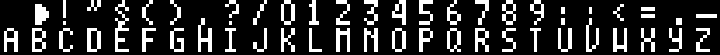
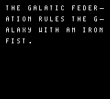
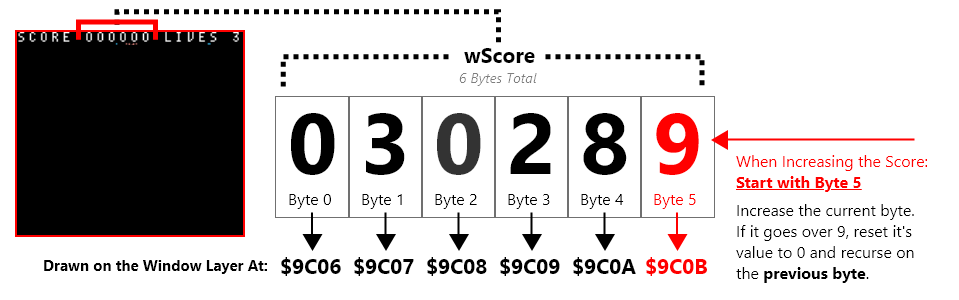
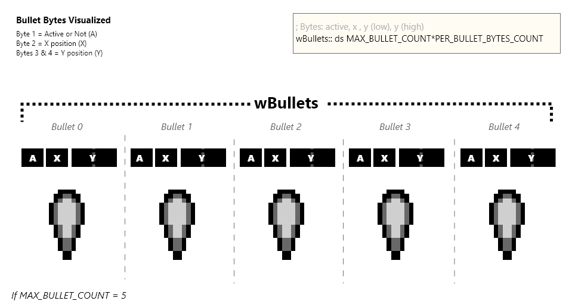
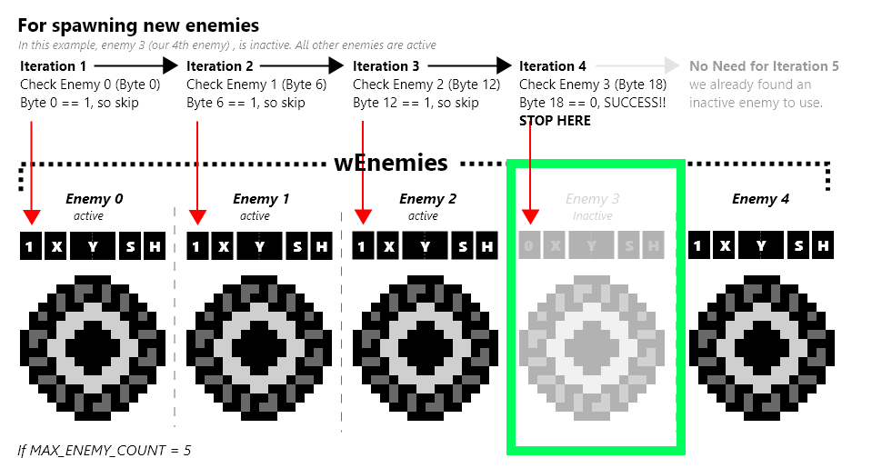

Pagina Principale
üëã Benvenuto in gb-asm-tutorial! Questo tutorial ti insegner√† come programmare giochi per il Game Boy e per il Game Boy Color.
⚠️
While the Game Boy and Game Boy Color are almost the same console, the Game Boy Advance is entirely different. However, the GBA is able to run GB and GBC games! If you are looking to program GBC games and run them on a GBA, you’re at the right place; however, if you want to make games specifically for the GBA, please check out the Tonc tutorial instead.
Comandi
In cima alla pagina puoi vedere alcune icone, sempre presenti se ne dovessi avere bisogno!
- The “burger” toggles the navigation side panel;
- The brush allows selecting a different color theme;
- The magnifying glass pops up a search bar;
- The world icon lets you change the language of the tutorial;
- The printer gives a single-page version of the entire tutorial, which you can print if you want;
- The GitHub icon links to the tutorial’s source repository;
- The edit button allows you to suggest changes to the tutorial, provided that you have a GitHub account.
Ci sono anche delle frecce a lato della pagina (o in fondo, se sei su cellulare) per passare alla pagina successiva o precedente.
E con questo, per iniziare ti basterà premere la freccia a destra :)
Autori
Il tutorial è stato scritto da Eldred “ISSOtm” Habert, Evie, Antonio Vivace, LaroldsJubilantJunkyard e altri collaboratori.
Contribuire
You can provide feedback or send suggestions in the form of Issues on the GitHub repository.
We’re also looking for help for writing new lessons and improving the existing ones! You can go through the Issues to see what needs to be worked on and send Pull Requests!
You can also help translating the tutorial on Crowdin.
Licenza
In breve:
- Code within the tutorial is essentially public domain, meaning that you are allowed to copy it freely without restrictions.
- You are free to copy the tutorial’s contents (prose, diagrams, etc.), modify them, and share that, but you must give credit and license any copies permissively.
- This site’s source code can be freely copied, but you must give a license and copyright notice.
Maggiori Informazioni, per maggiori informazioni sulle rispettive licenze, seguire questi link:
- All the code contained within the tutorial itself is licensed under CC0. To the extent possible under law, all copyright and related or neighboring rights to code presented within GB ASM Tutorial have been waived.
- The contents (prose, images, etc.) of this tutorial are licensed under a Creative Commons Attribution-ShareAlike 4.0 International License.
- Code used to display and format the site is licensed under the MIT License unless otherwise specified.
Tabella di marcia
Il tutorial è suddiviso in tre sezioni. Consiglio vivamente di seguirle in ordine!
Nella parte Ⅰ, lanciamo il nostro primo programma “Hello World!”, per poi analizzarlo al fine di capire come funziona il Game Boy.
Nella parte Ⅱ programmiamo il nostro primo gioco, un clone di Arkanoid; impariamo a dare le prime istruzioni all’hardware per ottenere qualcosa che si possa definire “gioco”. Lungo il percorso commetteremo molti errori, ma questo servirà anche a imparare a risolvere i problemi del nostro codice.
Infine, la Parte Ⅲ riguarda l’uso “avanzato” dell’hardware, dove impareremo a creare giochi ancora più rifiniti e programmeremo uno “Shoot ’Em Up”!
We hope this tutorial will work for you.
But if it doesn’t (the format may not work well for everyone, and that’s okay), I encourage you to look at some other resources, which might work better for you.
It’s also fine to take a break from time to time; feel free to read at your own pace, and to ask for clarifications if anything isn’t clear to you.
Questo tutorial è ancora in lavorazione.
Aiuto
Se avessi problemi con una parte del tutorial, se volessi suggerimenti di qualsiasi tipo o anche solo parlare con noi la chat della comunità GBDev è il posto che cerchi! Partecipiamo tutti attivamente sul sito, perciò non aver timore di fare domande di qualunque tipo! (il canale “ASM” è il posto migliore per discutere di questo tutorial.)
Se preferisci la posta elettronica, puoi raggiungerci all’indirizzo tutorial@<domain>, devi sostituire <domain> con il nome di dominio di questo sito.
Si tratta di una misura antispam, spero che tu capisca.
Preparazione
Per prima cosa, dobbiamo configurare il nostro ambiente di sviluppo. Avremo bisogno di:
- A POSIX environment
- RGBDS v0.5.1 (though v0.5.0 should be compatible)
- GNU Make (preferably a recent version)
- A code editor
- A debugging emulator
‚ùìüòï
The following install instructions are provided on a “best-effort” basis, but may be outdated, or not work for you for some reason. Don’t worry, we’re here to help: ask away, and we’ll help you with installing everything!
Strumenti
Linux e macOS
Buone notizie: hai già completato il primo passo! Dovete solo installare RGBDS e forse aggiornare GNU Make.
macOS
Al momento della stesura di questo articolo, macOS (fino alla 11.0, l’ultima release attuale) ha in dotazione un GNU Make molto datato.
È possibile verificarlo aprendo un terminale ed eseguendo make --version, che dovrebbe indicare “GNU Make” e una data, tra le altre cose.
Se il vostro Make è troppo vecchio, potete aggiornarlo usando la formula di Homebrew make.
Al momento in cui scriviamo, dovrebbe essere stampato un avviso che il Make aggiornato è stato installato come gmake; si può seguire il suggerimento di usarlo come make “predefinito”, oppure usare gmake invece di make in questo tutorial.
Linux
Una volta installato RGBDS, aprite il terminale ed eseguite il comando make --version per controllare la vostra versione di Make (che probabilmente è GNU Make).
Se make non è presente, potrebbe essere necessario installare le build-essentials della propria distribuzione.
Windows
La triste verità è che Windows è un pessimo sistema operativo per noi sviluppatori; tuttavia, è possibile installare degli strumenti che risolvono la maggior parte dei suoi problemi.
Su Windows 10, la scelta migliore è WSL, che permette di eseguire una distribuzione Linux all’interno di Windows. Installate WSL 1 o WSL 2, poi una distribuzione a vostra scelta e quindi seguite nuovamente questi passaggi per la distribuzione Linux appena installata.
In alternativa a WSL, si può usare MSYS2 o Cygwin; per poi consultare le istruzioni per l’installazione di Windows di [RGBDS] (https://rgbds.gbdev.io/install). Per quanto ne so, entrambi dovrebbero fornire una versione sufficientemente aggiornata di GNU Make.
Se avete programmato per altre console, come il GBA, controllate che MSYS2 non sia già installato sul vostro computer. Questo perché devkitPro, un popolare pacchetto di sviluppo homebrew, include MSYS2.
Editor di codice
Qualsiasi editor di codice va bene; personalmente uso Sublime Text con il suo pacchetto sintassi RGBDS; tuttavia è possibile usare qualsiasi editor di testo, compreso il Blocco Note se si è abbastanza pazzi. Awesome GBDev ha una sezione sui pacchetti per l’evidenziazione della sintassi dove potete controllare se il vostro editor preferito supporta RGBDS.
Emulatore
Using an emulator to play games is one thing; using it to program games is another. The two aspects an emulator must fulfill to allow an enjoyable programming experience are:
- Debugging tools:
When your code goes haywire on an actual console, it’s very difficult to figure out why or how.
There is no console output, no way to
gdbthe program, nothing. However, an emulator can provide debugging tools, allowing you to control execution, inspect memory, etc. These are vital if you want GB dev to be fun, trust me! - Good accuracy:
Accuracy means “how faithful to the original console something is”.
Using a bad emulator for playing games can work (to some extent, and even then…), but using it for developing a game makes it likely to accidentally render your game incompatible with the actual console.
For more info, read this article on Ars Technica (especially the
An emulator for every game
section at the top of page 2). You can compare GB emulator accuracy on Daid’s GB-emulator-shootout.
The emulator I will be using for this tutorial is Emulicious. Users on all OSes can install the Java runtime to be able to run it. Other debugging emulators are available, such as Mesen2, BGB (Windows/Wine only), SameBoy (graphical interface on macOS only); they should have similar capabilities, but accessed through different menu options.
Hello World!
In questa lezione inizieremo ad assemblare il nostro primo programma. Il resto del capitolo sarà dedicato a spiegare come e perché funziona.
Tenete presente che da ora dovremo lanciare molti comandi, quindi è il momento di aprire una finestra del terminale.
È buon norma creare una nuova directory (mkdir gb_hello_world, per esempio, poi cd gb_hello_world per entrare nella nuova directory).
Grab the following files (right-click each link, “Save Link As…”), and place them all in this new directory:
Quindi, sempre dal terminale, all’interno di quella directory, lanciate i tre comandi seguenti.
⚠️
Per chiarezza espositiva, all’inizio di ogni comando, ho aggiunto un $, ma voi non digitatelo!
rgbasm -L -o hello-world.o hello-world.asm
rgblink -o hello-world.gb hello-world.o
rgbfix -v -p 0xFF hello-world.gb
‼️
Fate attenzione agli argomenti! Alcune opzioni, come -o, usano l’argomento dopo di esse come parametro:
rgbasm -L -o hello-world.asm hello-world.owon’t work (and may corrupthello-world.asm!)rgbasm -L hello-world.asm -o hello-world.owill workrgbasm hello-world.asm -o hello-world.o -Lwill also work
In caso di spazi all’interno di un argomento, è necessario metterlo tra virgolette:
rgbasm -L -o hello world.o hello world.asmwon’t workrgbasm -L -o "hello world.o" "hello world.asm"will work
It should look like this:
(Se riscontrate un errore che non riuscite a risolvere da soli, non abbiate paura di chiedere! Lo risolveremo insieme)
Congrats!
You just assembled your first Game Boy ROM!
Now, we just need to run it; open Emulicious, then go “File”, then “Open File”, and load hello-world.gb.
Potreste anche prendere una flash cart (cartuccia flash) (io uso l’EverDrive GB X5, ma ci sono molte alternative), caricarci la vostra ROM e farla girare su una console vera e propria!
Bene, ora che abbiamo qualcosa che funziona, è il momento di togliere le tende per scoprire cosa c’è sotto…
Strumenti di lavoro
Dunque, nella lezione precedente abbiamo scritto una piccola ROM “Hello World!”. Ora è il momento di capire meglio cosa abbiamo fatto.
RGBASM e RGBLINK
Iniziamo spiegando cosa fanno rgbasm e rgblink.
RGBASM è un assembler (compilatore).
Il suo compito è leggere il codice sorgente (nel nostro caso hello-world.asm e hardware.inc) e generare un file di codice che però è incompleto:
RGBASM non sempre ha tutte le informazioni che gli servono a generare una ROM, quindi produce dei file oggetto che fanno da intermediari (con estensione .o).
RGBLINK è un linker. Il suo compito è usare le informazioni dei file oggetto (che nel nostro caso è solo uno) ed unirli (in inglese “link”) in una ROM. RGBLINK potrebbe sembrare superfluo, ma è solo perché la ROM che abbiamo guardato è davvero piccola: quando nella seconda parte il nostro progetto crescerà, la sua utilità sarà più apparente.
Quindi: Codice sorgente → rgbasm → File oggetto → rgblink → ROM, giusto?
Beh, non esattamente.
RGBFIX
RGBLINK produce sì una ROM, ma se la provassimo su un GameBoy non funzionerebbe. Nelle ROM deve sempre essere presente qualcosa chiamato header: questa sezione contiene informazioni sulla ROM, come il nome del gioco, il nome dell’autore, se sia compatibile con il GameBoy Color ed altro. Per il momento abbiamo impostato tutti i valori a zero nel programma per semplicità, ma ne riparleremo nella seconda parte del tutorial.
However, the header contains three crucial fields:
- The Nintendo logo,
- the ROM’s size,
- and two checksums.
Quando la console viene accesa viene eseguito un programma chiamato ROM di avvio (boot ROM) responsabile, tra l‚Äôaltro, dell‚Äôanimazione di avvio leggendo il logo di Nintendo dalla ROM. Alla fine dell‚Äôanimazione, per√≤, la ROM di avvio controlla che il logo di Nintendo sia corretto, e interrompe l‚Äôesecuzione se non lo √®: in pratica, se non azzecchiamo il logo il nostro gioco non partir√† mai‚Ķ üò¶ Questo meccanismo era per evitare la pirateria; per nostra fortuna, per√≤, non √® più valida perci√≤ non dobbiamo preoccuparci! üòÑ
Allo stesso modo, la ROM di avvio calcola anche un checksum dell’header, presumibilmente per garantire che non sia corrotto. L’header contiene anche una copia di questo checksum; se non corrisponde a quello calcolato dalla ROM di avvio, la ROM di avvio si blocca!
L’header contiene anche un checksum dell’intera ROM, ma non viene mai utilizzato. Non costa niente ed è una buona idea, comunque, farlo bene.
Infine, l’header contiene anche la dimensione della ROM, necessaria per emulatori e dalle flash cart.
RGBFIX serve proprio a compilare l’header in automatico, in particolare questi tre campi senza i quali il GameBoy non farà funzionare il gioco.
L’opzione -v dice a RGBFIX di rendere valido l’header, inserendo il logo e calcolando le checksum.
L’opzione -p 0xFF invece aggiunge dei byte alla ROM finché non raggiunge una dimensione valida (in inglese padding), per poi scriverla nell’header.
Perfetto!
Quindi, per riassumere:
codice sorgente → rgbasm → file oggetto → rgblink → ROM “vera” → rgbfix → ROM funzionante
A questo punto ti potresti chiedere: perché non si uniscono tutti questi programmi in uno solo?
Ci sono ragioni nella storia di questi programmi, ma soprattutto RGBLINK può fare altro (per esempio usando -x), e a volte RGBFIX è usato senza che RGBLINK sia minimamente necessario.
Nomi dei file
A RGBDS, come alla maggior parte dei programmi, non importa come chiami i file né l’estensione che gli dai: l’importante è il contenuto.
Per esempio molti usano l’estensione .s per il sorgente, oppure .obj per gli oggetti.
Binario ed esadecimale
Prima di passare al codice dobbiamo introdurre alcuni concetti.
Quando si programma ad un basso livello è fondamentale capire bene i sistemi binario ed esadecimale. Se già conoscessi questi concetti, in fondo alla pagina ci sono delle informazioni specifiche all’uso di RGDBS.
Cos’è il binario? È semplicemente un modo alternativo di rappresentare i numeri, in base 2. Noi contiamo in base 10, ovvero con 10 cifre: 0, 1, 2, 3, 4, 5, 6, 7, 8, e 9. Le cifre hanno una funzione ben specifica:
42 = 4 × 10 + 2
= 4 × 10^1 + 2 × 10^0
↑ ↑
These tens come from us counting in base 10!
1024 = 1 × 1000 + 0 × 100 + 2 × 10 + 4
= 1 × 10^3 + 0 × 10^2 + 2 × 10^1 + 4 × 10^0
↑ ↑ ↑ ↑
And here we can see the digits that make up the number!
ℹ️
^ qui significa “alla potenza di”, dove X^N è uguale a moltiplicare X con se stesso N volte, e X ^ 0 = 1.
Con le cifre decimali ogni numero viene scomposto in maniera univoca in potenze di 10 (il decimale è la base 10, ricordi?). Ma perché fermarsi alle potenze di 10? Potremmo invece usare altre basi, come la base 2 (il perché della base 2 sarà spiegato più avanti).
Il sistema binario è in base 2, quindi ha solo due cifre (chiamate bit): 0 e 1. Possiamo quindi generalizzare il principio descritto sopra e riscrivere i due numeri di prima in modo simile:
42 = 1 × 32 + 0 × 16 + 1 × 8 + 0 × 4 + 1 × 2 + 0
= 1 × 2^5 + 0 × 2^4 + 1 × 2^3 + 0 × 2^2 + 1 × 2^1 + 0 × 2^0
↑ ↑ ↑ ↑ ↑ ↑
And since now we're counting in base 2, we're seeing twos instead of tens!
1024 = 1 × 1024 + 0 × 512 + 0 × 256 + 0 × 128 + 0 × 64 + 0 × 32 + 0 × 16 + 0 × 8 + 0 × 4 + 0 × 2 + 0
= 1 × 2^10 + 0 × 2^9 + 0 × 2^8 + 0 × 2^7 + 0 × 2^6 + 0 × 2^5 + 0 × 2^4 + 0 × 2^3 + 0 × 2^2 + 0 × 2^1 + 0 × 2^0
↑ ↑ ↑ ↑ ↑ ↑ ↑ ↑ ↑ ↑ ↑
Quindi, applicando lo stesso principio, possiamo dire che in base 2, 42 si scrive come 101010 e 1024 come 10000000000.
Poiché non è possibile distinguere tra dieci (10 decimale) e due (10 binario), l’assemblaggio RGBDS prevede numeri binari preceduti da un segno di percentuale: 10 è dieci e %10 è due.
Ok, ma perché proprio la base 2? Visto che un bit può essere solo 0 o 1, è molto facile rappresentarlo: può essere “ON” o “OFF”, vuoto o pieno, ecc! Se ad esempio si vuole creare una memoria da un bit basta prendere una scatola: se è vuota allora simboleggia uno 0; se contiene qualcosa, allora è un 1. I computer manipolano quindi principalmente numeri binari e questo ha molte implicazioni, come vedremo nel corso di questo tutorial.
Esadecimale
Ricapitolando: il decimale non √® pratico per i computer, che si affidano invece ai numeri binari (base 2). Ok, ma il binario √® davvero difficile da usare per noi programmatori. Prendiamo %10000000000, ovvero 2048; mentre per scriverlo in decimale bastano solo 4 cifre, in binario ne servono 12! E probabilmente non avete neanche notato che ho scritto uno zero di troppo! Per fortuna arriva l‚Äôesadecimale a salvare la situazione! ü¶∏
La base 16 funziona esattamente come tutte le altre basi, ma con 16 cifre (chiamate “nibbles” in inglese): 0, 1, 2, 3, 4, 5, 6, 7, 8, 9, A, B, C, D, E, ed F.
42 = 2 × 16 + 10
= 2 × 16^1 + A × 16^0
1024 = 4 × 256 + 0 × 16 + 0
= 4 × 16^2 + 0 × 16^1 + 0 × 16^0
Come per il binario useremo un prefisso per indicare l’esadecimale, cioè $.
Quindi, 42 = $2A e 1024 = $400.
Questo è molto più compatto del binario, e anche un po’ più del decimale; ma ciò che rende l’esadecimale molto interessante è che una sua cifra corrisponde esattamente a 4 bit!
| Nibble | Bits |
|---|---|
| $0 | %0000 |
| $1 | %0001 |
| $2 | %0010 |
| $3 | %0011 |
| $4 | %0100 |
| $5 | %0101 |
| $6 | %0110 |
| $7 | %0111 |
| $8 | %1000 |
| $9 | %1001 |
| $A | %1010 |
| $B | %1011 |
| $C | %1100 |
| $D | %1101 |
| $E | %1110 |
| $F | %1111 |
Ci√≤ rende facilissimo convertire tra binario ed esadecimale, e mantenere una notazione sufficientemente compatta. Per questo, l‚Äôesadecimale √® molto più utilizzato del binario. E non preoccuparti, puoi ancora usare il decimale üòú
(Nota: si potrebbe pensare che anche l’ottale, cioè la base 8, funzioni altrettanto bene; tuttavia avremo a che fare perlopiù con unità di 8 bit, per le quali l’esadecimale funziona molto meglio dell’ottale. Volendo, RGBDS permette di usare l’ottale tramite il prefisso &, ma non l’ho mai visto usare nella pratica)
üí°
Se vi è difficile convertire i numeri tra le diverse basi, controllate se la vostra calcolatrice ha una modalità “programmatore” o un altro modo per convertire i numeri: la maggior parte delle calcolatrici lo ha.
Riepilogo
- In RGBDS assembly, the hexadecimal prefix is
$, and the binary prefix is%. - Hexadecimal can be used as a “compact binary” notation.
- Using binary or hexadecimal is useful when individual bits matter; otherwise, decimal works just as well.
- For when numbers get a bit too long, RGBASM allows underscores between digits (
123_465,%10_1010,$DE_AD_BE_EF, etc.)
Registri
Bene! Ora che sappiamo cosa sono i bit, cerchiamo di capire come si usano. Non ti preoccupare, tutto questo √® per lo più in preparazione alla prossima parte, dove ci butteremo finalmente nel codice vero e proprio üëÄ
First, if you opened Emulicious, you have been greeted with just the Game Boy screen. So, it’s time we pop the debugger open! Go to “Tools”, then click “Debugger”, or press F1. Then in the debugger’s menu, click “View”, then click “Show Addresses”
Il debugger potrebbe sembrare incomprensibile all’inizio, ma non ti preoccupare: ti ci abituerai in fretta! Per il momento guarda in alto a destra, dove c’è un piccolo spazio intitolato register viewer (visualizzatore dei registri).

⚠️
Il visualizzatore mostra sia i registri della CPU che alcuni registri hardware. In questa lezione parleremo solo dei registri della CPU, perciò non ti preoccupare se salteremo alcuni nomi.
Ma cosa sono questi registri della CPU? Ti faccio un esempio: immagina di star preparando una torta. Ovviamente avrai una ricetta da seguire, come ad esempio “sciogli 125g di cioccolato e 125g di burro, mescola il tutto con due uova” e così via. Dopo aver preso gli ingredienti, non li usi direttamente nel frigo; per comodità, li prenderai e li metterai su un banco da lavoro o un tavolo dove lavorarci più facilmente.
I registri sono questo tavolo, su cui il processore poggia temporaneamente i suoi ingredienti. Più concretamente, sono dei piccoli spazi di memoria (Il GameBoy ne ha solo 10 byte, e anche le CPU moderne hanno meno di un kilobyte se non si contano i registri SIMD). Eseguire le operazioni direttamente sulla memoria è scomodo, sarebbe come rompere le uova nel frigo: per questo le spostiamo sul tavolo, i registri, prima di romperle.
ℹ️
Ovviamente ci sono eccezioni a questa regola, come un po’ tutte le regole che ti spiegheremo nel tutorial; stiamo semplificando di molto le cose per mantenerle ad un livello abbastanza facile da comprendere, perciò non prendere mai queste regole troppo alla lettera.
Registri Generici
A grandi linee ci sono due tipi di registri: registri generici e registri speciali. Un registro generico (abbreviato GPR) può essere usato per dati di qualunque tipo. Qualche GPR ha anche delle funzioni più specifiche, come vedremo più in là; in generale per distinguerli da quelli speciali chiediti “posso inserirci dati arbitrari?”.
Parleremo poi dei registri speciali; hanno funzioni particolari che non abbiamo ancora spiegato e perciò li spiegheremo quando parleremo della funzione specifica, visto che fino ad allora non ne capiremmo lo scopo.
La CPU del Game Boy ha sette GPR a 8 bit: a, b, c, d, e, h e l.
“8 bit” significa che memorizzano 8 bit.
Pertanto, possono memorizzare numeri interi da 0 a 255 (%1111_1111 alias $FF).
`a’ è l’accumulatore, e come vedremo più avanti può essere usato in modi particolari.
Questi registri hanno un’altra caratteristica interessante; sono tutti (tranne a) accoppiati ad un altro registro, e queste coppie possono funzionare da registri a 16 bit: BC, DE, e HL.
Ma tieni sempre a mente che le coppie non sono indipendenti dai registri che li formano; se, ad esempio, D contiene 192 ($C0) ed E 222 ($DE) allora DE conterrà 49374 ($C0DE) = D × 0x100 + E.
Tutte le altre coppie funzionano allo stesso modo.
Quindi, cambiare il valore di DE modifica sia quello di D che di E allo stesso tempo e modificare D o E cambierà il valore della coppia DE.
Ok, ma come facciamo a usare questi registri?
È il momento di dare un’occhiata all’Assembly!
Primi passi in Assembly
Bene, ora che sappiamo cosa fanno gli strumenti, vediamo che lingua parla RGBASM.
Prenderò una breve porzione dell’inizio di hello-world.asm, in modo da essere d’accordo sui numeri di riga e da avere un’evidenziazione della sintassi anche se il vostro editor non la supporta.
INCLUDE "hardware.inc"
SECTION "Header", ROM0[$100]
jp EntryPoint
ds $150 - @, 0 ; Make room for the header
EntryPoint:
; Shut down audio circuitry
ld a, 0
ld [rNR52], a
Analizziamolo insieme. Sappi che per il momento salteremo molte delle funzionalità di RGBASM; se fossi curioso di saperne di più, dovrai aspettare fino alla seconda o terza parte oppure leggere la documentazione.
Commenti
Iniziamo dalla riga 10, che dovrebbe essere grigia nel riquadro qui sopra.
I punti e virgola ; indicano un commento.
I commenti (che finiscono alla fine della riga) sono ignorati dall’assembler, indipendentemente dal contenuto.
Come vedi alla riga 7, puoi anche inserire commenti dopo aver scritto altro.
I commenti sono molto importanti in tutti i linguaggi di programmazione: ti aiutano a descrivere la funzione del tuo codice. È più o meno la differenza tra “scalda il forno fino a 180°C” e “scalda il forno a 180°C, se lo scaldassi di più la torta brucerebbe”. I commenti sono utilissimi in ogni linguaggio di programmazione, ma in Assembly sono ancora più importanti: infatti, il codice Assembly è molto più astratto.
Istruzioni
Assembly is a very line-based language. Each line can contain one of two things:
- a directive, which instructs RGBASM to do something, or
- an instruction1, which is written directly into the ROM.
Parleremo delle direttive più avanti, per ora concentriamoci sulle istruzioni: per esempio, nello snippet qui sopra, ignoreremo le righe 1 (INCLUDE), 7 (ds) e 3 (SECTION).
Per continuare l’analogia con la preparazione di una torta, le istruzioni sono come i passi di una ricetta. Il processore (CPU) esegue un’istruzione alla volta. Istruzione dopo istruzione… dopo un po’ si arriva al risultato! Come cuocere una torta, disegnare “Hello World”, oppure mostrarti un tutorial sull’Assembly del GameBoy!
Le istruzioni sono composte da una mnemonica, un nome con cui le puoi invocare, e dei parametri, ovvero su cosa va eseguita l’operazione. Ad esempio: in “sciogli il cioccolato ed il burro in una padella” l’istruzione è tutta la frase; la mnemonica sarebbe l’azione, ovvero sciogli, mentre i parametri sono gli oggetti della frase (cioccolato, burro, padella).
Cominciamo dall’istruzione più importante: ld.
ld sta per “carica”, e semplicemente copia i dati contenuti nel secondo parametro (“RHS”) nel primo (“LHS”).
Per esempio, guardiamo la riga 11 del nostro programma, ld a, 0: copia (“carica”) il numero zero nel registro a2.
Per fare un altro esempio, a riga 33 troviamo ld a, b: significa semplicemente “copia il valore di b in a.
| Instruction | Mnemonic | Effect |
|---|---|---|
| Load | ld | Copies values around |
ℹ️
Per via delle limitazioni del processore, non tutte le combinazioni di operandi sono valide per ld e per molte altre istruzioni; ne parleremo in seguito, quando arriverà il momento di scrivere il nostro codice.
ü§î
RGBDS ha una lista delle istruzioni del GameBoy che vale la pena tenere tra i preferiti, e che si può anche consultare dal terminale scrivendo man 7 gbz80 se RGBDS è installato sulla propria macchina (tranne su Windows…).
Le descrizioni che trovate in quella pagina sono più concise: sono intese come un promemoria, non come un tutorial.
Direttive
Quindi, in un certo senso, le istruzioni sono destinate al processore del GameBoy mentre i commenti sono destinati al programmatore. Ma alcune righe non sono né l’una né l’altra cosa, e sono invece dei metadati destinati a RGBDS stesso. Queste sono chiamate direttive e il nostro “Hello World” ne contiene tre.
Includere un altro file
INCLUDE "hardware.inc"
La riga 1 include hardware.inc3.
Includendo un file è come se copiassimo il suo contenuto alla riga dove inseriamo la direttiva.
Così facendo, si può riciclare facilmente il codice in diversi file: se, ad esempio, due file a.asm e b.asm includono hardware.inc basta modificare il file perché le modifiche si applichino ad a.asm e b.asm.
Se invece copiassi a mano il contenuto di hardware.inc in a.asm e b.asm dovresti modificare il contenuto di entrambi ogni volta che vuoi apportare un cambiamento, che non è solo uno spreco di tempo ma aumenta la possibilità di commettere errori.
hardware.inc definisce alcune costanti molto utili per interfacciarsi con l’hardware del GameBoy.
Le costanti non sono altro che dei nomi a cui è assegnato un valore: scrivere una costante equivale a scrivere il valore che le è assegnato.
Questo torna molto utile: è molto più semplice ricordare il registro “LCD Control” (impostazioni dello schermo) col nome rLCDC piuttosto che ricordare l’indirizzo $FF40.
Parleremo delle costanti in modo più approfondito nella Parte Ⅱ.
Sezioni
Spieghiamo innanzitutto che cos’è una “sezione”, poi vedremo che cosa fa la riga 3.
Una sezione rappresenta un intervallo contiguo di memoria che, di base, finisce da qualche parte non nota in anticipo.
Se si vuole vedere dove finisce ogni sezione si può chiedere a RGBLINK di generare un “file mappa” con l’opzione -m:
rgblink hello-world.o -m hello-world.map
…e possiamo vedere, per esempio, dove è finita la sezione "Tilemap":
SECTION: $05a6-$07e5 ($0240 bytes) ["Tilemap"]
Le sezioni non possono essere divise da RGBDS, che è utile ad esempio per il codice poiché il processore esegue le istruzioni una dopo l’altra (a parte con i salti, che vedremo più avanti). Va trovato il giusto equilibrio per il numero di sezioni: non troppe ma neanche troppo poche, anche se in genere non ha molta importanza fino a quando non si inizia a parlare di banche di memoria.
Quindi, per ora, assumiamo che una sezione debba contenere cose che “vanno insieme” dal punto di vista topico, ed esaminiamo una delle nostre.
SECTION "Header", ROM0[$100]
Quindi!
Cosa fa questa riga?
Altro non è che la dichiarazione di una nuova sezione; tutte le istruzioni e i dati dopo questa riga e fino alla successiva dichiarazione SECTION saranno inseriti in questa sezione appena creata.
Prima della prima direttiva SECTION non c’è una sezione “attiva”: scrivere dati o codice al di fuori di una sezione ci darà l’errore Cannot output data outside of a SECTION.
Il nome della nuova sezione è “Header”.
I nomi delle sezioni possono contenere qualsiasi carattere (e anche essere vuoti, se si vuole) e devono essere unici4.
La parola chiave ROM0 indica a quale “tipo di memoria” appartiene la sezione (ecco un elenco).
Ne parleremo nella Parte Ⅱ.
Dove dice [100$] invece è più interessante, perché è un’indicazione speciale per questa sezione.
Se ricordi, prima abbiamo detto che:
a section […] by default, ends up somewhere not known in advance.
Però alcune parti della memoria sono speciali, e quindi a volte è necessario che una sezione specifica copra un intervallo di memoria specifico.
Per permetterlo, RGBASM ha la sintassi [addr] che forza l’indirizzo iniziale della sezione a essere addr.
In questo caso, l’intervallo di memoria $100-$14F è speciale perché è l’header della ROM. Parleremo dell’header tra un paio di lezioni, ma per il momento basta sapere che non dobbiamo inserire né codice né dati in quello spazio. E come facciamo? Innanzitutto, iniziamo una sezione all’indirizzo $100, dopodiché riserviamo un po’ di spazio.
Lasciare spazio
jp EntryPoint
ds $150 - @, 0 ; Make room for the header
La riga 7 afferma di “fare spazio per l’header”, di cui ho parlato brevemente poco sopra.
Per ora, concentriamoci su ciò che ds fa effettivamente.
ds è usato per allocare staticamente della memoria.
Riserva un certo numero di byte, che sono impostati ad un certo valore dato.
Il primo argomento di ds, in questo caso $150 - @, è quanti byte riservare.
Il secondo argomento (che è opzionale), in questo caso 0, è il valore a cui impostare ogni byte riservato5.
Vedremo perché questi byte devono essere riservati in un paio di lezioni.
È importante notare che il primo argomento è un’espressione.
RGBDS (fortunatamente!) supporta l’inserimento di espressioni arbitrarie pressoché ovunque.
Quest’espressione è una semplice sottrazione: $150 meno @, che è un simbolo speciale che sta per “l’indirizzo in memoria attuale”.
Un simbolo è essenzialmente “un nome associato a un valore”, di solito un numero. Nel corso dell’esercitazione esploreremo i diversi tipi di simboli, a partire dalle etichette nella prossima sezione.
Un simbolo numerico utilizzato in un’espressione viene sostituito dal suo valore, che dev’essere noto al momento della compilazione della ROM; in particolare, non può dipendere dal contenuto di alcun registro.
Ora vi starete chiedendo cosa siano questi “indirizzi di memoria” di cui continuo a parlare. Andiamo subito a scoprirlo!
Technically, instructions in RGBASM are implemented as directives, basically writing their encoded form to the ROM; but the distinction between the instructions in the source code and those in the final ROM is not worth bringing up right now.
The curious reader may ask where the value is copied from. The answer is simply that the “immediate” byte ($00 in this example) is stored in ROM just after the instruction’s opcode byte, and it’s what gets copied to a.
We will come back to this when we talk about how instructions are encoded later on.
hardware.inc itself contains more directives, in particular to define a lot of symbols.
They will be touched upon much later, so we won’t look into hardware.inc yet.
Section names actually only need to be unique for “plain” sections, and function differently with “unionized” and “fragment” sections, which we will discuss much later.
Actually, since RGBASM 0.5.0, ds can accept a list of bytes, and will repeat the pattern for as many bytes as specified.
It just complicates the explanation slightly, so I omitted it for now.
Also, if the argument is omitted, it defaults to what is specified using the -p option to RGBASM.
Memoria
üéâ
Congratulazioni, avete appena finito le lezioni più difficili del tutorial! Dal momento che avete le basi, d’ora in poi vedremo codice sempre più concreto.
Se guardiamo alla riga 29 leggiamo ld a, [de].
Stando a quanto abbiamo appena appreso, questo copia un valore nel registro a… ma da dove?
Cosa significano queste parentesi?
Per rispondere dobbiamo parlare della memoria.
Cos’è una memoria?
Lo scopo della memoria è quello di immagazzinare informazioni. Su un foglio di carta o su una lavagna si possono scrivere lettere per memorizzare, ad esempio, la lista della spesa. Ma cosa si può memorizzare nella memoria di un computer? La risposta a questa domanda è corrente1. La memoria del computer è costituita da piccole celle in grado di immagazzinare corrente. Ma, come abbiamo visto nella lezione sul binario, la presenza o l’assenza di corrente può essere utilizzata per codificare i numeri binari!
Per farla breve: la memoria immagazzina numeri. Difatti la memoria è una lunga lista di numeri, memorizzati in celle. Per identificare in modo univoco ogni cella, le viene assegnato un numero (e che altro!) chiamato indirizzo. Come i numeri civici! La prima cella ha l’indirizzo 0, poi l’indirizzo 1, 2 e così via. Sul Game Boy ogni cella contiene 8 bit, cioè un byte.
Quante cellule ci sono? In realtà questa è una domanda trabocchetto…
I tanti tipi di memoria
There are several memory chips in the Game Boy, but we can put them into two categories: ROM and RAM 2. ROM simply designates memory that cannot be written to3, and RAM memory that can be written to.
Per via del loro funzionamento il processore ed i circuiti di memoria possono utilizzare un solo numero per gli indirizzi. Torniamo all’analogia dei “numeri civici”: ogni circuito di memoria è una strada, con la sua serie di numeri, ma il processore non ha idea di cosa sia una strada, si occupa solo di numeri civici. Per consentire al processore di parlare con più circuiti serve una sorta di “servizio postale”, il selezionatore di circuito (“chip selector” in inglese), che ha il compito di tradurre i numeri civici del processore in una via ed un numero civico effettivi.
For example, let’s say a convention is established where addresses 0 through 1999 go to chip A’s addresses 0–1999, 2000–2999 to chip B’s 0–999, and 3000–3999 to chip C’s 0–999. Then, if the CPU asks for the byte at address 2791, the chip selector will ask chip B for the byte at its own address 791, and forward the reply to the CPU.
Poiché gli indirizzi trattati dal processore non corrispondono direttamente a quelli dei circuiti si parla di indirizzi logici (qui, quelli del processore) e di indirizzi fisici (qui, quelli dei circuiti), e la corrispondenza è chiamata mappa di memoria (“memory map” in inglese). Poiché stiamo programmando il processore ci occuperemo solo di indirizzi logici, ma è fondamentale tenere presente che indirizzi diversi possono essere supportati da circuiti di memoria diversi, poiché ogni circuito ha caratteristiche uniche.
This may sound complicated, so here is a summary:
- Memory stores numbers, each 8-bit on the Game Boy.
- Memory is accessed byte by byte, and the cell being accessed is determined by an address, which is just a number.
- The CPU deals with all memory uniformly, but there are several memory chips each with their own characteristics.
Mappa di memoria del Game Boy
Adesso rispondiamo alla domanda che ci aveva portato a questa sezione: quante celle di memoria ci sono sul Game Boy? Ora possiamo riformulare meglio questa domanda come “quanti indirizzi logici ci sono?” o “quanti indirizzi fisici ci sono in totale?”.
Gli indirizzi logici, che sono solo numeri, sono a 16 bit sul Game Boy. Pertanto, ci sono 2^16 = 65536 indirizzi logici, da $0000 a $FFFF. Ma quanti sono gli indirizzi fisici? Ecco una mappa della memoria per gentile concessione di Pan Docs (anche se la semplificherò un po’):
| Start | End | Name | Description |
|---|---|---|---|
| $0000 | $7FFF | ROM | The game ROM, supplied by the cartridge. |
| $8000 | $9FFF | VRAM | Video RAM, where graphics are stored and arranged. |
| $A000 | $BFFF | SRAM | Save RAM, optionally supplied by the cartridge to save data to. |
| $C000 | $DFFF | WRAM | Work RAM, general-purpose RAM for the game to store things in. |
| $FE00 | $FE9F | OAM | Object Attribute Memory, where “objects” are stored. |
| $FF00 | $FF7F | I/O | Neither ROM nor RAM, but this is where you control the console. |
| $FF80 | $FFFE | HRAM | High RAM, a tiny bit of general-purpose RAM which can be accessed faster. |
| $FFFF | $FFFF | IE | A lone I/O byte that’s separated from the rest for some reason. |
$8000 + $2000 + $2000 + $2000 + $A0 + $80 + $7F + 1 fanno in totale $E1A0, ovvero 57760 byte di memoria che si possono effettivamente usare. E a questo punto potreste chiedervi: “E i restanti 7776 byte? Cosa succede quando provo ad usarli?”; la risposta è: “Dipende, è complicato; evitate di accedervi”.
Etichette
Ok, tutto questo è molto bello, ma non vi aspetterete certo che io tenga in mente tutti questi indirizzi per conto mio, giusto?? Beh, non temere, perché abbiamo le etichette!
Le etichette sono simboli che in pratica permettono di assegnare un nome a un indirizzo di memoria.
Un’etichetta viene dichiarata come alla riga 9 (EntryPoint:): all’inizio della riga si scrive il nome dell’etichetta, seguito da due punti, ed essa si riferirà al byte immediatamente successivo.
Quindi, per esempio, EntryPoint si riferisce al ld a, 0 subito dopo (più precisamente, al primo byte di quell’istruzione, ma ci arriveremo quando ci arriveremo).
Sbirciando all’interno di hardware.inc si vedrà che, per esempio, rNR52 non è definito come un’etichetta.
Il motivo è che queste sono costanti, di cui parleremo più in là; visto che si usano in modo quasi identico alle etichette, per il momento le considereremo uguali.
Scrivere il nome di un’etichetta equivale a scrivere l’indirizzo del byte a cui fa riferimento (con alcune eccezioni che vedremo nella Parte Ⅱ).
Per esempio, si consideri la ld de, Tiles alla riga 25.
Tiles (riga 64) si riferisce al primo byte dei dati delle mattonelle; se assumiamo che i dati delle mattonelle finiscono per essere memorizzati a partire da $0193, allora ld de, Tiles è equivalente a ld de, $0193!
Cosa sono queste parentesi?
Bene, siamo arrivati a questo punto perché volevamo sapere cosa significano le parentesi in ld a, [de].
In pratica, possono essere lette come “all’indirizzo…”.
Per esempio, ld a, b può essere letto come “copia in a il valore memorizzato in b”; ld a, [$5414] si legge come “copia in a il valore memorizzato all’indirizzo $5414”, e ld a, [de] si legge come “copia in a il valore memorizzato all’indirizzo de”.
Aspettate, cosa significa?
Beh, se de contiene il valore $5414, allora ld a, [de] farà la stessa cosa di ld a, [$5414].
Se avete familiarità con il C, queste parentesi sono sostanzialmente il modo in cui viene implementato l’operatore di dereferenziazione.
hli
I lettori attenti avranno notato il ld [hli], a appena sotto il ld a, [de] che abbiamo appena studiato.
[de] ha senso perché è una delle coppie di registri che abbiamo visto un paio di lezioni fa, ma [hli]?
In realtà, è una notazione speciale, che può essere scritta anche come [hl+].
Funziona come [hl], ma hl viene incrementato subito dopo l’accesso alla memoria.
[hld]/[hl-] è lo specchio di questa, decrementando hl invece di incrementarlo.
Un esempio
Quindi, se osserviamo le prime due istruzioni di CopyTiles:
ld a, [de]
ld [hli], a
…possiamo vedere che stiamo copiando il byte in memoria puntato da de (cioè il cui indirizzo è contenuto in de) nel byte puntato da hl.
Qui, a serve come memoria temporanea, poiché la CPU non è in grado di eseguire direttamente ld [hl], [de].
Già che ci siamo, esaminiamo il resto di .copyTiles nelle lezioni successive!
Actually, this depends a lot on the type of memory. A lot of memory nowadays uses magnetic storage, but to keep the explanation simple, and to parallel the explanation of binary given earlier, let’s assume that current is being used.
There are other types of memory, such as flash memory or EEPROM, but only Flash has been used on the Game Boy, and for only a handful of games; so we can mostly forget about them.
No, really!
Mask ROM is created by literally punching holes into a layer of silicon using acid, and e.g. the console’s boot ROM is made of hard-wired transitors within the CPU die.
Good luck writing to that!
“ROM” is sometimes (mis)used to refer to “persistent memory” chips, such as flash memory, whose write functionality was disabled.
Most bootleg / “repro” Game Boy cartridges you can find nowadays actually contain flash; this is why you can reflash them using specialized hardware, but original cartridges cannot be.
Header
Torniamo a una certa riga all’inizio di hello-world.asm.
ds $150 - @, 0 ; Make room for the header
Che cos’è questo misterioso header, detto anche intestazione? Perché dobbiamo allocargli uno spazio specifico? Queste e tante altre domande troveranno una risposta in questa lezione!
Cos’è l’header?
La prima cosa da fare è spiegare cosa è l’header. È la regione di memoria da $0104 a $014F (inclusa). Contiene metadati sulla ROM, come il titolo, la compatibilità con il Game Boy Color, le dimensioni, due checksum e, cosa interessante, il logo Nintendo che viene visualizzato durante l’animazione di accensione.
Queste e altre informazioni sono disponibili nei documenti Pan.
È interessante notare che la maggior parte delle informazioni contenute nell’header non ha importanza in un hardware reale (la dimensione della ROM è determinata solo dalla capacità del chip ROM nella cartuccia, non dal byte nella intestazione). Difatti, alcuni prototipi di ROM hanno addirittura informazioni errate nell’header!
La maggior parte dell’header veniva utilizzata solo dal reparto di produzione di Nintendo per sapere quali componenti inserire nella cartuccia quando si pubblicava una ROM. Pertanto, solo le ROM inviate a Nintendo dovevano avere una intestazione perfettamente accurata; le ROM utilizzate per i test interni dovevano solo superare i controlli della ROM di avvio, che spiegheremo più avanti.
Tuttavia, nella nostra epoca “moderna”, l’header è molto importante. Gli emulatori (compresi gli emulatori hardware, come le flashcard) devono emulare l’hardware presente nella cartuccia e fanno affidamento su alcuni dei valori presenti nell’header, dato che questa sezione è l’unica fonte di informazioni sull’hardware che la cartuccia della ROM dovrebbe contenere.
ROM di avvio
L’intestazione è profondamente collegata alla cosiddetta boot ROM (ROM di “avvio”).
The most observant and/or nostalgic of you may have noticed the lack of the boot-up animation and the Game Boy’s signature “ba-ding!” in Emulicious. When the console powers up, the CPU does not begin executing instructions at address $0100 (where our ROM’s entry point is), but at $0000.
Tuttavia, in quel momento, un piccolo programma chiamato boot ROM, masterizzato all’interno del silicio della CPU, viene “sovrapposto” alla nostra ROM! La ROM di avvio è responsabile dell’animazione di avvio, ma controlla anche l’intestazione della ROM! In particolare, verifica che i checksum del logo Nintendo e della intestazione siano corretti; se uno dei due controlli fallisce, la ROM di avvio si blocca intenzionalmente e il nostro gioco non verrà mai eseguito :(
For the curious
È possibile trovare una descrizione più dettagliata di ciò che fa la ROM di avvio nei Pan Docs, nonché una spiegazione del controllo del logo. Attenzione, però, perché si tratta di un argomento piuttosto avanzato.
If you want to enable the boot ROMs in Emulicious, you must obtain a copy of the boot ROM(s), whose SHA256 checksums can be found in their disassembly for verification. If you wish, you can also compile SameBoy’s boot ROMs and use those instead, as a free-software substitute.
Then, in Emulicious’ options, go to the Options tab, then Emulation→Game Boy, and choose which of GB and/or GBC boot roms you want to set.
Finally, set the path(s) to the boot ROM(s) you wish to use, and click Open.
Now, just reset the emulator, and voilà!
Un header viene tipicamente definito “valido” se supera i controlli della ROM di avvio e “non valido” in caso contrario.
RGBFIX
RGBFIX è il terzo componente di RGBDS, il cui scopo è scrivere l’header di una ROM. È separato da RGBLINK in modo da poter essere usato come strumento indipendente. Il suo nome deriva dal fatto che RGBLINK di solito non produce una ROM con un header valido, quindi la ROM deve essere “aggiustata” prima di essere pronta per la produzione.
RGBFIX has a bunch of options to set various parts of the header; but the only two that we are using here are -v, which produces a valid header (so, correct Nintendo logo and checksums), and -p 0xFF, which pads the ROM to the next valid size (using $FF as the filler byte), and writes the appropriate value to the ROM size byte.
Guardando altri progetti, si possono trovare invocazioni di RGBFIX con più opzioni, ma queste due dovrebbero essere quasi sempre presenti.
Allora, qual è il problema con questa linea?
Si! Questa linea.
ds $150 - @, 0 ; Make room for the header
Vediamo cosa succede se la rimuoviamo (o la commentiamo).
rgbasm -L -o hello-world.o hello-world.asm
rgblink -o hello-world.gb -n hello-world.sym hello-world.o
(Sto intenzionalmente NON eseguendo RGBFIX; vedremo perché tra poco).

Come ho spiegato, RGBFIX è responsabile della scrittura dell’intestazione, quindi dovremmo usarlo per risolvere questa eccezione.
rgbfix -v -p 0xFF hello-world.gb
warning: Overwrote a non-zero byte in the Nintendo logo
warning: Overwrote a non-zero byte in the header checksum
warning: Overwrote a non-zero byte in the global checksum
Sono sicuro che questi avvisi non sono nulla di cui preoccuparsi… (A seconda della versione di RGBDS in uso, è possibile che siano stati visualizzati avvisi diversi, o addirittura nessuno).
Let’s run the ROM, click on Console on the debugger’s bottom window, press F5 a few times, and…

Ok, allora, cos’è successo?
Come si può vedere dallo screenshot, PC si trova a $0105. Cosa sta facendo lì?
…Oh, EntryPoint è a $0103.
Quindi il jp a $0100 è andato lì e ha iniziato a eseguire le istruzioni (3E CE è la forma grezza di ld a, $CE), ma poi $ED non codifica alcuna istruzione valida, quindi la CPU si blocca.
Ma perché EntryPoint è lì?
Come avrete capito dagli avvisi stampati da RGBFIX, esso sovrascrive l’area dell’header nella ROM.
Tuttavia, RGBLINK non è a conoscenza dell’header (perché RGBLINK non è usato solo per generare ROM!), quindi è necessario riservare esplicitamente spazio per l’area dell’header.
ü•¥
Dimenticare di riservare questo spazio può far sì che un pezzo di codice o di dati finisca lì e poi venga sovrascritto. Questo è un errore comune di chi è alle prime armi che può lasciare perplessi. Fortunatamente, dalla versione 0.5.1 RGBFIX avverte quando rileva questo errore, come mostrato sopra.
Così, preveniamo disastri come questo:
SECTION "Header", ROM0[$100]
jp EntryPoint
ds $150 - @, 0 ; Make room for the header
La direttiva ds sta per “define space” e consente di riempire un intervallo di memoria.
Questa riga specifica riempie tutti i byte da $103 a $14F (inclusi) con il valore $00.
Poiché parti diverse di codice e/o di dati non possono sovrapporsi, questo assicura che l’intervallo di memoria dell’header possa essere sovrascritto in modo sicuro da RGBFIX e che nessun altro venga accidentalmente sovrascritto.
Potrebbe non essere ovvio come questo ds finisca per riempire quello specifico intervallo di memoria.
Il jp a 3 byte copre gli indirizzi di memoria $100, $101 e $102.
(Iniziamo da $100 perché è dove si trova la SECTION definita manualmente).
Quando RGBASM elabora la direttiva ds, @ (che è un simbolo speciale che valuta “l’indirizzo corrente”) ha quindi il valore $103, quindi riempie $150 - $103 = $4D byte con zeri, quindi $103, $104, …, $14E, $14F.
Bonus: il ciclo infinito
(Questo non è propriamente collegato all’header, ma devo spiegarlo da qualche parte e questo è un posto come un altro)
Ci si potrebbe anche chiedere a cosa serva il ciclo infinito alla fine del codice.
Done:
jp Done
Semplicemente, la CPU non smette mai di eseguire istruzioni; quindi, quando il nostro piccolo Hello World è finito e non c’è più nulla da fare, dobbiamo comunque dare alla CPU un po’ di lavoro: quindi, le facciamo fare nulla, per sempre.
Non possiamo lasciare che la CPU se ne vada, perché inizierebbe a eseguire altre parti della memoria come codice, con il rischio di bloccarsi. (Per verificare: rimuovete o commentate queste due righe, compilate nuovamente la ROM e vedete cosa succede)
Operazioni e flag
Va bene, sappiamo come passare i valori, ma copiare semplicemente i numeri non è divertente; vogliamo modificarli!
La CPU GB non fornisce tutte le operazioni sotto il sole (per esempio, non esiste un’istruzione di moltiplicazione), ma possiamo programmarle da soli con ciò che abbiamo. Parliamo di alcune delle operazioni di cui dispone; per ora ne ometterò alcune non utilizzate in Hello World.
Aritmetica
Le istruzioni aritmetiche più semplici supportate dalla CPU sono inc e dec, che rispettivamente INCrementano e DECrementano il loro operando.
(Se non siete sicuri, “incrementare” significa “aggiungere 1” e “decrementare” significa “sottrarre 1”).
Quindi, per esempio, il dec bc alla riga 32 di hello-world.asm sottrae semplicemente 1 da bc.
Ok, bene!
Possiamo però andare un po’ più veloci?
Certo che sì, con add e sub!
Questi rispettivamente aggiungono e sottraggono valori arbitrari (una costante o un registro).
Nessuno dei due viene usato nel tutorial, ma c’è un parente di sub: avete notato il piccolo cp alla riga 17?
cp permette di confrontare i valori.
Funziona come sub, ma scarta il risultato invece di riscriverlo.
“Aspettate, quindi non fa nulla?”, vi chiederete; beh, aggiorna le flag.
Flag
È arrivato il momento di parlare del registro speciale (ve lo ricordate?) f, per, beh, flag.
Il registro f contiene 4 bit, chiamati “flag”, che vengono aggiornati a seconda dei risultati di un’operazione.
Questi 4 flag sono:
| Name | Description |
|---|---|
| Z | Zero flag |
| N | Addition/subtraction |
| H | Half-carry |
| C | Carry |
Sì, esistono sia un flag chiamato “C” che un registro chiamato “c” e sono cose diverse e non correlate. Questo rende la sintassi un po’ confusa all’inizio, ma vengono sempre usati in contesti diversi, quindi basta farci caso.
Per ora dimentichiamo N e H; concentriamoci su Z e C. Z è il flag più semplice: viene impostato quando il risultato di un’operazione è 0 e viene azzerato altrimenti. C viene impostato quando un’operazione va in overflow o in underflow.
Che cos’è un overflow?
Prendiamo la semplice istruzione add a, 42.
Questa istruzione aggiunge semplicemente 42 al contenuto del registro a e scrive il risultato in a.
ld a, 200
add a, 42
Alla fine di questo snippet, a è uguale a 200 + 42 = 242, fantastico!
Ma se invece scrivessi questo?
ld a, 220
add a, 42
Si potrebbe pensare che a sia uguale a 220 + 42 = 262, ma non sarebbe corretto.
Ricordate che a è un registro a 8 bit, può memorizzare solo otto bit di informazione!
E se dovessimo scrivere 262 in binario, otterremmo %100000110, che richiede almeno 9 bit…
Quindi cosa succede?
Semplicemente, il nono bit viene perduto e il valore che otteniamo è %00000110 = 6. Questo si chiama overflow.
Questo si chiama overflow: dopo l’aggiunta, otteniamo un valore più piccolo di quello con cui abbiamo iniziato.
We can also do the opposite with sub, and—for example—subtract 42 from 6; as we know, for all X and Y, X + Y - Y = X, and we just saw that 220 + 42 = 6 (this is called modulo 256 arithmetic, by the way); so, 6 - 42 = (220 + 42) - 42 = 220.
This is called an underflow: after subtracting, we get a value greater than what we started with.
Quando viene eseguita un’operazione, imposta il flag di riporto se si è verificato un overflow o un underflow, altrimenti lo azzera. (Vedremo più avanti che non tutte le operazioni aggiornano il flag di riporto)
Summary
- We can add and subtract numbers.
- The Z flag lets us know if the result was 0.
- However, registers can only store a limited range of integers.
- Going outside this range is called an overflow or underflow, for addition and subtraction respectively.
- The C flag lets us know if either occurred.
Confronto
Parliamo ora di come cp viene utilizzato per confrontare i numeri.
Ecco un ripasso: cp sottrae il suo operando da a e aggiorna i flag di conseguenza, ma non scrive il risultato.
Possiamo usare i flag per controllare le proprietà dei valori confrontati e vedremo nella prossima lezione come usarli.
L’interazione più semplice è quella con il flag Z.
Se è impostato, sappiamo che la sottrazione ha prodotto 0, cioè a - operando == 0; quindi, a == operando!
Se non è impostato, allora sappiamo che a != operando.
Ok, controllare l’uguaglianza è bello, ma potremmo anche voler eseguire dei confronti. Non preoccupatevi, perché il flag di riporto serve proprio a questo! Quando si esegue una sottrazione, il flag di riporto viene impostato quando il risultato scende sotto lo 0, ma è solo un modo elegante per dire “diventa negativo”!
Quindi, quando il flag di riporto viene impostato, sappiamo che a - operando < 0 e di conseguenza che a < operando…!
E, al contrario, sappiamo che se non è impostato, a >= operando.
Ottimo!
Riassunto dell’istruzione
| Instruction | Mnemonic | Effect |
|---|---|---|
| Add | add | Adds values to a |
| Subtract | sub | Subtracts values from a |
| Compare | cp | Compares values with what’s contained in a |
Jumps
Una volta terminata questa lezione, saremo in grado di capire tutto di CopyTiles!
Finora tutto il codice che abbiamo visto era lineare: veniva eseguito dall’alto verso il basso. Ma questo non è sufficiente: a volte è necessario eseguire alcune azioni in base al risultato di altre (“se le crêpes iniziano ad attaccarsi, ungi di nuovo la padella”), e a volte è necessario eseguire azioni ripetutamente (“se è rimasta della pastella, ripeti dal passo 5”).
Entrambe le cose implicano una lettura non lineare della ricetta. In assembly, questo si ottiene con i salti.
La CPU dispone di un registro speciale chiamato “PC”, che sta per Program Counter. Esso contiene l’indirizzo dell’istruzione in corso di esecuzione1, come se si tenesse a mente il numero del passo della ricetta che si sta eseguendo. Il PC aumenta automaticamente quando la CPU legge le istruzioni, quindi “per impostazione predefinita” vengono lette in sequenza; tuttavia, le istruzioni di salto consentono di scrivere un valore diverso nel PC, saltando di fatto a un’altra parte del programma. Da qui il nome.
Ok, allora parliamo di queste istruzioni di salto, che ne dite? Ce ne sono quattro:
| Instruction | Mnemonic | Effect |
|---|---|---|
| Jump | jp | Jump execution to a location |
| Jump Relative | jr | Jump to a location close by |
| Call | call | Call a subroutine |
| Return | ret | Return from a subroutine |
Per ora ci concentreremo su jp.
jp, come quello della riga 5, imposta semplicemente PC al suo argomento, saltando l’esecuzione a quel punto.
In altre parole, dopo l’esecuzione di jp EntryPoint (riga 5), l’istruzione successiva eseguita è quella sotto EntryPoint (riga 16).
ü§î
Ci si potrebbe chiedere a cosa serva questo specifico jp.
Non preoccupatevi, vedremo più avanti perché è necessario.
Salti condizionati
Passiamo ora alla parte davvero interessante. Esaminiamo il ciclo responsabile della copia delle tile:
; Copy the tile data
ld de, Tiles
ld hl, $9000
ld bc, TilesEnd - Tiles
CopyTiles:
ld a, [de]
ld [hli], a
inc de
dec bc
ld a, b
or a, c
jp nz, CopyTiles
Non preoccupatevi se non capite bene quanto segue, perché lo vedremo in azione nella prossima lezione. Se avete problemi, provate ad andare alla prossima lezione e guardate il codice eseguito passo per passo; poi, tornando a questo punto, dovrebbe avere tutto più senso.
Per prima cosa, copiamo Tiles, l’indirizzo del primo byte dei dati delle tile, in de.
Poi, impostiamo hl a $9000, che è l’indirizzo in cui inizieremo a copiare i dati delle tile.
ld bc, TilesEnd - Tiles imposta bc sulla lunghezza dei dati delle tile: TilesEnd è l’indirizzo del primo byte dopo i dati delle tile, quindi sottraendogli Tiles si ottiene la lunghezza.
Quindi, in pratica:
decontains the address where data will be copied from;hlcontains the address where data will be copied to;bccontains how many bytes we have to copy.
Arriviamo quindi al ciclo principale.
Leggiamo un byte dalla sorgente (riga 29) e lo scriviamo nella destinazione (riga 30).
Incrementiamo i puntatori alla destinazione (tramite l’implicito inc hl fatto da ld [hli], a) e alla sorgente (riga 31), in modo che la successiva iterazione del ciclo elabori il byte successivo.
Ecco la parte interessante: poiché abbiamo appena copiato un byte, significa che ne abbiamo uno in meno, quindi dobbiamo fare dec bc.
(Abbiamo già visto dec due lezioni fa; per rinfrescare la memoria, si tratta semplicemente di diminuire di uno il valore memorizzato in bc).
Poiché bc contiene la quantità di byte che devono ancora essere copiati, è facile capire che dobbiamo semplicemente ripetere l’operazione se bc != 0.
üòì
dec di solito aggiorna i flag, ma sfortunatamente dec bc non lo fa, quindi dobbiamo controllare manualmente se bc ha raggiunto 0.
ld a, b e or a, c applicano “bitwise OR” a b e c insieme; per ora è sufficiente sapere che lascia 0 in a se e solo se bc == 0.
E or aggiorna il flag Z!
Quindi, dopo la riga 34, il flag Z è impostato se e solo se bc == 0, cioè se dobbiamo uscire dal ciclo.
Ed è qui che entrano in gioco i salti condizionati! È possibile “prendere” condizionatamente un salto a seconda dello stato dei flag.
Le “condizioni” sono quattro:
| Name | Mnemonic | Description |
|---|---|---|
| Zero | z | Z is set (last operation had a result of 0) |
| Non-zero | nz | Z is not set (last operation had a non-zero result) |
| Carry | c | C is set (last operation overflowed) |
| No carry | nc | C is not set (last operation did not overflow) |
Quindi, jp nz, CopyTiles può essere letto come “se il flag Z non è impostato, allora salta a CopyTiles”.
Poiché stiamo saltando all’indietro, ripeteremo di nuovo le istruzioni: abbiamo appena creato un ciclo!
Ok, abbiamo parlato molto del codice e lo abbiamo visto girare, ma non abbiamo visto come gira. Guardiamo la magia che si svolge al rallentatore nella prossima lezione!
Not exactly; instructions may be several bytes long, and PC increments after reading each byte. Notably, this means that when an instruction finishes executing, PC is pointing to the following instruction. Still, it’s pretty much “where the CPU is currently reading from”, but it’s better to keep it simple and avoid mentioning instruction encoding for now.
Tracciamento
Avete mai sognato di essere dei maghi? Beh, questo non vi darà poteri magici, ma vediamo come gli emulatori possono essere usati per controllare il tempo!
Per prima cosa, assicuratevi di mettere a fuoco la finestra del debugger. Spieghiamo innanzitutto il layout del debugger: In alto a sinistra c‚Äô√® il visualizzatore del codice, in basso a sinistra c‚Äô√® il visualizzatore dei dati, in alto a destra ci sono alcuni registri (come abbiamo visto nella lezione sui registri) e in basso a destra c‚Äô√® il visualizzatore dello stack. Che cos‚Äô√® lo stack? Risponderemo a questa domanda un po‚Äô più avanti‚Ķ nella Parte Ⅱ üòÖ
Preparazione
For now, let’s focus on the code viewer.
As Emulicious can load our source code, our code’s labels and comments are automatically shown in the debugger. As we have seen a couple of lessons ago, labels are merely a convenience provided by RGBASM, but they are not part of the ROM itself. In other emulators, it is very much inconvenient to debug without them, and so sym files (for “symbols”) have been developed. Let’s run RGBLINK to generate a sym file for our ROM:
rgblink -n hello-world.sym hello-world.o
‼️
The file names matter!
When looking for a ROM’s sym file, emulators take the ROM’s file name, strip the extension (here, .gb), replace it with .sym, and look for a file in the same directory with that name.
Passo
Quando si mette in pausa l’esecuzione, il debugger si concentra automaticamente sull’istruzione che la CPU sta per eseguire, come indicato dalla riga evidenziata in blu.

ℹ️
The instruction highlighted in blue is always what the CPU is about to execute, not what it just executed. Keep this in mind.
If we want to watch execution from the beginning, we need to reset the emulator. Go into the emulator’s “File” menu, and select “Reset”, or press Ctrl+Backspace.
La linea blu dovrebbe spostarsi automaticamente all’indirizzo $01001 e ora siamo pronti a tracciare! Tutti i comandi per farlo si trovano nel menu “Esegui”.
- “Resume” simply unpauses the emulator.
- “Step Into” and “Step Over” advance the emulator by one instruction.
They only really differ on the
callinstruction, interrupts, and when encountering a conditional jump, neither of which we are using here, so we will use “Step Into”. - The other options are not relevant for now.
We will have to “Step Into” a bunch of times, so it’s a good idea to use the key shortcut.
If we press F5 once, the jp EntryPoint is executed.
And if we press it a few more times, can see the instructions being executed, one by one!
Now, you may notice the WaitVBlank loop runs a lot of times, but what we are interested in is the CopyTiles loop.
We can easily skip over it in several ways; this time, we will use a breakpoint.
We will place the breakpoint on the ld de, Tiles at 00:0162; either double-click on that line, or select it and press Ctrl+Shift+B.

Then you can resume execution by pressing F8. Whenever Emulicious is running, and the (emulated) CPU is about to execute an instruction a breakpoint was placed on, it automatically pauses.

La freccia verde e il valore di PC indicano il punto in cui l’esecuzione è in pausa.
Se tracciamo le tre istruzioni successive, possiamo vedere che i tre argomenti del ciclo CopyTiles vengono caricati nei registri.

For fun, let’s watch the tiles as they’re being copied. For that, obviously, we will use the Memory Editor, and position it at the destination. As we can see from the image above, that would be $9000!
Click on “Memory” on the bottom window, then “VRAM”, and press Ctrl+G (for “Goto”).
Fantastico, vero?
E poi?
Congrats, you have just learned how to use a debugger! We have only scratched the surface, though; we will use more of Emulicious’ tools to illustrate the next parts. Don’t worry, from here on, lessons will go with a lot more images—you’ve made it through the hardest part!
Why does execution start at $0100? That’s because it’s where the boot ROM hands off control to our game once it’s done.
Tile
üí≠
Le “tile” venivano chiamate in modo diverso nella documentazione di un tempo. Di solito venivano chiamate “schemi” o “caratteri” e quest’ultima ha dato origine all’abbreviazione “CHR”, che a volte viene usata per riferirsi alle tile.
Ad esempio, sul NES, i dati dei tile sono solitamente forniti dalla cartuccia in CHR ROM o CHR RAM. Il termine “CHR” non è tipicamente utilizzato sul Game Boy, anche se gli scambi tra le comunità fanno sì che i termini “trapelino”, per cui alcuni si riferiscono all’area della VRAM in cui sono memorizzati i tile come “CHR RAM” o “CHR VRAM”, ad esempio.
Come per tutti i gerghi di questo tipo, il cui significato può dipendere dall’interlocutore, per coerenza mi atterrò a “tile” in tutto il tutorial, essendo ormai lo standard più diffuso nella comunità degli sviluppatori di GB.
Copiare questi dati alla cieca va benissimo, ma perché i dati sono “grafici”?
Ah, sì, i pixel.
Vediamo un po’!
Un Aiuto
Now, figuring out the format with an explanation alone is going to be very confusing; but fortunately, Emulicious got us covered thanks to its Tile Viewer. You can open it either by selecting “Tools” then “Tile Viewer”, or by clicking on the grid of colored tiles in the debugger’s toolbar.

You can combine the various VRAM viewers by going to “View”, then “Combine Video Viewers”. We will come to the other viewers in due time. This one shows the tiles present in the Game Boy’s video memory (or “VRAM”).
ü§î
Vi invito a sperimentare con il visualizzatore di VRAM, a passare il mouse sulle cose, a spuntare e deselezionare le caselle di controllo, a scoprire da soli cosa è cosa. Tutte le domande che vi porrete troveranno risposta a tempo debito, non preoccupatevi! E se quello che vedete in seguito non corrisponde alle mie schermate, assicuratevi di avere le mie stesse caselle spuntate.
Don’t mind the “®” icon in the top-left; we did not put it there ourselves, and we will see why it’s there later.
Primer breve
Potreste aver già sentito parlare di tiles, soprattutto perché erano molto popolari nei sistemi a 8 e 16 bit. Non è una coincidenza: le tile sono molto utili. Invece di memorizzare ogni pixel sullo schermo (144 × 160 pixel × 2 bit/pixel = 46080 bit = 5760 byte, rispetto agli 8192 byte di VRAM della console), i pixel vengono raggruppati in tile, che vengono poi assemblate in vari modi per produrre l’immagine finale.
In particolare, le tile possono essere riutilizzate molto facilmente e praticamente a costo zero, risparmiando molta memoria! Inoltre, la manipolazione di intere tile in una sola volta è molto più economica rispetto alla manipolazione dei singoli pixel e questo fa risparmiare tempo di elaborazione.
Il concetto di “tile” è molto generico, ma sul Game Boy le tile sono sempre di 8 per 8 pixel. Spesso le tile hardware vengono raggruppate per essere manipolate come tile più grandi (spesso 16×16); per evitare la confusione, queste vengono chiamate meta-tile.
“bpp”?
Vi starete chiedendo da dove provenga la cifra di “2 bit/pixel” di cui sopra… Si tratta della cosiddetta “profondità di bit”.
I colori non sono memorizzati nelle tile stesse! Invece, funziona come un libro da colorare: la tile in sé contiene indici di 8 x 8, non colori; si dà all’hardware una tile e un insieme di colori - una tavolozza - e lui li colora! (Questo è anche il motivo per cui le varianti di colore erano molto comuni all’epoca: si potevano creare diverse versioni di un nemico memorizzando piccole tavolozze invece di grandi grafiche diverse.)
In ogni caso, le tavolozze del Game Boy sono grandi 4 colori.1 Ciò significa che gli indici di tali tavolozze, memorizzati nelle tile, possono essere rappresentati con solo due bit! Questo si definisce “2 bit per pixel”, noto come “2bpp”.
Con queste premesse, siamo pronti a spiegare come questi byte si trasformano in pixel!
Codifica
Come ho spiegato, ogni pixel occupa 2 bit. Poiché ci sono 8 bit in un byte, ci si potrebbe aspettare che ogni byte contenga 4 pixel… e non sarebbe né del tutto giusto né del tutto sbagliato. Ogni riga di 8 pixel è memorizzata in 2 byte, ma nessuno di questi byte contiene le informazioni per 4 pixel. (Pensate a una banconota da 10 € strappata a metà: nessuna delle due metà ha valore, ma la banconota intera vale, beh, 10 €).
Per ogni pixel, il bit meno significativo del suo indice è memorizzato nel primo byte, mentre il bit più significativo è memorizzato nel secondo byte. Poiché ogni byte è una raccolta di uno dei bit di ciascun pixel, questo insieme viene chiamato bitplane.
Il pixel più a sinistra è memorizzato nel primo bit da sinistra di entrambi i byte, il pixel alla sua destra nel secondo bit da sinistra e così via. La prima coppia di byte memorizza la riga superiore, il secondo byte quella inferiore e così via.
Ecco una dimostrazione più visiva:
Questa codifica può sembrare un po’ strana all’inizio, e può esserlo; è fatta per essere più conveniente per l’hardware da decodificare, mantenendo la circuiteria semplice e a basso consumo. Rende possibili anche alcuni trucchi interessanti, come vedremo (molto) più avanti!
Si possono trovare ulteriori informazioni sulla codifica nei Pan Docs e nel sito di ShantyTown.
Nella prossima lezione vedremo come si applicano i colori!
Other consoles can have varying bit depths; for example, the SNES has 2bpp, 4bpp, and 8bpp depending on the graphics mode and a few other parameters.
Tavolozze
In the previous lesson, I briefly mentioned that colors are applied to tiles via palettes, but we haven’t talked much about those yet.
Il Game Boy in bianco e nero ha tre tavolozze, una per lo sfondo chiamata BGP (“BackGround Palette”) e due per gli oggetti chiamate OBP0 e OBP1 (“OBject Palette 0/1”).
Se vi state chiedendo cosa siano gli “oggetti”, dovrete aspettare la Parte Ⅱ per scoprirlo; per ora, concentriamoci sullo sfondo.
üåà
Il Game Boy Color ha introdotto, ovviamente, i colori e questo è stato fatto principalmente rielaborando il modo in cui vengono gestite le tavolozze. Non parleremo delle caratteristiche del Game Boy Color nella Parte Ⅰ per semplicità, ma lo faremo nelle parti successive.
If you chose to combine the video viewers in the previous chapter, the palette viewer should show up on the bottom right of the video viewer.
Otherwise, please select Emulicious’ “Tools” tab, then select Palette Viewer.

Daremo un’occhiata alla linea “BGP”. Come ho spiegato in precedenza, le tile memorizzano gli “indici di colore” per ciascun pixel, i quali vengono utilizzati per indicizzare la tavolozza. Il colore numero 01 è quello più a sinistra in questa riga e il numero 3 è quello più a destra.
Quindi, nel nostro caso, il colore numero 0 è “bianco”, il numero 1 è “grigio chiaro”, il numero 2 è “grigio scuro” e il numero 3 è “nero”. Ho messo le virgolette perché “nero” non è nero puro e “bianco” non è bianco puro. Inoltre, notate che il Game Boy originale aveva sfumature di verde, mentre lo schermo del successivo Game Boy Pocket produceva sfumature di grigio. E, meglio ancora, il Game Boy Color è in grado di colorare automaticamente i giochi che non supportano il Game Boy Color!

Tutto questo per dire che non ci si deve aspettare colori specifici da un gioco per Game Boy2, ma solo quattro colori più o meno luminosi.
Sporchiamoci le mani
In questo tutorial, finora, a parte l’esecuzione di Hello World siamo stati piuttosto passivi, osservando il suo svolgimento. Che ne dite se iniziamo a smuovere un po’ la ROM?
In Emulicious’ debugger, select the “Variables” tab on the left to show the IO registers.

While the VRAM viewer offers a visual representation of the palette, the IO map shows the nitty-gritty: how it’s encoded. The IO map also lets us modify BGP easily; but to do so, we need to understand how values we write are turned into colors.
Codifica
Fortunatamente, la codifica è molto semplice. La spiegherò e allo stesso tempo fornirò un esempio con la tavolozza che abbiamo a portata di mano, $E4.
Take the byte, break its 8 bits into 4 groups of 2.
[BGP] = $E4
$E4 = %11100100 (refresh your memory in the "Binary and hexadecimal" lesson if needed!)
That gets broken down into %11, %10, %01, %00
Il colore numero 0 è il “gruppo” più a destra, il colore numero 3 è quello più a sinistra. Semplice! E questo corrisponde a ciò che ci mostra il visualizzatore VRAM: il colore numero 0, quello più a destra, è quello più chiaro (%00), fino al colore numero 3, che è quello più a sinistra e il più scuro (%11).
Luci spente
Per divertimento, rendiamo lo schermo completamente nero.
Lo si può fare facilmente impostando tutti i colori della tavolozza sul nero (%11).
Questo si traduce in %11 %11 %11 %11 = $FF.
In the “Variables” tab in the debugger, click on the byte to the right of BGP, erase the “E4”, type “FF”, and hit Enter. BGP immediately updates, turning the screen black!

E se volessimo prendere la tavolozza originale, ma invertirla? %11 diventerebbe %00, %01 diventerebbe %10, %10 diventerebbe %01 e %00 diventerebbe %11. Otterremmo così:
%11_10_01_00
↓ ↓ ↓ ↓
%00_01_10_11
(Non fornirò il valore in esadecimale, usate questa opportunità per esercitare le vostre conversioni da bin a esadecimale!)

If you go to the Tile Viewer and change “Palette” to “Gray”, you will notice that the tile data stays the same regardless of how the palette is modified! This is an advantage of using palettes: fading the screen in and out is very cheap, just modifying a single byte, instead of having to update every single on-screen pixel.
Avete capito tutto? Allora diamo un’occhiata all’ultimo pezzo mancante del puzzle nel processo di rendering di Hello World, la tilemap!
Numbering often starts at 0 when working with computers. We will understand why later, but for now, please bear with it!
Well, it is possible to detect these different models and account for them, but this would require taking plenty of corner cases into consideration, so it’s probably not worth the effort.
Tilemap
üßê
Alcuni li chiamano “tile map”, altri “tilemap”.
Io userò quest’ultimo di preferenza, ma lo userò anche nel codice (Tilemap e non TileMap), così come più avanti quando parleremo di mappe di attributi (“attrmap” e Attrmap invece di AttrMap).
Ci siamo quasi. Abbiamo visto come la grafica del Game Boy sia composta da “tessere” 8×8 e come il colore venga aggiunto al mix.
Ma non abbiamo ancora visto come queste tessere vengono disposte in un’immagine finale!
Tiles are basically a grid of pixels; well, the tilemaps are basically a grid of tiles! To allow for cheap reuse, tiles aren’t stored in the tilemap directly; instead, tiles are referred to by an ID, which you can see in Emulicious’ Tile Viewer.
Naturalmente gli ID delle tessere sono numeri, come tutti i computer. Gli ID sono memorizzati in byte, quindi ci sono 256 possibili ID di piastrelle. Tuttavia, il lettore più attento avrà notato che ci sono 384 tessere in totale1! In virtù del principio della piccionaia, ciò significa che alcuni ID si riferiscono a più piastrelle contemporaneamente.
Indeed, Emulicious reports that the first 128 tiles have the same IDs as the last 128. There exists a mechanism to select whether IDs 0–127 reference the first or last 128 tiles, but for simplicity’s sake, we will overlook this for now, so please ignore the first (topmost) 128 tiles for the time being.
Now, please turn your attention to Emulicious’ Tilemap Viewer, pictured below.
You may notice that the image shown is larger than what is displayed on-screen. Only part of the tilemap, outlined by a thicker border in the Tilemap Viewer, is displayed on-screen at a given time. We will explain this in more detail in Part Ⅱ.
Qui potremo vedere la potenza del riutilizzo dei tile in tutta la sua forza. Per comodità e per rinfrescare la memoria, ecco le tessere che il nostro Hello World carica nella VRAM:

Si può notare che abbiamo caricato una sola tessera “vuota” ($00, la prima a sinistra in alto), ma può essere ripetuta per coprire l’intero sfondo senza costi aggiuntivi!
La ripetizione può essere più sottile: ad esempio, la tessera $01 è utilizzata per l’angolo superiore sinistro di H, E, L, L e W (linee rosse in basso)! Anche la R, la L e la D condividono la loro tessera in alto a sinistra ($2D, linee blu in basso); e così via. È possibile confermarlo passando il mouse sulle tessere nella scheda BG map, che mostra l’ID della tessera in quella posizione.

Tutto sommato, possiamo dedurre che la visualizzazione della grafica sul Game Boy consiste nel caricare i “modelli” (le tessere) e nel dire alla console quale tessera visualizzare per ciascuna posizione.
The even more astute (astuter?) reader will have noticed that 384 = 3 × 128. Thus, tiles are often conceptually grouped into three “blocks” of 128 tiles each, which Emulicious shows as separated by thicker horizontal lines.
In conclusione
Congratulazioni! Avete superato la prima parte di questa guida. A questo punto, avete una conoscenza di base della console tale da sapere come visualizzare un’immagine. Non sembra molto, ma considerate tutto ciò che avete visto finora: c’è stato molto da fare!
ü•≥
Sinceramente, congratulazioni per essere arrivati fino a questo punto: molte persone si sono arrese prima. Quindi potete darvi una pacca sulla spalla, ve la meritate davvero! Se state leggendo tutto questo in un solo tratto, potrebbe essere un buon momento per fare una pausa. Vi incoraggio a dare un po’ di tempo per assimilare il tutto e magari a tornare alle lezioni su cui avete fatto più fatica. Forse una seconda lettura può aiutarvi.
E sì, si poteva semplicemente lasciare che fosse una libreria a gestire tutto questo. Tuttavia, i dettagli trapelano sempre alla fine, quindi conoscerli è utile, anche solo per il debug.
Inoltre, capire cosa succede davvero sotto il cofano vi renderà programmatori migliori, anche se alla fine non userete ASM. È divertente notare che anche i sistemi moderni funzionano in modo simile a quelli più vecchi in punti inaspettati, quindi alcune cose che avete appena imparato si ripeteranno! Fidatevi, tutto ciò che avete imparato e imparerete ne vale la pena! ✊
That said, right now, you may have a lot of questions.
- Why do we turn off the LCD?
- We know how to make a static picture, but how to we add motion into the mix?
- Also, how do I get input from the player?
- The code mentions shutting down audio, but how do I play some of those famed beeps and bloops?
- Writing graphics in that way sound tedious, is there no other way?
- Actually, wait, how do we make a game out of all this??
‚Ķ Tutte queste risposte, e altre ancora, nella Parte Ⅱ! üëÄ
Come iniziare
In questa lezione inizieremo un nuovo progetto da zero. Creeremo un clone di Breakout / Arkanoid, che chiameremo “Unbricked”! (Anche se siete liberi di dargli qualsiasi altro nome, perché sarà il vostro progetto).
Aprire un terminale e creare una nuova directory (mkdir unbricked), quindi entrarvi (cd unbricked), proprio come si è fatto per “Hello, world!”.
Si inizia creando un file chiamato main.asm e si include hardware.inc nel codice.
INCLUDE "hardware.inc"
You may be wondering what purpose hardware.inc serves.
Well, the code we write only really affects the CPU, but does not do anything with the rest of the console (not directly, anyway).
To interact with other components (like the graphics system, say), Memory-Mapped I/O (MMIO) is used: basically, memory in a certain range (addresses $FF00–FF7F) does special things when accessed.
Essendo questi byte di memoria interfacce per l’hardware, sono chiamati registri hardware (da non confondere con i registri della CPU).
Ad esempio, il registro “stato PPU” si trova all’indirizzo $FF41.
La lettura di questo indirizzo riporta varie informazioni sul sistema grafico e la scrittura consente di modificare alcuni parametri.
Ma dover ricordare tutti i numeri (elenco non esaustivo) sarebbe molto noioso, ed è qui che entra in gioco hardware.inc!
hardware.inc definisce una costante per ciascuno di questi registri (per esempio, rSTAT per il già citato registro “stato della PPU”), più alcune costanti aggiuntive per i valori letti o scritti in questi registri.
Non preoccupatevi se tutto questo vi è sfuggito di mano: di seguito vedremo un esempio con rLCDC e LCDCF_ON.
A proposito, la r sta per “registro” e la F in LCDCF sta per “flag”.
Quindi, fare spazio per l’intestazione. Ricordiamo dalla Parte Ⅰ che l’intestazione è il luogo in cui vengono memorizzate alcune informazioni su cui il Game Boy fa affidamento, quindi non bisogna lasciarla fuori per sbaglio.
SECTION "Header", ROM0[$100]
jp EntryPoint
ds $150 - @, 0 ; Make room for the header
L’intestazione salta a EntryPoint, quindi scriviamola ora:
EntryPoint:
; Do not turn the LCD off outside of VBlank
WaitVBlank:
ld a, [rLY]
cp 144
jp c, WaitVBlank
; Turn the LCD off
ld a, 0
ld [rLCDC], a
Le righe successive attendono fino a “VBlank”, che è l’unico momento in cui è possibile spegnere lo schermo in modo sicuro (farlo nel momento sbagliato potrebbe danneggiare un vero Game Boy, quindi è molto importante). Spiegheremo cos’è il VBlank e ne parleremo più avanti nel corso dell’esercitazione.
Spegnere lo schermo è importante perché il caricamento di nuove tessere a schermo acceso è complicato, come vedremo nella terza parte.
A proposito di tessere, ora ne caricheremo alcune nella VRAM, utilizzando il seguente codice:
; Copy the tile data
ld de, Tiles
ld hl, $9000
ld bc, TilesEnd - Tiles
CopyTiles:
ld a, [de]
ld [hli], a
inc de
dec bc
ld a, b
or a, c
jp nz, CopyTiles
Questo ciclo potrebbe essere che ricorda la parte Ⅰ.
Copia a partire da Tiles fino a $9000, che è la parte di VRAM in cui verrà memorizzato il nostro tiles.
Ricordiamo che $9000 è il luogo in cui si trovano i dati del tile di sfondo $00, e i dati dei tile successivi seguono subito dopo.
Per ottenere il numero di byte da copiare, faremo come nella parte Ⅰ: usando un’altra etichetta alla fine, chiamata TilesEnd, la differenza tra questa (= l’indirizzo dopo l’ultimo byte dei dati delle tile) e Tiles (= l’indirizzo del primo byte) sarà esattamente quella lunghezza.
Detto questo, non abbiamo ancora scritto Tiles né i relativi dati.
Ci arriveremo più tardi!
Quasi finito ora - il prossimo, scrivere un altro ciclo, questa volta per copiare la mappa delle piastrelle.
; Copy the tilemap
ld de, Tilemap
ld hl, $9800
ld bc, TilemapEnd - Tilemap
CopyTilemap:
ld a, [de]
ld [hli], a
inc de
dec bc
ld a, b
or a, c
jp nz, CopyTilemap
Si noti che, mentre il corpo di questo ciclo è esattamente lo stesso di CopyTiles, i 3 valori caricati in de, hl e bc sono diversi.
Questi determinano rispettivamente l’origine, la destinazione e la dimensione della copia.
:::tip “DRY”
Se pensate che tutto ciò sia superfluo, non avete torto: vedremo più avanti come scrivere delle vere e proprie funzioni riutilizzabili. Ma c’è molto di più di quello che sembra, quindi inizieremo ad affrontarle molto più avanti.
:::
Infine, riaccendiamo lo schermo e impostiamo una palette di sfondo.
Invece di scrivere il numero non descritto %10000001 (o $81 o 129, a seconda dei gusti), usiamo due costanti gentilmente fornite da hardware.inc: LCDCF_ON e LCDCF_BGON.
Quando vengono scritte su rLCDC, la prima fa sì che la PPU e lo schermo si riaccendano, mentre la seconda permette di disegnare lo sfondo.
(Ci sono altri elementi che potrebbero essere disegnati, ma non li abilitiamo ancora).
La combinazione di queste costanti deve essere fatta usando |, l’operatore binario “o “; vedremo perché più avanti.
; Turn the LCD on
ld a, LCDCF_ON | LCDCF_BGON
ld [rLCDC], a
; During the first (blank) frame, initialize display registers
ld a, %11100100
ld [rBGP], a
Done:
jp Done
C’è un’ultima cosa di cui abbiamo bisogno prima di costruire la ROM: la grafica. Disegneremo la seguente schermata:

In hello-world.asm, tile data had been written out by hand in hexadecimal; this was to let you see how the sausage is made at the lowest level, but boy is it impractical to write!
This time, we will employ a more friendly way, which will let us write each row of pixels more easily.
For each row of pixels, instead of writing the bitplanes directly, we will use a backtick (```) followed by 8 characters.
Each character defines a single pixel, intuitively from left to right; it must be one of 0, 1, 2, and 3, representing the corresponding color index in the palette.
Se la selezione dei caratteri non è di vostro gradimento, potete usare l’opzione -g di RGBASM o OPT g per sceglierne altri.
Per esempio, rgbasm -g '.xXO' (...) o OPT g.xXO scambiano i quattro caratteri rispettivamente con ., x, X e O.
Ad esempio:
dw `01230123 ; This is equivalent to `db $55,$33`
Avrete notato che stiamo usando dw invece di db; la differenza tra questi due elementi sarà spiegata più avanti.
Abbiamo già delle piastrelle per questo progetto, quindi potete copiare questo file premade e incollarlo alla fine del vostro codice.
Quindi copiare la mappa delle piastrelle da [questo file] (https://github.com/gbdev/gb-asm-tutorial/raw/master/unbricked/getting-started/tilemap.asm) e incollarla dopo l’etichetta TilesEnd.
È possibile creare la ROM ora, eseguendo i seguenti comandi nel terminale:
rgbasm -L -o main.o main.asm
rgblink -o unbricked.gb main.o
rgbfix -v -p 0xFF unbricked.gb
Se si esegue questa operazione nell’emulatore, si dovrebbe vedere quanto segue:
Quel quadrato bianco sembra essere scomparso! Forse avete notato questo commento in precedenza, da qualche parte nei dati delle piastrelle:
dw `22322232
dw `23232323
dw `33333333
; Paste your logo here:
TilesEnd:
Le tessere del logo sono state lasciate intenzionalmente vuote, in modo che possiate scegliere il vostro. Potete utilizzare uno dei seguenti loghi già pronti, oppure provare a crearne uno vostro!
Aggiungete i dati del logo scelto (cliccate su uno dei link “Source” qui sopra) dopo il commento, create di nuovo il gioco e dovreste vedere il logo scelto in basso a destra!
Oggetti
Lo sfondo è molto utile quando l’intero schermo deve muoversi contemporaneamente, ma non è l’ideale per tutto. Ad esempio, il cursore in un menu, i PNG e il giocatore in un RPG, i proiettili in uno shmup o le palline in un clone di Arkanoid… devono tutti muoversi indipendentemente dallo sfondo. Fortunatamente, il Game Boy ha una funzione perfetta per queste situazioni! In questa lezione parleremo di oggetti (talvolta chiamati “OBJ”).
La descrizione precedente potrebbe avervi fatto pensare al termine “sprite” invece che a “oggetto”. Il termine “sprite” ha molti significati a seconda del contesto, quindi, per evitare confusione, questo tutorial cerca di usare alternative specifiche, come oggetto, metasprite, attore, ecc.
Ogni oggetto permette di disegnare una o due piastrelle (rispettivamente 8×8 o 8×16 pixel) in qualsiasi posizione sullo schermo, a differenza dello sfondo, dove tutte le piastrelle sono disegnate in una griglia. Pertanto, un oggetto è composto dalla sua posizione sullo schermo, da un ID tile (come con la tilemap) e da alcune proprietà extra chiamate “attributi”. Queste proprietà extra consentono, ad esempio, di visualizzare la piastrella capovolta. Ne parleremo più avanti.
Just like how the tilemap is stored in VRAM, objects live in a region of memory called OAM, meaning Object Attribute Memory. Recall from above that an object consists of:
- Its on-screen position
- A tile ID
- The “attributes”
Questi sono memorizzati in 4 byte: uno per la coordinata Y, uno per la coordinata X, uno per l’ID della piastrella e uno per gli attributi. L’OAM è lungo 160 byte e poiché 160 ∕ 4 = 40, il Game Boy memorizza un totale di 40 oggetti in qualsiasi momento.
C’è però un problema: i byte delle coordinate Y e X di un oggetto in OAM non memorizzano la sua posizione sullo schermo! Invece, la posizione X sullo schermo è la posizione X memorizzata meno 8, e la posizione Y sullo schermo è la posizione Y memorizzata meno 16. Per interrompere la visualizzazione di un oggetto, è sufficiente metterlo fuori dallo schermo, ad esempio impostando la sua posizione Y a 0.
Questi offset non sono arbitrari! Si consideri la dimensione massima di un oggetto: 8 x 16 pixel. Questi offset consentono agli oggetti di essere tagliati dai bordi sinistro e superiore dello schermo. Il NES, ad esempio, non dispone di tali offset, per cui si noterà che gli oggetti scompaiono sempre dopo aver toccato il bordo sinistro o superiore dello schermo.
Scopriamo gli oggetti sperimentandoli!
Innanzitutto, all’accensione del Game Boy, l’OAM si riempie di valori semicasuali, che possono coprire lo schermo di spazzatura casuale.
Risolviamo questo problema cancellando l’OAM prima di attivare gli oggetti per la prima volta.
Aggiungiamo quanto segue subito dopo il ciclo CopyTilemap:
ld a, 0
ld b, 160
ld hl, _OAMRAM
ClearOam:
ld [hli], a
dec b
jp nz, ClearOam
Questo è un buon momento per farlo, poiché proprio come la VRAM, lo schermo deve essere spento per accedere in modo sicuro alla OAM.
Una volta che l’OAM è svuotato, possiamo disegnare un oggetto scrivendo le sue proprietà.
ld hl, _OAMRAM
ld a, 128 + 16
ld [hli], a
ld a, 16 + 8
ld [hli], a
ld a, 0
ld [hli], a
ld [hl], a
Si ricordi che ogni oggetto in OAM è composto da 4 byte, nell’ordine Y, X, Tile ID, Attributi. Quindi, il pixel in alto a sinistra dell’oggetto si trova a 128 pixel dalla parte superiore dello schermo e a 16 da quella sinistra. L’ID tessera e gli attributi sono entrambi impostati a 0.
Come si ricorderà dalla lezione precedente, stiamo già usando l’ID 0, che è l’inizio della grafica del nostro sfondo. Tuttavia, per impostazione predefinita, gli oggetti e gli sfondi utilizzano un insieme diverso di piastrelle, almeno per i primi 128 ID. Le mattonelle con ID 128-255 sono condivise da entrambi, il che è utile se si ha una mattonella che viene utilizzata sia dallo sfondo che da un oggetto.
If you go to “Tools”, then “Tile Viewer” in Emulicious’ debugger, you should see three distinct sections.

Poiché dobbiamo caricarla in un’area diversa, useremo l’indirizzo $8000 e caricheremo una grafica per la paletta del gioco.
Lo faremo subito dopo CopyTilemap:
; Copy the tile data
ld de, Paddle
ld hl, $8000
ld bc, PaddleEnd - Paddle
CopyPaddle:
ld a, [de]
ld [hli], a
inc de
dec bc
ld a, b
or a, c
jp nz, CopyPaddle
E non dimenticate di aggiungere Paddle alla fine del codice.
Paddle:
dw `13333331
dw `30000003
dw `13333331
dw `00000000
dw `00000000
dw `00000000
dw `00000000
dw `00000000
PaddleEnd:
Infine, abilitiamo gli oggetti e vediamo il risultato.
Gli oggetti devono essere abilitati dal noto registro rLCDC, altrimenti non vengono visualizzati.
(Questo è il motivo per cui non abbiamo dovuto cancellare l’OAM nelle lezioni precedenti).
Dobbiamo anche inizializzare una delle tavolozze degli oggetti, rOBP0.
In realtà ci sono due tavolozze di oggetti, ma ne useremo solo una.
; Turn the LCD on
ld a, LCDCF_ON | LCDCF_BGON | LCDCF_OBJON
ld [rLCDC], a
; During the first (blank) frame, initialize display registers
ld a, %11100100
ld [rBGP], a
ld a, %11100100
ld [rOBP0], a
Movimento
Ora che abbiamo un oggetto sullo schermo, spostiamolo.
In precedenza, il ciclo Done non faceva nulla; rinominiamolo in Main e usiamolo per spostare il nostro oggetto.
Aspetteremo il VBlank prima di cambiare OAM, proprio come abbiamo fatto prima di spegnere lo schermo.
Main:
; Wait until it's *not* VBlank
ld a, [rLY]
cp 144
jp nc, Main
WaitVBlank2:
ld a, [rLY]
cp 144
jp c, WaitVBlank2
; Move the paddle one pixel to the right.
ld a, [_OAMRAM + 1]
inc a
ld [_OAMRAM + 1], a
jp Main
ü§®
In questo caso, si accede all’OAM senza spegnere lo schermo LCD, ma è comunque sicuro. Per spiegarne il motivo è necessaria una spiegazione più approfondita del rendering del Game Boy, quindi per ora ignoriamolo.
Now you should see the paddle moving… very quickly. Because it moves by a pixel every frame, it’s going at a speed of 60 pixels per second! To slow this down, we’ll use a variable.
Finora abbiamo lavorato solo con i registri della CPU, ma è possibile creare anche variabili globali!
Per farlo, creiamo un’altra sezione, ma mettiamola in WRAM0 invece che in ROM0.
A differenza della ROM (“Read-Only Memory”, memoria di sola lettura), la RAM (“Random-Access Memory”, memoria ad accesso casuale) può essere scritta; quindi, la WRAM, o Work RAM, è il luogo in cui possiamo memorizzare le variabili del nostro gioco.
Aggiungete questo in fondo al vostro file:
SECTION "Counter", WRAM0
wFrameCounter: db
Now we’ll use the wFrameCounter variable to count how many frames have passed since we last moved the paddle.
Every 15th frame, we’ll move the paddle by one pixel, slowing it down to 4 pixels per second.
Don’t forget that RAM is filled with garbage values when the Game Boy starts, so we need to initialize our variables before first using them.
; Initialize global variables
ld a, 0
ld [wFrameCounter], a
Main:
ld a, [rLY]
cp 144
jp nc, Main
WaitVBlank2:
ld a, [rLY]
cp 144
jp c, WaitVBlank2
ld a, [wFrameCounter]
inc a
ld [wFrameCounter], a
cp a, 15 ; Every 15 frames (a quarter of a second), run the following code
jp nz, Main
; Reset the frame counter back to 0
ld a, 0
ld [wFrameCounter], a
; Move the paddle one pixel to the right.
ld a, [_OAMRAM + 1]
inc a
ld [_OAMRAM + 1], a
jp Main
Bene! Il prossimo passo è prendere il controllo della tessera.
Funzioni
Finora abbiamo scritto un solo “flusso” di codice, ma possiamo già individuare alcuni frammenti che sembrano ridondanti. Usiamo le funzioni per “sfoltire” il codice!
Per esempio, in tre punti stiamo copiando pezzi di memoria.
Scriviamo una funzione sotto la jp Main e chiamiamola Memcpy, come l’analoga funzione C:
; Copy bytes from one area to another.
; @param de: Source
; @param hl: Destination
; @param bc: Length
Memcopy:
ld a, [de]
ld [hli], a
inc de
dec bc
ld a, b
or a, c
jp nz, Memcopy
ret
La nuova istruzione ret' dovrebbe catturare immediatamente l'attenzione. È, senza sorpresa, quella che fa sì che l'esecuzione *ritorni* al punto in cui la funzione è stata *chiamata*. È importante notare che molti linguaggi prevedono una "fine" precisa per una funzione: in C o Rust, è la parentesi graffa di chiusura }; in Pascal o Lua, la parola chiave end, e così via; la funzione ritorna implicitamente quando l'esecuzione raggiunge la sua fine. Tuttavia, **non è così in assembly**, quindi bisogna ricordarsi di aggiungere un'istruzione ret` alla fine della funzione per ritornare da essa!
Altrimenti, i risultati sono imprevedibili.
Notate il commento sopra la funzione, che spiega quali registri prende in ingresso. Questo commento è importante per sapere come interfacciarsi con la funzione; l’assembly non ha parametri formali, quindi i commenti che li spiegano sono ancora più importanti che in altri linguaggi. Ne vedremo altri man mano che procediamo.
Ci sono tre punti nel codice di inizializzazione in cui possiamo usare la funzione Memcpy.
Trovate ognuno di questi cicli di copia e sostituiteli con una chiamata a Memcpy; per questo, utilizziamo l’istruzione call.
I registri servono come parametri alla funzione, quindi li lasceremo così come sono.
| Prima di | Dopo |
|---|---|
|
|
|
|
|
|
Nel prossimo capitolo, scriveremo un’altra funzione, questa volta per leggere gli input del giocatore.
Input Giocatore
Abbiamo le fondamenta di un gioco, ma manca ancora l’input del giocatore. Un gioco che si gioca da solo non è molto divertente, quindi cerchiamo di risolvere questo problema.
Incollare questo codice sotto il ciclo Main.
Come Memcpy, questa è una funzione che può essere riutilizzata da diversi punti, utilizzando l’istruzione call.
UpdateKeys:
; Poll half the controller
ld a, P1F_GET_BTN
call .onenibble
ld b, a ; B7-4 = 1; B3-0 = unpressed buttons
; Poll the other half
ld a, P1F_GET_DPAD
call .onenibble
swap a ; A3-0 = unpressed directions; A7-4 = 1
xor a, b ; A = pressed buttons + directions
ld b, a ; B = pressed buttons + directions
; And release the controller
ld a, P1F_GET_NONE
ldh [rP1], a
; Combine with previous wCurKeys to make wNewKeys
ld a, [wCurKeys]
xor a, b ; A = keys that changed state
and a, b ; A = keys that changed to pressed
ld [wNewKeys], a
ld a, b
ld [wCurKeys], a
ret
.onenibble
ldh [rP1], a ; switch the key matrix
call .knownret ; burn 10 cycles calling a known ret
ldh a, [rP1] ; ignore value while waiting for the key matrix to settle
ldh a, [rP1]
ldh a, [rP1] ; this read counts
or a, $F0 ; A7-4 = 1; A3-0 = unpressed keys
.knownret
ret
Sfortunatamente, la lettura degli input sul Game Boy è piuttosto complessa (come potete vedere!) e sarebbe piuttosto difficile spiegare cosa fa questa funzione in questo momento. Vi chiedo quindi di fare un’eccezione e di fidarvi del fatto che questa funzione legge l’input. Va bene? Bene!
Ora che sappiamo come usare le funzioni, chiamiamo la funzione UpdateKeys nel nostro ciclo principale per leggere l’input dell’utente.
La funzione UpdateKeys scrive i pulsanti tenuti in una posizione in memoria che abbiamo chiamato wCurKeys, da cui possiamo leggere dopo il ritorno della funzione.
Per questo motivo, è sufficiente chiamare UpdateKeys una sola volta per ogni fotogramma.
Questo è importante, perché non solo è più veloce ricaricare gli input che abbiamo già elaborato, ma significa anche che agiremo sempre sugli stessi input, anche se il giocatore preme o rilascia un pulsante a metà fotogramma.
Per prima cosa, mettiamo da parte un po’ di spazio per le due variabili che UpdateKeys utilizzerà; incollate questo alla fine del file main.asm:
SECTION "Input Variables", WRAM0
wCurKeys: db
wNewKeys: db
Ogni variabile deve risiedere nella RAM e non nella ROM, perché la ROM è “Read-Only” (quindi non può essere modificata).
Inoltre, ogni variabile deve essere grande solo un byte, quindi si usa db (“Define Byte”) per riservare un byte di RAM a ciascuna.
Before we read these variables we will also want to initialize them.
We can do that below our initialization of wFrameCounter.
; Initialize global variables
ld a, 0
ld [wFrameCounter], a
ld [wCurKeys], a
ld [wNewKeys], a
Utilizzeremo l’opcode and, che può essere utilizzato per impostare il flag di zero (z) sul valore del bit.
Possiamo usare questo insieme alle costanti PADF in hardware.inc per leggere un particolare tasto.
Main:
ld a, [rLY]
cp 144
jp nc, Main
WaitVBlank2:
ld a, [rLY]
cp 144
jp c, WaitVBlank2
; Check the current keys every frame and move left or right.
call UpdateKeys
; First, check if the left button is pressed.
CheckLeft:
ld a, [wCurKeys]
and a, PADF_LEFT
jp z, CheckRight
Left:
; Move the paddle one pixel to the left.
ld a, [_OAMRAM + 1]
dec a
; If we've already hit the edge of the playfield, don't move.
cp a, 15
jp z, Main
ld [_OAMRAM + 1], a
jp Main
; Then check the right button.
CheckRight:
ld a, [wCurKeys]
and a, PADF_RIGHT
jp z, Main
Right:
; Move the paddle one pixel to the right.
ld a, [_OAMRAM + 1]
inc a
; If we've already hit the edge of the playfield, don't move.
cp a, 105
jp z, Main
ld [_OAMRAM + 1], a
jp Main
Ora, se compilate il progetto, dovreste essere in grado di muovere la racchetta a destra e a sinistra usando il d-pad!!! Urrà, abbiamo l’inizio di un gioco!
Collisioni
Potersi muovere è fantastico, ma c’è ancora un oggetto di cui abbiamo bisogno per questo gioco: una palla! Come per la racchetta, il primo passo è creare un riquadro per la palla e caricarlo nella VRAM.
Grafica
Add this to the bottom of your file along with the other graphics:
Ball:
dw `00033000
dw `00322300
dw `03222230
dw `03222230
dw `00322300
dw `00033000
dw `00000000
dw `00000000
BallEnd:
Now copy it to VRAM somewhere in your initialization code, e.g. after copying the paddle’s tile.
; Copy the ball tile
ld de, Ball
ld hl, $8010
ld bc, BallEnd - Ball
call Memcopy
In addition, we need to initialize an entry in OAM, following the code that initializes the paddle.
; Initialize the paddle sprite in OAM
ld hl, _OAMRAM
ld a, 128 + 16
ld [hli], a
ld a, 16 + 8
ld [hli], a
ld a, 0
ld [hli], a
ld [hli], a
; Now initialize the ball sprite
ld a, 100 + 16
ld [hli], a
ld a, 32 + 8
ld [hli], a
ld a, 1
ld [hli], a
ld a, 0
ld [hli], a
As the ball bounces around the screen its momentum will change, sending it in different directions.
Let’s create two new variables to track the ball’s momentum in each axis: wBallMomentumX and wBallMomentumY.
SECTION "Counter", WRAM0
wFrameCounter: db
SECTION "Input Variables", WRAM0
wCurKeys: db
wNewKeys: db
SECTION "Ball Data", WRAM0
wBallMomentumX: db
wBallMomentumY: db
We will need to initialize these before entering the game loop, so let’s do so right after we write the ball to OAM. By setting the X momentum to 1, and the Y momentum to -1, the ball will start out by going up and to the right.
; Now initialize the ball sprite
ld a, 100 + 16
ld [hli], a
ld a, 32 + 8
ld [hli], a
ld a, 1
ld [hli], a
ld a, 0
ld [hli], a
; The ball starts out going up and to the right
ld a, 1
ld [wBallMomentumX], a
ld a, -1
ld [wBallMomentumY], a
Lavoro di preparazione
Now for the fun part!
Add a bit of code at the beginning of your main loop that adds the momentum to the OAM positions.
Notice that since this is the second OAM entry, we use + 4 for Y and + 5 for X.
This can get pretty confusing, but luckily we only have two objects to keep track of.
In the future, we’ll go over a much easier way to use OAM.
Main:
ld a, [rLY]
cp 144
jp nc, Main
WaitVBlank2:
ld a, [rLY]
cp 144
jp c, WaitVBlank2
; Add the ball's momentum to its position in OAM.
ld a, [wBallMomentumX]
ld b, a
ld a, [_OAMRAM + 5]
add a, b
ld [_OAMRAM + 5], a
ld a, [wBallMomentumY]
ld b, a
ld a, [_OAMRAM + 4]
add a, b
ld [_OAMRAM + 4], a
Si consiglia di compilare nuovamente il gioco per vedere cosa fa. Se lo fate, dovreste vedere la palla muoversi, ma passerà attraverso i muri e poi volerà fuori dallo schermo.
Per risolvere questo problema, dobbiamo aggiungere il rilevamento delle collisioni, in modo che la palla possa rimbalzare. Dovremo ripetere il controllo delle collisioni un paio di volte, quindi utilizzeremo due funzioni per farlo.
Non perdetevi nei dettagli di questa funzione, perché utilizza alcune tecniche e istruzioni che non abbiamo ancora discusso. L’idea di base è che converte la posizione dello sprite in una posizione sulla mappa delle piastrelle. In questo modo, possiamo controllare quale piastrella sta toccando la nostra palla, in modo da sapere quando rimbalzare!
; Convert a pixel position to a tilemap address
; hl = $9800 + X + Y * 32
; @param b: X
; @param c: Y
; @return hl: tile address
GetTileByPixel:
; First, we need to divide by 8 to convert a pixel position to a tile position.
; After this we want to multiply the Y position by 32.
; These operations effectively cancel out so we only need to mask the Y value.
ld a, c
and a, %11111000
ld l, a
ld h, 0
; Now we have the position * 8 in hl
add hl, hl ; position * 16
add hl, hl ; position * 32
; Convert the X position to an offset.
ld a, b
srl a ; a / 2
srl a ; a / 4
srl a ; a / 8
; Add the two offsets together.
add a, l
ld l, a
adc a, h
sub a, l
ld h, a
; Add the offset to the tilemap's base address, and we are done!
ld bc, $9800
add hl, bc
ret
The next function is called IsWallTile, and it’s going to contain a list of tiles which the ball can bounce off of.
; @param a: tile ID
; @return z: set if a is a wall.
IsWallTile:
cp a, $00
ret z
cp a, $01
ret z
cp a, $02
ret z
cp a, $04
ret z
cp a, $05
ret z
cp a, $06
ret z
cp a, $07
ret
Questa funzione può sembrare un po’ strana all’inizio.
Invece di restituire il risultato in un registro, come a, lo restituisce in un flag: Z!
Se in qualsiasi punto una piastrella corrisponde, la funzione ha trovato un muro ed esce con Z impostato.
Se l’ID della piastrella di destinazione (in a) corrisponde a uno degli ID delle piastrelle del muro, il corrispondente cp lascerà Z impostato; in tal caso, si ritorna immediatamente (tramite ret z), con Z impostato.
Ma se, dopo aver effettuato l’ultimo confronto, Z non viene ancora impostato, sapremo che non abbiamo colpito un muro e non abbiamo bisogno di rimbalzare.
Unificare il tutto
Time to use these new functions to add collision detection! Add the following after the code that updates the ball’s position:
BounceOnTop:
; Remember to offset the OAM position!
; (8, 16) in OAM coordinates is (0, 0) on the screen.
ld a, [_OAMRAM + 4]
sub a, 16 + 1
ld c, a
ld a, [_OAMRAM + 5]
sub a, 8
ld b, a
call GetTileByPixel ; Returns tile address in hl
ld a, [hl]
call IsWallTile
jp nz, BounceOnRight
ld a, 1
ld [wBallMomentumY], a
Vedrete che quando carichiamo le posizioni dello sprite, le sottraiamo prima di chiamare GetTileByPixel.
Forse ricorderete dall’ultimo capitolo che le posizioni OAM sono leggermente sfalsate; cioè, (0, 0) in OAM è in realtà completamente fuori dallo schermo.
Queste istruzioni sub annullano questo offset.
Tuttavia, c’è dell’altro: avrete notato che abbiamo sottratto un pixel in più dalla posizione Y. Questo perché (come suggerisce l’etichetta) questo codice controlla la presenza di una piastrella sopra la palla. Questo perché (come suggerisce l’etichetta), il codice controlla la presenza di una piastrella sopra la palla. In realtà abbiamo bisogno di controllare tutti e quattro i lati della palla, in modo da sapere come cambiare la quantità di moto a seconda del lato che si è scontrato, quindi… aggiungiamo il resto!
BounceOnRight:
ld a, [_OAMRAM + 4]
sub a, 16
ld c, a
ld a, [_OAMRAM + 5]
sub a, 8 - 1
ld b, a
call GetTileByPixel
ld a, [hl]
call IsWallTile
jp nz, BounceOnLeft
ld a, -1
ld [wBallMomentumX], a
BounceOnLeft:
ld a, [_OAMRAM + 4]
sub a, 16
ld c, a
ld a, [_OAMRAM + 5]
sub a, 8 + 1
ld b, a
call GetTileByPixel
ld a, [hl]
call IsWallTile
jp nz, BounceOnBottom
ld a, 1
ld [wBallMomentumX], a
BounceOnBottom:
ld a, [_OAMRAM + 4]
sub a, 16 - 1
ld c, a
ld a, [_OAMRAM + 5]
sub a, 8
ld b, a
call GetTileByPixel
ld a, [hl]
call IsWallTile
jp nz, BounceDone
ld a, -1
ld [wBallMomentumY], a
BounceDone:
Era molto, ma ora la palla rimbalza sullo schermo! C’è solo un’ultima cosa da fare prima della fine di questo capitolo: la collisione tra palla e paddle.
Rimbalzo della pagaia
A differenza di quanto accade con la tilemap, qui non è necessario effettuare conversioni di posizione, ma solo confronti diretti.
Tuttavia, per questi ultimi, avremo bisogno del flag carry.
Il flag di riporto è indicato con C, come il flag zero è indicato con Z, ma non bisogna confonderlo con il registro c!
A refresher on comparisons
Proprio come Z, è possibile utilizzare il flag di riporto per fare salti condizionati.
Tuttavia, mentre Z viene utilizzato per verificare se due numeri sono uguali, C può essere utilizzato per verificare se un numero è maggiore o minore di un altro.
Per esempio, cp a, b imposta C se a < b e lo azzera se a >= b.
(Per verificare a <= b o a > b si possono usare Z e C in tandem con due istruzioni jp)
Armed with this knowledge, let’s work through the paddle bounce code:
; First, check if the ball is low enough to bounce off the paddle.
ld a, [_OAMRAM]
ld b, a
ld a, [_OAMRAM + 4]
cp a, b
jp nz, PaddleBounceDone ; If the ball isn't at the same Y position as the paddle, it can't bounce.
; Now let's compare the X positions of the objects to see if they're touching.
ld a, [_OAMRAM + 5] ; Ball's X position.
ld b, a
ld a, [_OAMRAM + 1] ; Paddle's X position.
sub a, 8
cp a, b
jp nc, PaddleBounceDone
add a, 8 + 16 ; 8 to undo, 16 as the width.
cp a, b
jp c, PaddleBounceDone
ld a, -1
ld [wBallMomentumY], a
PaddleBounceDone:
Il controllo della posizione Y è semplice, poiché la nostra racchetta è piatta. Tuttavia, la posizione X ha due controlli che ampliano l’area in cui la palla può rimbalzare. Innanzitutto aggiungiamo 16 alla posizione della pallina; se la pallina si trova a più di 16 pixel a destra della racchetta, non dovrebbe rimbalzare. Poi annulliamo questa operazione sottraendo 16 e, già che ci siamo, sottraiamo altri 8 pixel; se la palla si trova a più di 8 pixel a sinistra della racchetta, non dovrebbe rimbalzare.
Paddle width
Ci si potrebbe chiedere perché abbiamo controllato 16 pixel a destra ma solo 8 pixel a sinistra. Ricordate che le posizioni OAM rappresentano l’angolo superiore sinistro di uno sprite, quindi il centro della nostra paletta è in realtà 4 pixel a destra della posizione in OAM. Se si considera questo, in realtà stiamo controllando 12 pixel su entrambi i lati dal centro della paletta.
12 pixel possono sembrare molti, ma danno un po’ di tolleranza al giocatore nel caso in cui il suo posizionamento sia sbagliato. Se si preferisce rendere il tutto più facile o più difficile, è possibile regolare i valori!
BONUS: modifica dell’altezza di rimbalzo
Si può notare che la pallina sembra “affondare” un po’ nella paletta prima di rimbalzare. Questo perché la pallina rimbalza quando la sua riga superiore di pixel si allinea con la riga superiore della paletta (si veda l’immagine sopra). Se volete, provate a regolare questo aspetto in modo che la pallina rimbalzi quando la sua fila di pixel inferiore tocca quella superiore della paletta.
Suggerimento: è possibile farlo con una sola istruzione!
Risposta:
ld a, [_OAMRAM]
ld b, a
ld a, [_OAMRAM + 4]
+ add a, 6
cp a, b
Alternatively, you can add sub a, 6 just after ld a, [_OAMRAM].
In entrambi i casi, provate a giocare con il valore 6; vedete cosa vi sembra giusto!
Bricks
Up until this point our ball hasn’t done anything but bounce around, but now we’re going to make it destroy the bricks.
Before we start, let’s go over a new concept: constants.
We’ve already used some constants, like rLCDC from hardware.inc, but we can also create our own for anything we want.
Let’s make three constants at the top of our file, representing the tile IDs of left bricks, right bricks, and blank tiles.
INCLUDE "hardware.inc"
DEF BRICK_LEFT EQU $05
DEF BRICK_RIGHT EQU $06
DEF BLANK_TILE EQU $08
Constants are a kind of symbol (which is to say, “a thing with a name”).
Writing a constant’s name in an expression is equivalent to writing the number the constant is equal to, so ld a, BRICK_LEFT is the same as ld a, $05.
But I think we can all agree that the former is much clearer, right?
Destroying bricks
Now we’ll write a function that checks for and destroys bricks.
Our bricks are two tiles wide, so when we hit one we’ll have to remove the adjacent tile as well.
If we hit the left side of a brick (represented by BRICK_LEFT), we need to remove it and the tile to its right (which should be the right side).
If we instead hit the right side, we need to remove the left!
; Checks if a brick was collided with and breaks it if possible.
; @param hl: address of tile.
CheckAndHandleBrick:
ld a, [hl]
cp a, BRICK_LEFT
jr nz, CheckAndHandleBrickRight
; Break a brick from the left side.
ld [hl], BLANK_TILE
inc hl
ld [hl], BLANK_TILE
CheckAndHandleBrickRight:
cp a, BRICK_RIGHT
ret nz
; Break a brick from the right side.
ld [hl], BLANK_TILE
dec hl
ld [hl], BLANK_TILE
ret
Just insert this function into each of your bounce checks now. Make sure you don’t miss any! It should go right before the momentum is modified.
BounceOnTop:
; Remember to offset the OAM position!
; (8, 16) in OAM coordinates is (0, 0) on the screen.
ld a, [_OAMRAM + 4]
sub a, 16 + 1
ld c, a
ld a, [_OAMRAM + 5]
sub a, 8
ld b, a
call GetTileByPixel ; Returns tile address in hl
ld a, [hl]
call IsWallTile
jp nz, BounceOnRight
+ call CheckAndHandleBrick
ld a, 1
ld [wBallMomentumY], a
BounceOnRight:
ld a, [_OAMRAM + 4]
sub a, 16
ld c, a
ld a, [_OAMRAM + 5]
sub a, 8 - 1
ld b, a
call GetTileByPixel
ld a, [hl]
call IsWallTile
jp nz, BounceOnLeft
+ call CheckAndHandleBrick
ld a, -1
ld [wBallMomentumX], a
BounceOnLeft:
ld a, [_OAMRAM + 4]
sub a, 16
ld c, a
ld a, [_OAMRAM + 5]
sub a, 8 + 1
ld b, a
call GetTileByPixel
ld a, [hl]
call IsWallTile
jp nz, BounceOnBottom
+ call CheckAndHandleBrick
ld a, 1
ld [wBallMomentumX], a
BounceOnBottom:
ld a, [_OAMRAM + 4]
sub a, 16 - 1
ld c, a
ld a, [_OAMRAM + 5]
sub a, 8
ld b, a
call GetTileByPixel
ld a, [hl]
call IsWallTile
jp nz, BounceDone
+ call CheckAndHandleBrick
ld a, -1
ld [wBallMomentumY], a
BounceDone:
Tutto qui! Piuttosto semplice, no?
Lavori in corso
üöß üöß üöß üöß üöß üöß üöß
Come spiegato nella presentazione iniziale del tutorial, la Parte Ⅱ consiste nella costruzione di un gioco Arkanoid. Tuttavia, questo non è ancora finito; le lezioni vengono caricate man mano che vengono realizzate, quindi il tutorial si interrompe bruscamente a un certo punto. Mi dispiace!
Tenete duro mentre ci lavoriamo, seguiteci su Twitter per gli aggiornamenti e andate alla pagina successiva per scoprire cosa potete fare nel frattempo!
Grazie per la vostra pazienza üòä e ci vediamo su GBDev!
Introducing Galactic Armada
This guide will help you create a classic shoot-em-up in RGBDS. This guide builds on knowledge from the previous tutorials, so some basic (or previously explained) concepts will not be explained.
Feature set
Here’s a list of features that will be included in the final product.
- Vertical Scrolling Background
- Basic HUD (via Window) & Score
- 4-Directional Player Movement
- Enemies
- Bullets
- Enemy/Bullet Collision
- Enemy/Player Collision
- Smooth Movement via Scaled Integers - Instead of using counters, smoother motion can be achieved using 16-bit (scaled) integers.
- Multiple Game States: Title Screen, Gameplay, Story State
- STAT Interrupts - used to properly draw the HUD at the top of gameplay.
- RGBGFX & INCBIN
- Writing Text
Struttura progetti
This page is going to give you an idea of how the Galactic Armada project is structured. This includes the folders, resources, tools, entry point, and compilation process.
The code can be found at https://github.com/gbdev/gb-asm-tutorial/tree/master/galactic-armada.
Struttura della cartella
For organizational purposes, many parts of the logic are separated into reusable functions. This is to reduce duplicate code, and make logic more clear.
Here’s a basic look at how the project is structured:
Generated files should never be included in VCS repositories. It unneccessarily bloats the repo. The folders below marked with * contains assets generated from running the Makefile and are not included in the repository.
libs- Two assembly files for input and sprites are located here.srcgenerated- the results of RGBGFX are stored here. *resources- Here exist some PNGs and Aseprite files for usage with RGBGFXmain- All assembly files are located here, or in subfoldersstatesgameplay- for gameplay related filesobjects- for gameplay objects like the player, bullets, and enemies- collision - for collision among objects
story- for our story state’s related filestitle-screen- for our title screen’s related files
utils- Extra functions includes to assist with developmentmacros
dist- The final ROM file will be created here. *obj- Intermediate files from the compile process. *Makefile- used to create the final ROM file and intermediate files
Background & Sprite Resources
The following backgrounds and sprites are used in Galactic Armada:
- Backgrounds
- Star Field
- Title Screen
- Text Font (Tiles only)
- Sprites
- Enemy Ship
- Player Ship
- Bullet


These images were originally created in Aseprite. The original templates are also included in the repository. They were exported as a PNG with a specific color palette. Ater being exported as a PNG, when you run make, they are converted into .2bpp and .tilemap files via the RGBDS tool: RGBGFX.
The 
rgbgfx program converts PNG images into data suitable for display on the Game Boy and Game Boy Color, or vice-versa.The main function of 
rgbgfx is to divide the input PNG into 8×8 pixel squares, convert each of those squares into 1bpp or 2bpp tile data, and save all of the tile data in a file. It also has options to generate a tile map, attribute map, and/or palette set as well; more on that and how the conversion process can be tweaked below.
RGBGFX can be found here: https://rgbds.gbdev.io/docs/v0.6.1/rgbgfx.1
We’ll use it to convert all of our graphics to .2bpp, and .tilemap formats (binary files)
NEEDED_GRAPHICS = \
$(GENSPRITES)/player-ship.2bpp \
$(GENSPRITES)/enemy-ship.2bpp \
$(GENSPRITES)/bullet.2bpp \
$(GENBACKGROUNDS)/text-font.2bpp \
$(GENBACKGROUNDS)/star-field.tilemap \
$(GENBACKGROUNDS)/title-screen.tilemap
# Generate sprites, ensuring the containing directories have been created.
$(GENSPRITES)/%.2bpp: $(RESSPRITES)/%.png | $(GENSPRITES)
$(GFX) -c "#FFFFFF,#cfcfcf,#686868,#000000;" --columns -o $@ $<
# Generate background tile set, ensuring the containing directories have been created.
$(GENBACKGROUNDS)/%.2bpp: $(RESBACKGROUNDS)/%.png | $(GENBACKGROUNDS)
$(GFX) -c "#FFFFFF,#cbcbcb,#414141,#000000;" -o $@ $<
# Generate background tile map *and* tile set, ensuring the containing directories
# have been created.
$(GENBACKGROUNDS)/%.tilemap: $(RESBACKGROUNDS)/%.png | $(GENBACKGROUNDS)
$(GFX) -c "#FFFFFF,#cbcbcb,#414141,#000000;" \
--tilemap $@ \
--unique-tiles \
-o $(GENBACKGROUNDS)/$*.2bpp \
$<
From there, INCBIN commands are used to store reference the binary tile data.
playerShipTileData: INCBIN "src/generated/sprites/player-ship.2bpp"
playerShipTileDataEnd:
enemyShipTileData:: INCBIN "src/generated/sprites/enemy-ship.2bpp"
enemyShipTileDataEnd::
bulletTileData:: INCBIN "src/generated/sprites/bullet.2bpp"
bulletTileDataEnd::
Including binary files
You probably have some graphics, level data, etc. you’d like to include. Use INCBIN to include a raw binary file as it is. If the file isn’t found in the current directory, the include-path list passed to rgbasm(1) (see the -i option) on the command line will be searched.
INCBIN "titlepic.bin"
INCBIN "sprites/hero.bin"
You can also include only part of a file with INCBIN. The example below includes 256 bytes from data.bin, starting from byte 78.
INCBIN "data.bin",78,256
The length argument is optional. If only the start position is specified, the bytes from the start position until the end of the file will be included.
Compilazione
Compilation is done via a Makefile. This Makefile can be run using the make command. Make should be preinstalled on Linux and Mac systems. For Windows users, check out cygwin.
Without going over everything in detail, here’s what the Makefile does:
- Clean generated folders
- Recreate generated folders
- Convert PNGs in src/resources to
.2bpp, and.tilemapformats - Convert
.asmfiles to.o - Use the
.ofiles to build the ROM file - Apply the RGBDS “fix” utility.
Punto di ingresso
We’ll start this tutorial out like the previous, with our “header” section (at address: $100). We’re also going to declare some global variables that will be used throughout the game.
wLastKeysandwCurKeysare used for joypad inputwGameStatewill keep track what our current game state is
INCLUDE "src/main/utils/hardware.inc"
SECTION "GameVariables", WRAM0
wLastKeys:: db
wCurKeys:: db
wNewKeys:: db
wGameState::db
SECTION "Header", ROM0[$100]
jp EntryPoint
ds $150 - @, 0 ; Make room for the header
EntryPoint:
dopo l’etichetta EntryPoint, faremo quanto segue:
- set our default game state
- initiate gb-sprobj-lib, the sprite library we’re going to use
- setup our display registers
- load tile data for our font into VRAM.
The tile data we are going to load is used by all game states, which is why we’ll do it here & now, for them all to use.
This character-set is called “Area51”. It, and more 8x8 pixel fonts can ne found here: https://damieng.com/typography/zx-origins/ . These 52 tiles will be placed at the beginning of our background/window VRAM region.

One important thing to note. Character maps for each letter must be defined. This let’s RGBDS know what byte value to give a specific letter.
For the Galactic Armada space mapping, we’re going off the “text-font.png” image. Our space character is the first character in VRAM. Our alphabet starts at 26. Special additions could be added if desired. For now, this is all that we’ll need. We’ll define that map in “src/main/utils/macros/text-macros.inc”.
; The character map for the text-font
CHARMAP " ", 0
CHARMAP ".", 24
CHARMAP "-", 25
CHARMAP "a", 26
CHARMAP "b", 27
CHARMAP "c", 28
CHARMAP "d", 29
CHARMAP "e", 30
CHARMAP "f", 31
CHARMAP "g", 32
CHARMAP "h", 33
CHARMAP "i", 34
CHARMAP "j", 35
CHARMAP "k", 36
CHARMAP "l", 37
CHARMAP "m", 38
CHARMAP "n", 39
CHARMAP "o", 40
CHARMAP "p", 41
CHARMAP "q", 42
CHARMAP "r", 43
CHARMAP "s", 44
CHARMAP "t", 45
CHARMAP "u", 46
CHARMAP "v", 47
CHARMAP "w", 48
CHARMAP "x", 49
CHARMAP "y", 50
CHARMAP "z", 51
Getting back to our entry point. Were going to wait until a vertical blank begins to do all of this. We’ll also turn the LCD off before loading our tile data into VRAM..
; Shut down audio circuitry
ld a, 0
ld [rNR52], a
ld a, 0
ld [wGameState], a
; Wait for the vertical blank phase before initiating the library
call WaitForOneVBlank
; from: https://github.com/eievui5/gb-sprobj-lib
; The library is relatively simple to get set up. First, put the following in your initialization code:
; Initilize Sprite Object Library.
call InitSprObjLibWrapper
; Turn the LCD off
ld a, 0
ld [rLCDC], a
; Load our common text font into VRAM
call LoadTextFontIntoVRAM
; Turn the LCD on
ld a, LCDCF_ON | LCDCF_BGON|LCDCF_OBJON | LCDCF_OBJ16 | LCDCF_WINON | LCDCF_WIN9C00
ld [rLCDC], a
; During the first (blank) frame, initialize display registers
ld a, %11100100
ld [rBGP], a
ld a, %11100100
ld [rOBP0], a
Even though we haven’t specifically defined a color palette. The emulicious emulator may automatically apply a default color palette if in “Automatic” or “Gameboy Color” Mode
In the above snippet you saw use of a function called WaitFOrOneVBLank. We’ve setup some vblank utility functions in the “src/main/utils/vblank-utils.asm” file:
INCLUDE "src/main/utils/hardware.inc"
SECTION "VBlankVariables", WRAM0
wVBlankCount:: db
SECTION "VBlankFunctions", ROM0
WaitForOneVBlank::
; Wait a small amount of time
; Save our count in this variable
ld a, 1
ld [wVBlankCount], a
WaitForVBlankFunction::
WaitForVBlankFunction_Loop::
ld a, [rLY] ; Copy the vertical line to a
cp 144 ; Check if the vertical line (in a) is 0
jp c, WaitForVBlankFunction_Loop ; A conditional jump. The condition is that 'c' is set, the last operation overflowed
ld a, [wVBlankCount]
sub a, 1
ld [wVBlankCount], a
ret z
WaitForVBlankFunction_Loop2::
ld a, [rLY] ; Copy the vertical line to a
cp 144 ; Check if the vertical line (in a) is 0
jp nc, WaitForVBlankFunction_Loop2 ; A conditional jump. The condition is that 'c' is set, the last operation overflowed
jp WaitForVBlankFunction_Loop
In the next section, we’ll go on next to setup our NextGameState label. Which is used for changing game states.
Changing Game States
In our GalacticArmada.asm file, we’ll define label called “NextGameState”. Our game will have 3 game states:
- Title Screen
- Story Screen
- Gameplay
Ecco come scorreranno:

When one game state wants to go to another, it will need to change our previously declared ‘wGameState’ variable and then jump to the “NextGameState” label. There are some common things we want to accomplish when changing game states:
(during a Vertical Blank)
- Turn off the LCD
- Reset our Background & Window positions
- Clear the Background
- Disable Interrupts
- Clear All Sprites
- Initiate our NEXT game state
- Jump to our NEXT game state’s (looping) update logic
It will be the responsibility of the “init” function for each game state to turn the LCD back on.
NextGameState::
; Do not turn the LCD off outside of VBlank
call WaitForOneVBlank
call ClearBackground;
; Turn the LCD off
ld a, 0
ld [rLCDC], a
ld a, 0
ld [rSCX],a
ld [rSCY],a
ld [rWX],a
ld [rWY],a
; disable interrupts
call DisableInterrupts
; Clear all sprites
call ClearAllSprites
; Initiate the next state
ld a, [wGameState]
cp a, 2 ; 2 = Gameplay
call z, InitGameplayState
ld a, [wGameState]
cp a, 1 ; 1 = Story
call z, InitStoryState
ld a, [wGameState]
cp a, 0 ; 0 = Menu
call z, InitTitleScreenState
; Update the next state
ld a, [wGameState]
cp a, 2 ; 2 = Gameplay
jp z, UpdateGameplayState
cp a, 1 ; 1 = Story
jp z, UpdateStoryState
jp UpdateTitleScreenState
The goal here is to ( as much as possible) give each new game state a blank slate to start with.
That’s it for the GalacticArmada.asm file.
Schermata del titolo
The title screen shows a basic title image using the background and draws text asking the player to press A. Once the user presses A, it will go to the story screen.

Our title screen has 3 pieces of data:
- The “Press A to play” text
- The title screen tile data
- The title screen tilemap
INCLUDE "src/main/utils/hardware.inc"
INCLUDE "src/main/utils/macros/text-macros.inc"
SECTION "TitleScreenState", ROM0
wPressPlayText:: db "press a to play", 255
titleScreenTileData: INCBIN "src/generated/backgrounds/title-screen.2bpp"
titleScreenTileDataEnd:
titleScreenTileMap: INCBIN "src/generated/backgrounds/title-screen.tilemap"
titleScreenTileMapEnd:
Avvio della schermata del titolo
In our title screen’s “InitTitleScreen” function, we’ll do the following:
- draw the title screen graphic
- draw our “Press A to play”
- turn on the LCD.
Here is what our “InitTitleScreenState” function looks like
InitTitleScreenState::
call DrawTitleScreen
;;;;;;;;;;;;;;;;;;;;;;;;;;;;;;;;;;;;;;;;;;;;;;;;;;;;;;;;;;;;;;;;;;;;;;;;;;;;;;;;;;;;;;;;;
; Draw the press play text
;;;;;;;;;;;;;;;;;;;;;;;;;;;;;;;;;;;;;;;;;;;;;;;;;;;;;;;;;;;;;;;;;;;;;;;;;;;;;;;;;;;;;;;;;
; Call Our function that draws text onto background/window tiles
ld de, $99C3
ld hl, wPressPlayText
call DrawTextTilesLoop
;;;;;;;;;;;;;;;;;;;;;;;;;;;;;;;;;;;;;;;;;;;;;;;;;;;;;;;;;;;;;;;;;;;;;;;;;;;;;;;;;;;;;;;;;
;;;;;;;;;;;;;;;;;;;;;;;;;;;;;;;;;;;;;;;;;;;;;;;;;;;;;;;;;;;;;;;;;;;;;;;;;;;;;;;;;;;;;;;;;
;;;;;;;;;;;;;;;;;;;;;;;;;;;;;;;;;;;;;;;;;;;;;;;;;;;;;;;;;;;;;;;;;;;;;;;;;;;;;;;;;;;;;;;;;
; Turn the LCD on
ld a, LCDCF_ON | LCDCF_BGON|LCDCF_OBJON | LCDCF_OBJ16
ld [rLCDC], a
ret;
In order to draw text in our game, we’ve created a function called “DrawTextTilesLoop”. We’ll pass this function which tile to start on in de, and the address of our text in hl.
DrawTextTilesLoop::
; Check for the end of string character 255
ld a, [hl]
cp 255
ret z
; Write the current character (in hl) to the address
; on the tilemap (in de)
ld a, [hl]
ld [de], a
inc hl
inc de
; move to the next character and next background tile
jp DrawTextTilesLoop
The “DrawTitleScreen” function puts the tiles for our title screen graphic in VRAM, and draws its tilemap to the background:
NOTE: Because of the text font, we’ll add an offset of 52 to our tilemap tiles. We’ve created a function that adds the 52 offset, since we’ll need to do so more than once.
DrawTitleScreen::
; Copy the tile data
ld de, titleScreenTileData ; de contains the address where data will be copied from;
ld hl, $9340 ; hl contains the address where data will be copied to;
ld bc, titleScreenTileDataEnd - titleScreenTileData ; bc contains how many bytes we have to copy.
call CopyDEintoMemoryAtHL;
; Copy the tilemap
ld de, titleScreenTileMap
ld hl, $9800
ld bc, titleScreenTileMapEnd - titleScreenTileMap
call CopyDEintoMemoryAtHL_With52Offset
ret
The “CopyDEintoMemoryAtHL” and “CopyDEintoMemoryAtHL_With52Offset” functions are defined in “src/main/utils/memory-utils.asm”:
SECTION "MemoryUtilsSection", ROM0
CopyDEintoMemoryAtHL::
ld a, [de]
ld [hli], a
inc de
dec bc
ld a, b
or a, c
jp nz, CopyDEintoMemoryAtHL ; Jump to COpyTiles, if the z flag is not set. (the last operation had a non zero result)
ret;
CopyDEintoMemoryAtHL_With52Offset::
ld a, [de]
add a, 52
ld [hli], a
inc de
dec bc
ld a, b
or a, c
jp nz, CopyDEintoMemoryAtHL_With52Offset ; Jump to COpyTiles, if the z flag is not set. (the last operation had a non zero result)
ret;
Updating the Title Screen
The title screen’s update logic is the simplest of the 3. All we are going to do is wait until the A button is pressed. Afterwards, we’ll go to the story screen game state.
UpdateTitleScreenState::
;;;;;;;;;;;;;;;;;;;;;;;;;;;;;;;;;;;;;;;;;;;;;;;;;;;;;;;;;;;;;;;;;;;;;;;;;;;;;;;;;;;;;;;;;
; Wait for A
;;;;;;;;;;;;;;;;;;;;;;;;;;;;;;;;;;;;;;;;;;;;;;;;;;;;;;;;;;;;;;;;;;;;;;;;;;;;;;;;;;;;;;;;;
; Save the passed value into the variable: mWaitKey
; The WaitForKeyFunction always checks against this vriable
ld a,PADF_A
ld [mWaitKey], a
call WaitForKeyFunction
;;;;;;;;;;;;;;;;;;;;;;;;;;;;;;;;;;;;;;;;;;;;;;;;;;;;;;;;;;;;;;;;;;;;;;;;;;;;;;;;;;;;;;;;;
;;;;;;;;;;;;;;;;;;;;;;;;;;;;;;;;;;;;;;;;;;;;;;;;;;;;;;;;;;;;;;;;;;;;;;;;;;;;;;;;;;;;;;;;;
ld a, 1
ld [wGameState],a
jp NextGameState
Our “WaitForKeyFunction” is defined in “src/main/utils/input-utils.asm”. We’ll poll for input and infinitely loop until the specified button is pressed down.
SECTION "InputUtilsVariables", WRAM0
mWaitKey:: db
SECTION "InputUtils", ROM0
WaitForKeyFunction::
; Save our original value
push bc
WaitForKeyFunction_Loop:
; save the keys last frame
ld a, [wCurKeys]
ld [wLastKeys], a
; This is in input.asm
; It's straight from: https://gbdev.io/gb-asm-tutorial/part2/input.html
; In their words (paraphrased): reading player input for gameboy is NOT a trivial task
; So it's best to use some tested code
call Input
ld a, [mWaitKey]
ld b,a
ld a, [wCurKeys]
and a, b
jp z,WaitForKeyFunction_NotPressed
ld a, [wLastKeys]
and a, b
jp nz,WaitForKeyFunction_NotPressed
; restore our original value
pop bc
ret
WaitForKeyFunction_NotPressed:
;;;;;;;;;;;;;;;;;;;;;;;;;;;;;;;;;;;;;;;;;;;;;;;;;;;;;;;;;;;;;;;;;;;;;;;;;;;;;;;;;
; Wait a small amount of time
; Save our count in this variable
ld a, 1
ld [wVBlankCount], a
; Call our function that performs the code
call WaitForVBlankFunction
;;;;;;;;;;;;;;;;;;;;;;;;;;;;;;;;;;;;;;;;;;;;;;;;;;;;;;;;;;;;;;;;;;;;;;;;;;;;;;;;;
jp WaitForKeyFunction_Loop
That’s it for our title screen. Next up is our story screen.
Schermata della storia
The story screen shows a basic story on 2 pages. Afterwards, it sends the player to the gameplay game state.

Initiating up the Story Screen
In the InitStoryState we’ll just going to turn on the LCD. Most of the game state’s logic will occur in its update function.
The text macros file is included so our story text has the proper character maps.
INCLUDE "src/main/utils/hardware.inc"
INCLUDE "src/main/utils/macros/text-macros.inc"
SECTION "StoryStateASM", ROM0
InitStoryState::
; Turn the LCD on
ld a, LCDCF_ON | LCDCF_BGON|LCDCF_OBJON | LCDCF_OBJ16
ld [rLCDC], a
ret;
Updating the Story Screen
Here’s the data for our story screen. We have this defined just above our UpdateStoryState function:
Story:
.Line1 db "the galatic empire", 255
.Line2 db "rules the galaxy", 255
.Line3 db "with an iron", 255
.Line4 db "fist.", 255
.Line5 db "the rebel force", 255
.Line6 db "remain hopeful of", 255
.Line7 db "freedoms light", 255
The story text is shown using a typewriter effect. This effect is done similarly to the “press a to play” text that was done before, but here we wait for 3 vertical blank phases between writing each letter, giving some additional delay.
You could bind this to a variable and make it configurable via an options screen too!
For this effect, we’ve defined a function in our “src/main/utils/text-utils.asm” file:
DrawText_WithTypewriterEffect::
;;;;;;;;;;;;;;;;;;;;;;;;;;;;;;;;;;;;;;;;;;;;;;;;;;;;;;;;;;;;;;;;;;;;;;;;;;;;;;;;;
; Wait a small amount of time
; Save our count in this variable
ld a, 3
ld [wVBlankCount], a
; Call our function that performs the code
call WaitForVBlankFunction
;;;;;;;;;;;;;;;;;;;;;;;;;;;;;;;;;;;;;;;;;;;;;;;;;;;;;;;;;;;;;;;;;;;;;;;;;;;;;;;;;
; Check for the end of string character 255
ld a, [hl]
cp 255
ret z
; Write the current character (in hl) to the address
; on the tilemap (in de)
ld a, [hl]
ld [de], a
; move to the next character and next background tile
inc hl
inc de
jp DrawText_WithTypewriterEffect
We’ll call the DrawText_WithTypewriterEffect function exactly how we called the DrawTextTilesLoop function. We’ll pass this function which tile to start on in de, and the address of our text in hl.
We’ll do that four times for the first page, and then wait for the A button to be pressed:
UpdateStoryState::
; Call Our function that typewrites text onto background/window tiles
ld de, $9821
ld hl, Story.Line1
call DrawText_WithTypewriterEffect
; Call Our function that typewrites text onto background/window tiles
ld de, $9861
ld hl, Story.Line2
call DrawText_WithTypewriterEffect
; Call Our function that typewrites text onto background/window tiles
ld de, $98A1
ld hl, Story.Line3
call DrawText_WithTypewriterEffect
; Call Our function that typewrites text onto background/window tiles
ld de, $98E1
ld hl, Story.Line4
call DrawText_WithTypewriterEffect
;;;;;;;;;;;;;;;;;;;;;;;;;;;;;;;;;;;;;;;;;;;;;;;;;;;;;;;;;;;;;;;;;;;;;;;;;;;;;;;;;;;;;;;;;
; Wait for A
;;;;;;;;;;;;;;;;;;;;;;;;;;;;;;;;;;;;;;;;;;;;;;;;;;;;;;;;;;;;;;;;;;;;;;;;;;;;;;;;;;;;;;;;;
; Save the passed value into the variable: mWaitKey
; The WaitForKeyFunction always checks against this vriable
ld a,PADF_A
ld [mWaitKey], a
call WaitForKeyFunction
;;;;;;;;;;;;;;;;;;;;;;;;;;;;;;;;;;;;;;;;;;;;;;;;;;;;;;;;;;;;;;;;;;;;;;;;;;;;;;;;;;;;;;;;;
Once the user presses the A button, we want to show the second page. To avoid any lingering “leftover” letters, we’ll clear the background. All this function does is turn off the LCD, fill our background tilemap with the first tile, then turn back on the lcd. We’ve defined this function in the “src/main/utils/background.utils.asm” file:
include "src/main/utils/hardware.inc"
SECTION "Background", ROM0
ClearBackground::
; Turn the LCD off
ld a, 0
ld [rLCDC], a
ld bc,1024
ld hl, $9800
ClearBackgroundLoop:
ld a,0
ld [hli], a
dec bc
ld a, b
or a, c
jp nz, ClearBackgroundLoop
; Turn the LCD on
ld a, LCDCF_ON | LCDCF_BGON|LCDCF_OBJON | LCDCF_OBJ16
ld [rLCDC], a
ret
Getting back to our Story Screen: After we’ve shown the first page and cleared the background, we’ll do the same thing for page 2:
; Call Our function that typewrites text onto background/window tiles
ld de, $9821
ld hl, Story.Line5
call DrawText_WithTypewriterEffect
; Call Our function that typewrites text onto background/window tiles
ld de, $9861
ld hl, Story.Line6
call DrawText_WithTypewriterEffect
; Call Our function that typewrites text onto background/window tiles
ld de, $98A1
ld hl, Story.Line7
call DrawText_WithTypewriterEffect
;;;;;;;;;;;;;;;;;;;;;;;;;;;;;;;;;;;;;;;;;;;;;;;;;;;;;;;;;;;;;;;;;;;;;;;;;;;;;;;;;;;;;;;;;
; Wait for A
;;;;;;;;;;;;;;;;;;;;;;;;;;;;;;;;;;;;;;;;;;;;;;;;;;;;;;;;;;;;;;;;;;;;;;;;;;;;;;;;;;;;;;;;;
; Save the passed value into the variable: mWaitKey
; The WaitForKeyFunction always checks against this vriable
ld a,PADF_A
ld [mWaitKey], a
call WaitForKeyFunction
;;;;;;;;;;;;;;;;;;;;;;;;;;;;;;;;;;;;;;;;;;;;;;;;;;;;;;;;;;;;;;;;;;;;;;;;;;;;;;;;;;;;;;;;;
With our story full shown, we’re ready to move onto the next game state: Gameplay. We’ll end our UpdateStoryState function by updating our game state variable and jump back to the NextGameState label like previously discussed.
ld a, 2
ld [wGameState],a
jp NextGameState
Gameplay State
In this game state, the player will control a spaceship. Flying over a vertically scrolling space background. They’ll be able to freely move in 4 directions , and shoot oncoming alien ships. As alien ships are destroyed by bullets, the player’s score will increase.

Gameplay is the core chunk of the source code. It also took the most time to create. Because of such, this game state has to be split into multiple sub-pages. Each page will explain a different gameplay concept.
Our gameplay state defines the following data and variables:
INCLUDE "src/main/utils/hardware.inc"
INCLUDE "src/main/utils/macros/text-macros.inc"
SECTION "GameplayVariables", WRAM0
wScore:: ds 6
wLives:: db
SECTION "GameplayState", ROM0
wScoreText:: db "score", 255
wLivesText:: db "lives", 255
For simplicity reasons, our score uses 6 bytes. Each byte repesents one digit in the score.
Initiating the Gameplay Game State:
When gameplay starts we want to do all of the following:
- reset the player’s score to 0
- reset the player’s lives to 3.
- Initialize all of our gameplay elements ( background, player, bullets, and enemies)
- Enable STAT interrupts for the HUD
- Draw our “score” & “lives” on the HUD.
- Reset the window’s position back to 7,0
- Turn the LCD on with the window enabled at $9C00
InitGameplayState::
ld a, 3
ld [wLives+0], a
ld a, 0
ld [wScore+0], a
ld [wScore+1], a
ld [wScore+2], a
ld [wScore+3], a
ld [wScore+4], a
ld [wScore+5], a
call InitializeBackground
call InitializePlayer
call InitializeBullets
call InitializeEnemies
; Initiate STAT interrupts
call InitStatInterrupts
;;;;;;;;;;;;;;;;;;;;;;;;;;;;;;;;;;;;;;;;;;;;;;;;;;;;;;;;;;;;;;;;;;;;;;;;;;;;;;;;;;;;;;;
;;;;;;;;;;;;;;;;;;;;;;;;;;;;;;;;;;;;;;;;;;;;;;;;;;;;;;;;;;;;;;;;;;;;;;;;;;;;;;;;;;;;;;;
; Call Our function that draws text onto background/window tiles
ld de, $9c00
ld hl, wScoreText
call DrawTextTilesLoop
; Call Our function that draws text onto background/window tiles
ld de, $9c0D
ld hl, wLivesText
call DrawTextTilesLoop
;;;;;;;;;;;;;;;;;;;;;;;;;;;;;;;;;;;;;;;;;;;;;;;;;;;;;;;;;;;;;;;;;;;;;;;;;;;;;;;;;;;;;;;
;;;;;;;;;;;;;;;;;;;;;;;;;;;;;;;;;;;;;;;;;;;;;;;;;;;;;;;;;;;;;;;;;;;;;;;;;;;;;;;;;;;;;;;
call DrawScore
call DrawLives
ld a, 0
ld [rWY], a
ld a, 7
ld [rWX], a
; Turn the LCD on
ld a, LCDCF_ON | LCDCF_BGON|LCDCF_OBJON | LCDCF_OBJ16 | LCDCF_WINON | LCDCF_WIN9C00|LCDCF_BG9800
ld [rLCDC], a
ret;
The initialization logic for our the background, the player, the enemies, the bullets will be explained in later pages. Every game state is responsible for turning the LCD back on. The gameplay game state needs to use the window layer, so we’ll make sure that’s enabled before we return.
Updating the Gameplay Game State
Our “UpdateGameplayState” function doesn’t have very complicated logic. Most of the logic has been split into separate files for the background, player, enemies, and bullets.
During gameplay, we do all of the following:
- Poll for input
- Reset our Shadow OAM
- Reset our current shadow OAM sprite
- Update our gameplay elements (player, background, enemies, bullets, background)
- Remove any unused sprites from the screen
- End gameplay if we’ve lost all of our lives
- inside of the vertical blank phase
- Apply shadow OAM sprites
- Update our background tilemap’s position
We’ll poll for input like in the previous tutorial. We’ll always save the previous state of the gameboy’s buttons in the “wLastKeys” variable.
UpdateGameplayState::
; save the keys last frame
ld a, [wCurKeys]
ld [wLastKeys], a
; This is in input.asm
; It's straight from: https://gbdev.io/gb-asm-tutorial/part2/input.html
; In their words (paraphrased): reading player input for gameboy is NOT a trivial task
; So it's best to use some tested code
call Input
Next, we’ll reset our Shadow OAM and reset current Shadow OAM sprite address.
; from: https://github.com/eievui5/gb-sprobj-lib
; hen put a call to ResetShadowOAM at the beginning of your main loop.
call ResetShadowOAM
call ResetOAMSpriteAddress
Because we are going to be dealing with a lot of sprites on the screen, we will not be directly manipulating the gameboy’s OAM sprites. We’ll define a set of “shadow” (copy“) OAM sprites, that all objects will use instaed. At the end of the gameplay looop, we’ll copy the shadow OAM sprite objects into the hardware.
Each object will use a random shadow OAM sprite. We need a way to keep track of what shadow OAM sprite is being used currently. For this, we’ve created a 16-bit pointer called “wLastOAMAddress”. Defined in “src/main/utils/sprites.asm”, this points to the data for the next inactive shadow OAM sprite.
When we reset our current Shadow OAM sprite address, we just set the “mLastOAMAddress” RAM variable to point to the first shadow OAM sprite.
NOTE: We also keep a counter on how many shadow OAM sprites are used. In our “ResetOAMSpriteAddress” function, we’ll reset that counter too.
ResetOAMSpriteAddress::
ld a, 0
ld [wSpritesUsed], a
ld a, LOW(wShadowOAM)
ld [wLastOAMAddress+0], a
ld a, HIGH(wShadowOAM)
ld [wLastOAMAddress+1], a
ret
Next we’ll update our gameplay elements:
call UpdatePlayer
call UpdateEnemies
call UpdateBullets
call UpdateBackground
After all of that, at this point in time, the majority of gameplay is done for this iteration. We’ll clear any remaining spirtes. This is very necessary becaus the number of active sprites changes from frame to frame. If there are any visible OAM sprites left onscreen, they will look weird and/or mislead the player.
; Clear remaining sprites to avoid lingering rogue sprites
call ClearRemainingSprites
The clear remaining sprites function, for all remaining shadow OAM sprites, moves the sprite offscreen so they are no longer visible. This function starts at wherever the “wLastOAMAddress” variable last left-off.
End of The Gameplay loop
At this point in time, we need to check if gameplay needs to continue. When the vertical blank phase starts, we check if the player has lost all of their lives. If so, we end gameplay. We end gameplay similar to how we started it, we’ll update our ‘wGameState’ variable and jump to “NextGameState”.
If the player hasn’t lost all of their lives, we’ll copy our shadow OAM sprites over to the actual hardware OAM sprites and loop background.
ld a, [wLives]
cp a, 250
jp nc, EndGameplay
;;;;;;;;;;;;;;;;;;;;;;;;;;;;;;;;;;;;;;;;;;;;;;;;;;;;;;;;;;;;;;
; Call our function that performs the code
call WaitForOneVBlank
;;;;;;;;;;;;;;;;;;;;;;;;;;;;;;;;;;;;;;;;;;;;;;;;;;;;;;;;;;;;;;
; from: https://github.com/eievui5/gb-sprobj-lib
; Finally, run the following code during VBlank:
ld a, HIGH(wShadowOAM)
call hOAMDMA
;;;;;;;;;;;;;;;;;;;;;;;;;;;;;;;;;;;;;;;;;;;;;;;;;;;;;;;;;;;;;;
; Call our function that performs the code
call WaitForOneVBlank
;;;;;;;;;;;;;;;;;;;;;;;;;;;;;;;;;;;;;;;;;;;;;;;;;;;;;;;;;;;;;;
jp UpdateGameplayState
EndGameplay:
ld a, 0
ld [wGameState],a
jp NextGameState
Scrolling Background
Scrolling the background is an easy task. However, for a SMOOTH slow scrolling background: scaled integers1 will be used.
⚠️ Scaled Integers1 are a way to provide smooth “sub-pixel” movement. They are slightly more difficult to understand & implement than implementing a counter, but they provide smoother motion.
Initializing the Background
At the start of the gameplay game state we called the initialize background function. This function shows the star field background, and resets our background scroll variables:
Just like with our title screen graphic, because our text font tiles are at the beginning of VRAM: we offset the tilemap values by 52
INCLUDE "src/main/utils/hardware.inc"
INCLUDE "src/main/utils/macros/text-macros.inc"
SECTION "BackgroundVariables", WRAM0
mBackgroundScroll:: dw
SECTION "GameplayBackgroundSection", ROM0
starFieldMap: INCBIN "src/generated/backgrounds/star-field.tilemap"
starFieldMapEnd:
starFieldTileData: INCBIN "src/generated/backgrounds/star-field.2bpp"
starFieldTileDataEnd:
InitializeBackground::
; Copy the tile data
ld de, starFieldTileData ; de contains the address where data will be copied from;
ld hl, $9340 ; hl contains the address where data will be copied to;
ld bc, starFieldTileDataEnd - starFieldTileData ; bc contains how many bytes we have to copy.
call CopyDEintoMemoryAtHL
; Copy the tilemap
ld de, starFieldMap
ld hl, $9800
ld bc, starFieldMapEnd - starFieldMap
call CopyDEintoMemoryAtHL_With52Offset
ld a, 0
ld [mBackgroundScroll+0],a
ld a, 0
ld [mBackgroundScroll+1],a
ret
To scroll the background in a gameboy game, we simply need to gradually change the SCX or SCX registers. Our code is a tiny bit more complicated because of scaled integer usage. Our background’s scroll position is stored in a 16-bit integer called mBackgroundScroll. We’l increase that 16-bit integer by a set amount.
; This is called during gameplay state on every frame
UpdateBackground::
; Increase our scaled integer by 5
; Get our true (non-scaled) value, and save it for later usage in bc
ld a , [mBackgroundScroll+0]
add a , 5
ld b,a
ld [mBackgroundScroll+0], a
ld a , [mBackgroundScroll+1]
adc a , 0
ld c,a
ld [mBackgroundScroll+1], a
We won’t directly draw the background using this value. De-scaling a scaled integer simulates having a (more precise and useful for smooth movement) floating-point number. The value we draw our background at will be the de-scaled version of that 16-bit integer. To get that non-scaled version, we’ll simply shift all of it’s bit rightward 4 places. The final result will saved for when we update our background’s y position.
; Descale our scaled integer
; shift bits to the right 4 spaces
srl c
rr b
srl c
rr b
srl c
rr b
srl c
rr b
; Use the de-scaled low byte as the backgrounds position
ld a,b
ld [rSCY], a
ret
Heads Up Interface
The gameboy normally draws sprites over both the window and background, and the window over the background. In Galactic Armada, The background is vertically scrolling. This means the HUD (the score text and number) needs to be draw on the window, which is separate from the background.
On our HUD, we’ll draw both our score and our lives. We’ll also use STAT interrupts to make sure nothing covers the HUD.
STAT Interrupts & the window
The window is not enabled by default. We can enable the window using the LCDC register. RGBDS comes with constants that will help us.
⚠️ NOTE: The window can essentially be a copy of the background. The
LCDCF_WIN9C00|LCDCF_BG9800portion makes the background and window use different tilemaps when drawn. There’s only one problem. Since the window is drawn between sprites and the background. Without any extra effort, our scrolling background tilemap will be covered by our window. In addition, our sprites will be drawn over our hud. For this, we’ll need STAT interrupts. Fore more information on STAT interrupts, check out the pandocs: https://gbdev.io/pandocs/Interrupt_Sources.html

Using the STAT interrupt
One very popular use is to indicate to the user when the video hardware is about to redraw a given LCD line. This can be useful for dynamically controlling the SCX/SCY registers ($FF43/$FF42) to perform special video effects.
Example application: set LYC to WY, enable LY=LYC interrupt, and have the handler disable sprites. This can be used if you use the window for a text box (at the bottom of the screen), and you want sprites to be hidden by the text box.
With STAT interrupts, we can implement raster effects. in our case, we’ll enable the window and stop drawing sprites on the first 8 scanlines. Afterwards, we’ll show sprites and disable the window layer for the remaining scanlines. This makes sure nothing overlaps our HUD, and that our background is fully shown also.
Initiating & Disabling STAT interrupts
In our gameplay game state, at different points in time, we initialized and disabled interrupts. Here’s the logic for those functions in our “src/main/states/gameplay/hud.asm” file:
INCLUDE "src/main/utils/hardware.inc"
SECTION "Interrupts", ROM0
DisableInterrupts::
ld a, 0
ldh [rSTAT], a
di
ret
InitStatInterrupts::
ld a, IEF_STAT
ldh [rIE], a
xor a, a ; This is equivalent to `ld a, 0`!
ldh [rIF], a
ei
; This makes our stat interrupts occur when the current scanline is equal to the rLYC register
ld a, STATF_LYC
ldh [rSTAT], a
; We'll start with the first scanline
; The first stat interrupt will call the next time rLY = 0
ld a, 0
ldh [rLYC], a
ret
Defining STAT interrupts
Our actual STAT interrupts must be located at $0048. We’ll define different paths depending on what our LYC variable’s value is when executed.
; Define a new section and hard-code it to be at $0048.
SECTION "Stat Interrupt", ROM0[$0048]
StatInterrupt:
push af
; Check if we are on the first scanline
ldh a, [rLYC]
cp 0
jp z, LYCEqualsZero
LYCEquals8:
; Don't call the next stat interrupt until scanline 8
ld a, 0
ldh [rLYC], a
; Turn the LCD on including sprites. But no window
ld a, LCDCF_ON | LCDCF_BGON | LCDCF_OBJON | LCDCF_OBJ16 | LCDCF_WINOFF | LCDCF_WIN9C00
ldh [rLCDC], a
jp EndStatInterrupts
LYCEqualsZero:
; Don't call the next stat interrupt until scanline 8
ld a, 8
ldh [rLYC], a
; Turn the LCD on including the window. But no sprites
ld a, LCDCF_ON | LCDCF_BGON | LCDCF_OBJOFF | LCDCF_OBJ16| LCDCF_WINON | LCDCF_WIN9C00
ldh [rLCDC], a
EndStatInterrupts:
pop af
reti;
That should be all it takes to get a properly drawn HUD. For more details, check out the code in the repo or ask questions on the gbdev discord server.
Keeping Score and Drawing Score on the HUD
To keep things simple, back in our gameplay game state, we used 6 different bytes to hold our score.Each byte will hold a value between 0 and 9, and represents a specific digit in the score. So it’s easy to loop through and edit the score number on the HUD: The First byte represents the left-most digit, and the last byte represents the right-most digit.

When the score increases, we’ll increase digits on the right. As they go higher than 9, we’ll reset back to 0 and increase the previous byte .
IncreaseScore::
; We have 6 digits, start with the right-most digit (the last byte)
ld c, 0
ld hl, wScore+5
IncreaseScore_Loop:
; Increase the digit
ld a, [hl]
inc a
ld [hl], a
; Stop if it hasn't gone past 0
cp a, 9
ret c
; If it HAS gone past 9
IncreaseScore_Next:
; Increase a counter so we can not go out of our scores bounds
ld a, c
inc a
ld c, a
; Check if we've gone our o our scores bounds
cp a, 6
ret z
; Reset the current digit to zero
; Then go to the previous byte (visually: to the left)
ld a, 0
ld [hl], a
ld [hld], a
jp IncreaseScore_Loop
We can call that score whenever a bullet hits an enemy. This function however does not draw our score on the background. We do that the same way we drew text previously:
DrawScore::
; Our score has max 6 digits
; We'll start with the left-most digit (visually) which is also the first byte
ld c, 6
ld hl, wScore
ld de, $9C06 ; The window tilemap starts at $9C00
DrawScore_Loop:
ld a, [hli]
add a, 10 ; our numeric tiles start at tile 10, so add to 10 to each bytes value
ld [de], a
; Decrease how many numbers we have drawn
ld a, c
dec a
ld c, a
; Stop when we've drawn all the numbers
ret z
; Increase which tile we are drawing to
inc de
jp DrawScore_Loop
Because we’ll only ever have 3 lives, drawing our lives is much easier. The numeric characters in our text font start at 10, so we just need to put on the window, our lives plus 10.
DrawLives::
ld hl, wLives
ld de, $9C13 ; The window tilemap starts at $9C00
ld a, [hl]
add a, 10 ; our numeric tiles start at tile 10, so add to 10 to each bytes value
ld [de], a
ret
Sprites & Metasprites
Before we dive into the player, bullets, and enemies; how they are drawn using metasprites should be explained.
For sprites, the following library is used: https://github.com/eievui5/gb-sprobj-lib
This is a small, lightweight library meant to facilitate the rendering of sprite objects, including Shadow OAM and OAM DMA, single-entry “simple” sprite objects, and Q12.4 fixed-point position metasprite rendering.
All objects are drawn using “metasprites”, or groups of sprites that define one single object. A custom “metasprite” implementation is used in addition. Metasprite definitions should a multiple of 4 plus one additional byte for the end.
- Relative Y offset ( relative to the previous sprite, or the actual metasprite’s draw position)
- Relative X offset ( relative to the previous sprite, or the actual metasprite’s draw position)
- Tile to draw
- Tile Props (not used in this project)
The logic stops drawing when it reads 128.
An example of metasprite is the enemy ship:
enemyShipMetasprite::
.metasprite1 db 0,0,4,0
.metasprite2 db 0,8,6,0
.metaspriteEnd db 128
The Previous snippet draws two sprites. One that the object’s actual position, which uses tile 4 and 5. The second sprite is 8 pixels to the right, and uses tile 6 and 7
⚠️ NOTE: Sprites are in 8x16 mode for this project.
I can later draw such metasprite by calling the “DrawMetasprite” function that
;;;;;;;;;;;;;;;;;;;;;;;;;;;;;;;;;;;;;;;;;;;;;;;;;;;;;;;;;;;;;;;;;;;;;;;;;;;;;;;;;;;;;;;
; call the 'DrawMetasprites function.
;;;;;;;;;;;;;;;;;;;;;;;;;;;;;;;;;;;;;;;;;;;;;;;;;;;;;;;;;;;;;;;;;;;;;;;;;;;;;;;;;;;;;;;;;;;;;
; Save the x position
ld a, b
ld [wMetaspriteX],a
; Save the y position
ld a, c
ld [wMetaspriteY],a
; Actually call the 'DrawMetasprites function
call DrawMetasprites;
We previously mentioned a variable called “wLastOAMAddress”. The “DrawMetasprites” function can be found in the “src/main/utils/metasprites.asm” file:
include "src/main/utils/constants.inc"
SECTION "MetaSpriteVariables", WRAM0
wMetaspriteAddress:: dw
wMetaspriteX:: db
wMetaspriteY::db
SECTION "MetaSprites", ROM0
DrawMetasprites::
; get the metasprite address
ld a, [wMetaspriteAddress+0]
ld l, a
ld a, [wMetaspriteAddress+1]
ld h, a
; Get the y position
ld a, [hli]
ld b, a
; stop if the y position is 128
ld a, b
cp 128
ret z
ld a, [wMetaspriteY]
add a, b
ld [wMetaspriteY],a
; Get the x position
ld a, [hli]
ld c, a
ld a, [wMetaspriteX]
add a,c
ld [wMetaspriteX],a
; Get the tile position
ld a, [hli]
ld d, a
; Get the flag position
ld a, [hli]
ld e, a
;Get our offset address in hl
ld a,[wLastOAMAddress+0]
ld l, a
ld a, HIGH(wShadowOAM)
ld h, a
ld a, [wMetaspriteY]
ld [hli], a
ld a, [wMetaspriteX]
ld [hli], a
ld a, d
ld [hli], a
ld a, e
ld [hli], a
call NextOAMSprite
; increase the wMetaspriteAddress
ld a, [wMetaspriteAddress+0]
add a, METASPRITE_BYTES_COUNT
ld [wMetaspriteAddress+0], a
ld a, [wMetaspriteAddress+1]
adc a, 0
ld [wMetaspriteAddress+1], a
jp DrawMetasprites
When we call the “DrawMetasprites” function, the “wLastOAMAddress” variable will be advanced to point at the next available shadow OAM sprite. This is done using the “NextOAMSprite” function in “src/main/utils/sprites-utils.asm”
NextOAMSprite::
ld a, [wSpritesUsed]
inc a
ld [wSpritesUsed], a
ld a,[wLastOAMAddress+0]
add a, sizeof_OAM_ATTRS
ld [wLastOAMAddress+0], a
ld a, HIGH(wShadowOAM)
ld [wLastOAMAddress+1], a
ret
Object Pools
Galactic Armada will use “object pools” for bullets and enemies. A fixed amount of bytes representing a specific maximum amount of objects. Each pool is just a collection of bytes. The number of bytes per “pool” is the maximum number of objects in the pool, times the number of bytes needed for data for each object.
Constants are also created for the size of each object, and what each byte is. These constants are in the “src/main/utils/constants.inc” file and utilize RGBDS offset constants (a really cool feature)
; from https://rgbds.gbdev.io/docs/v0.6.1/rgbasm.5#EXPRESSIONS
; The RS group of commands is a handy way of defining structure offsets:
RSRESET
DEF bullet_activeByte RB 1
DEF bullet_xByte RB 1
DEF bullet_yLowByte RB 1
DEF bullet_yHighByte RB 1
DEF PER_BULLET_BYTES_COUNT RB 0
The two object types that we need to loop through are Enemies and Bullets.
Bytes for an Enemy:
- Active - Are they active
- X - Position: horizontal coordinate
- Y (low) - The lower byte of their 16-bit (scaled) y position
- Y (high) - The higher byte of their 16-bit (scaled) y position
- Speed - How fast they move
- Health - How many bullets they can take
; Bytes: active, x , y (low), y (high), speed, health
wEnemies:: ds MAX_ENEMY_COUNT*PER_ENEMY_BYTES_COUNT

Bytes for a Bullet:
- Active - Are they active
- X - Position: horizontal coordinate
- Y (low) - The lower byte of their 16-bit (scaled) y position
- Y (high) - The higher byte of their 16-bit (scaled) y position
; Bytes: active, x , y (low), y (high)
wBullets:: ds MAX_BULLET_COUNT*PER_BULLET_BYTES_COUNT

⚠️ NOTE: Scaled integers are used for only the y positions of bullets and enemies. Scaled Integers are a way to provide smooth “sub-pixel” movement. They only move vertically, so the x position can be 8-bit.
When looping through an object pool, we’ll check if an object is active. If it’s active, we’ll run the logic for that object. Otherwise, we’ll skip to the start of the next object’s bytes.
Both bullets and enemies do similar things. They move vertically until they are off the screen. In addition, enemies will check against bullets when updating. If they are found to be colliding, the bullet is destroyed and so is the enemy.
“Activating” a pooled object
To Activate a pooled object, we simply loop through each object. If the first byte, which tells us if it’s active or not, is 0: then we’ll add the new item at that location and set that byte to be 1. If we loop through all possible objects and nothing is inactive, nothing happens.

The Player
The player’s logic is pretty simple. The player can move in 4 directions and fire bullets. We update the player by checking our input directions and the A button. We’ll move in the proper direction if its associated d-pad button is pressed. If the A button is pressed, we’ll spawn a new bullet at the player’s position.
Our player will have 3 variables:
- wePlayerPositionX - a 16-bit scaled integer
- wePlayerPositionY - a 16-bit scaled integer
- wPlayerFlash - a 16-bit integer used when the player gets damaged
⚠️ NOTE: The player can move vertically AND horizontally. So, unlike bullets and enemies, it’s x position is a 16-bit scaled integer.
These are declared at the top of the “src/main/states/gameplay/objects/player.asm” file
include "src/main/utils/hardware.inc"
include "src/main/utils/hardware.inc"
include "src/main/utils/constants.inc"
SECTION "PlayerVariables", WRAM0
; first byte is low, second is high (little endian)
wPlayerPositionX:: dw
wPlayerPositionY:: dw
mPlayerFlash: dw
Well draw our player, a simple ship, using the previously discussed metasprites implementation. Here is what we have for the players metasprites and tile data:
SECTION "Player", ROM0
playerShipTileData: INCBIN "src/generated/sprites/player-ship.2bpp"
playerShipTileDataEnd:
playerTestMetaSprite::
.metasprite1 db 0,0,0,0
.metasprite2 db 0,8,2,0
.metaspriteEnd db 128
Initializing the Player
Initializing the player is pretty simple. Here’s a list of things we need to do:
- Reset oir wPlayerFlash variable
- Reset our wPlayerPositionX variable
- Reset our wPlayerPositionU variable
- Copy the player’s ship into VRAM
We’ll use a constant we declared in “src/main/utils/constants.inc” to copy the player ship’s tile data into VRAM. Our enemy ship and player ship both have 4 tiles (16 bytes for each tile). In the snippet below, we can define where we’ll place the tile data in VRAM relative to the _VRAM constant:
RSRESET
DEF spriteTilesStart RB _VRAM
DEF PLAYER_TILES_START RB 4*16
DEF ENEMY_TILES_START RB 4*16
DEF BULLET_TILES_START RB 0
Here’s what our “InitializePlayer” function looks like. Recall, this was called when initiating the gameplay game state:
InitializePlayer::
ld a, 0
ld [mPlayerFlash+0],a
ld [mPlayerFlash+1],a
; Place in the middle of the screen
ld a, 0
ld [wPlayerPositionX+0], a
ld [wPlayerPositionY+0], a
ld a, 5
ld [wPlayerPositionX+1], a
ld [wPlayerPositionY+1], a
CopyPlayerTileDataIntoVRAM:
; Copy the player's tile data into VRAM
ld de, playerShipTileData
ld hl, PLAYER_TILES_START
ld bc, playerShipTileDataEnd - playerShipTileData
call CopyDEintoMemoryAtHL
ret;
Updating the Player
We can break our player’s update logic into 2 parts:
- Check for joypad input, move with the d-pad, shoot with A
- Depending on our “wPlayerFlash” variable: Draw our metasprites at our location
Checking the joypad is done like the previous tutorials, we’ll perform bitwise “and” operations with constants for each d-pad direction.
UpdatePlayer::
UpdatePlayer_HandleInput:
ld a, [wCurKeys]
and a, PADF_UP
call nz, MoveUp
ld a, [wCurKeys]
and a, PADF_DOWN
call nz, MoveDown
ld a, [wCurKeys]
and a, PADF_LEFT
call nz, MoveLeft
ld a, [wCurKeys]
and a, PADF_RIGHT
call nz, MoveRight
ld a, [wCurKeys]
and a, PADF_A
call nz, TryShoot
For player movement, our X & Y are 16-bit integers. These both require two bytes. There is a little endian ordering, the first byte will be the low byte. The second byte will be the high byte. To increase/decrease these values, we add/subtract our change amount to/from the low byte. Then afterwards, we add/subtract the remainder of that operation to/from the high byte.
MoveUp:
; decrease the player's y position
ld a, [wPlayerPositionY+0]
sub a, PLAYER_MOVE_SPEED
ld [wPlayerPositionY+0], a
ld a, [wPlayerPositionY+1]
sbc a, 0
ld [wPlayerPositionY+1], a
ret
MoveDown:
; increase the player's y position
ld a, [wPlayerPositionY+0]
add a, PLAYER_MOVE_SPEED
ld [wPlayerPositionY+0], a
ld a, [wPlayerPositionY+1]
adc a, 0
ld [wPlayerPositionY+1], a
ret
MoveLeft:
; decrease the player's x position
ld a, [wPlayerPositionX+0]
sub a, PLAYER_MOVE_SPEED
ld [wPlayerPositionX+0], a
ld a, [wPlayerPositionX+1]
sbc a, 0
ld [wPlayerPositionX+1], a
ret
MoveRight:
; increase the player's x position
ld a, [wPlayerPositionX+0]
add a, PLAYER_MOVE_SPEED
ld [wPlayerPositionX+0], a
ld a, [wPlayerPositionX+1]
adc a, 0
ld [wPlayerPositionX+1], a
ret
When the player wants to shoot, we first check if the A button previously was down. If it was, we won’t shoot a new bullet. This avoids bullet spamming a little. For spawning bullets, we have a function called “FireNextBullet”. This function will need the new bullet’s 8-bit X coordinate and 16-bit Y coordinate, both set in a variable it uses called “wNextBullet”
TryShoot:
ld a, [wLastKeys]
and a, PADF_A
ret nz
call FireNextBullet;
ret
After we’ve potentially moved the player and/or shot a new bullet. We need to draw our player. However, to create the “flashing” effect when damaged, we’ll conditionally NOT draw our player sprite. We do this based on the “wPlayerFlash” variable.
- If the “wPlayerFlash” variable is 0, the player is not damaged, we’ll skip to drawing our player sprite.
- Otherwise, decrease the “wPlayerFlash” variable by 5.
- We’ll shift all the bits of the “wPlayerFlash” variable to the right 4 times
- If the result is less than 5, we’ll stop flashing and draw our player metasprite.
- Otherwise, if the first bit of the decscaled “wPlayerFLash” variable is 1, we’ll skip drawing the player.
*NOTE: The following resumes from where the “UpdatePlayer_HandleInput” label ended above.
ld a, [mPlayerFlash+0]
ld b, a
ld a, [mPlayerFlash+1]
ld c, a
UpdatePlayer_UpdateSprite_CheckFlashing:
ld a, b
or a, c
jp z, UpdatePlayer_UpdateSprite
; decrease bc by 5
ld a, b
sub a, 5
ld b, a
ld a, c
sbc a, 0
ld c, a
UpdatePlayer_UpdateSprite_DecreaseFlashing:
ld a, b
ld [mPlayerFlash+0], a
ld a, c
ld [mPlayerFlash+1], a
; descale bc
srl c
rr b
srl c
rr b
srl c
rr b
srl c
rr b
ld a, b
cp a, 5
jp c, UpdatePlayer_UpdateSprite_StopFlashing
bit 0, b
jp z, UpdatePlayer_UpdateSprite
UpdatePlayer_UpdateSprite_Flashing:
ret;
UpdatePlayer_UpdateSprite_StopFlashing:
ld a, 0
ld [mPlayerFlash+0],a
ld [mPlayerFlash+1],a
If we get past all of the “wPlayerFlash” logic, we’ll draw our player using the “DrawMetasprite” function we previously discussed.
UpdatePlayer_UpdateSprite:
; Get the unscaled player x position in b
ld a, [wPlayerPositionX+0]
ld b, a
ld a, [wPlayerPositionX+1]
ld d, a
srl d
rr b
srl d
rr b
srl d
rr b
srl d
rr b
; Get the unscaled player y position in c
ld a, [wPlayerPositionY+0]
ld c, a
ld a, [wPlayerPositionY+1]
ld e, a
srl e
rr c
srl e
rr c
srl e
rr c
srl e
rr c
;;;;;;;;;;;;;;;;;;;;;;;;;;;;;;;;;;;;;;;;;;;;;;;;;;;;;;;;;;;;;;;;;;;;
; Drawing the palyer metasprite
;;;;;;;;;;;;;;;;;;;;;;;;;;;;;;;;;;;;;;;;;;;;;;;;;;;;;;;;;;;;;;;;;;;;
; Save the address of the metasprite into the 'wMetaspriteAddress' variable
; Our DrawMetasprites functoin uses that variable
ld a, LOW(playerTestMetaSprite)
ld [wMetaspriteAddress+0], a
ld a, HIGH(playerTestMetaSprite)
ld [wMetaspriteAddress+1], a
; Save the x position
ld a, b
ld [wMetaspriteX],a
; Save the y position
ld a, c
ld [wMetaspriteY],a
; Actually call the 'DrawMetasprites function
call DrawMetasprites;
;;;;;;;;;;;;;;;;;;;;;;;;;;;;;;;;;;;;;;;;;;;;;;;;;;;;;;;;;;;;;;;;;;;;
;;;;;;;;;;;;;;;;;;;;;;;;;;;;;;;;;;;;;;;;;;;;;;;;;;;;;;;;;;;;;;;;;;;;
;;;;;;;;;;;;;;;;;;;;;;;;;;;;;;;;;;;;;;;;;;;;;;;;;;;;;;;;;;;;;;;;;;;;
ret
That’s the end our our “UpdatePlayer” function. The final bit of code for our player handles when they are damaged. When an enemy damages the player, we want to decrease our lives by one. We’ll also start flashing by giving our ‘mPlayerFlash’ variable a non-zero value. In the gameplay game state, if we’ve lost all lives, gameplay will end.
DamagePlayer::
ld a, 0
ld [mPlayerFlash+0], a
ld a, 1
ld [mPlayerFlash+1], a
ld a, [wLives]
dec a
ld [wLives], a
ret
That’s everything for our player. Next, we’ll go over bullets and then onto the enemies.
Bullets
Bullets are relatively simple, logic-wise. They all travel straight-forward, and de-activate themselves when they leave the screen.
At the top of our “src/main/states/gameplay/objects/bullets.asm” file we’ll setup some variables for bullets and include our tile data.
include "src/main/utils/hardware.inc"
include "src/main/utils/constants.inc"
SECTION "BulletVariables", WRAM0
wSpawnBullet:db
; how many bullets are currently active
wActiveBulletCounter:: db
; how many bullet's we've updated
wUpdateBulletsCounter:db
; Bytes: active, x , y (low), y (high)
wBullets:: ds MAX_BULLET_COUNT*PER_BULLET_BYTES_COUNT
SECTION "Bullets", ROM0
bulletMetasprite::
.metasprite1 db 0,0,8,0
.metaspriteEnd db 128
bulletTileData:: INCBIN "src/generated/sprites/bullet.2bpp"
bulletTileDataEnd::
We’ll need to loop through the bullet object pool in the following sections.
Initiating Bullets
In our “InitializeBullets” function, we’ll copy the tile data for the bullet sprites into VRAM, and set every bullet as inactive. Each bullet is 4 bytes, the first byte signaling if the bullet is active or not.
We’ll iterate through bullet object pool, named “wBullets”, and activate the first of the the four bytes. Then skipping the next 3 bytes, to go onto the next bullet. We’ll do this until we’ve looped for each bullet in our pool.
InitializeBullets::
ld a, 0
ld [wSpawnBullet], a
; Copy the bullet tile data intto vram
ld de, bulletTileData
ld hl, BULLET_TILES_START
ld bc, bulletTileDataEnd - bulletTileData
call CopyDEintoMemoryAtHL
; Reset how many bullets are active to 0
ld a,0
ld [wActiveBulletCounter],a
ld b, 0
ld hl, wBullets
InitializeBullets_Loop:
ld a, 0
ld [hl], a
; Increase the address
ld a, l
add a, PER_BULLET_BYTES_COUNT
ld l, a
ld a, h
adc a, 0
ld h, a
; Increase how many bullets we have initailized
ld a, b
inc a
ld b ,a
cp a, MAX_BULLET_COUNT
ret z
jp InitializeBullets_Loop
Updating Bullets
When we want to update each of bullets, first we should check if any bullets are active. If no bullets are active we can stop early.
UpdateBullets::
; Make sure we have SOME active enemies
ld a, [wSpawnBullet]
ld b, a
ld a, [wActiveBulletCounter]
or a,b
cp a, 0
ret z
; Reset our counter for how many bullets we have checked
ld a, 0
ld [wUpdateBulletsCounter], a
; Get the address of the first bullet in hl
ld a, LOW(wBullets)
ld l, a
ld a, HIGH(wBullets)
ld h, a
jp UpdateBullets_PerBullet
If we have active bullets, we’ll reset how many bullets we’ve checked and set our “hl” registers to point to the first bullets address.
When were updating each bullet, we’ll check each byte, changing hl (the byte we want to read) as we go. At the start, “hl” should point to the first byte. “hl” should point to the first byte at the end too:
HL should point to the first byte at the end so we can easily do one of two things:
- deactivate the bullet
- jump to the next bullet (by simply adding 4 to hl)
For we each bullet, we’ll do the following:
- Check if active
- Get our x position, save into b
- Get our y scaled positon, save into c (low byte), and d (high byte)
- Decrease our y position to move the bullet upwards
- Reset HL to the first byte of our bullet
- Descale the y position we have in c & d, and jump to our deactivation code if c (the low byte) is high enough
- Draw our bullet metasprit, if it wasn’t previously deactivated
UpdateBullets_PerBullet:
; The first byte is if the bullet is active
; If it's NOT zero, it's active, go to the normal update section
ld a, [hl]
cp a, 0
jp nz, UpdateBullets_PerBullet_Normal
; Do we need to spawn a bullet?
; If we dont, loop to the next enemy
ld a, [wSpawnBullet]
cp a, 0
jp z, UpdateBullets_Loop
UpdateBullets_PerBullet_SpawnDeactivatedBullet:
; reset this variable so we don't spawn anymore
ld a, 0
ld [wSpawnBullet], a
; Increase how many bullets are active
ld a,[wActiveBulletCounter]
inc a
ld [wActiveBulletCounter], a
push hl
; Set the current bullet as active
ld a, 1
ld [hli], a
; Get the unscaled player x position in b
ld a, [wPlayerPositionX+0]
ld b, a
ld a, [wPlayerPositionX+1]
ld d, a
; Descale the player's x position
; the result will only be in the low byt
srl d
rr b
srl d
rr b
srl d
rr b
srl d
rr b
; Set the x position to equal the player's x position
ld a, b
ld [hli], a
; Set the y position (low)
ld a, [wPlayerPositionY+0]
ld [hli], a
;Set the y position (high)
ld a, [wPlayerPositionY+1]
ld [hli], a
pop hl
UpdateBullets_PerBullet_Normal:
; Save our active byte
push hl
inc hl
; Get our x position
ld a, [hli]
ld b, a
; get our 16-bit y position
ld a, [hl]
sub a, BULLET_MOVE_SPEED
ld [hli], a
ld c, a
ld a, [hl]
sbc a, 0
ld [hl], a
ld d, a
pop hl; go to the active byte
; Descale our y position
srl d
rr c
srl d
rr c
srl d
rr c
srl d
rr c
; See if our non scaled low byte is above 160
ld a, c
cp a, 178
; If it below 160, continue on to deactivate
jp nc, UpdateBullets_DeActivateIfOutOfBounds
Drawing the Bullets
We’ll draw our bullet metasprite like we drew the player, using our “DrawMetasprites” function. This function may alter the ‘h’ or ‘l’ registers, so we’ll push the hl register onto the stack before hand. After drawing, we’ll pop the hl register off of the stack to restore it’s value.
push hl
;;;;;;;;;;;;;;;;;;;;;;;;;;;;;;;;;;;;;;;;;;;;;;;;;;;;;;;;;;;;;;;;;;;;;;;;;;;;;;;;;;;;;;;;
;; Drawing a metasprite
;;;;;;;;;;;;;;;;;;;;;;;;;;;;;;;;;;;;;;;;;;;;;;;;;;;;;;;;;;;;;;;;;;;;;;;;;;;;;;;;;;;;;;;;
; Save the address of the metasprite into the 'wMetaspriteAddress' variable
; Our DrawMetasprites functoin uses that variable
ld a, LOW(bulletMetasprite)
ld [wMetaspriteAddress+0], a
ld a, HIGH(bulletMetasprite)
ld [wMetaspriteAddress+1], a
; Save the x position
ld a, b
ld [wMetaspriteX],a
; Save the y position
ld a, c
ld [wMetaspriteY],a
; Actually call the 'DrawMetasprites function
call DrawMetasprites;
;;;;;;;;;;;;;;;;;;;;;;;;;;;;;;;;;;;;;;;;;;;;;;;;;;;;;;;;;;;;;;;;;;;;;;;;;;;;;;;;;;;;;;;;
;;;;;;;;;;;;;;;;;;;;;;;;;;;;;;;;;;;;;;;;;;;;;;;;;;;;;;;;;;;;;;;;;;;;;;;;;;;;;;;;;;;;;;;;
pop hl
jp UpdateBullets_Loop
Deactivating the Bullets
If a bullet needs to be deactivated, we simply set it’s first byte to 0. At this point in time, the “hl” registers should point at our bullets first byte. This makes deactivation a really simple task. In addition to changing the first byte, we’ll decrease how many bullets we have that are active.
UpdateBullets_DeActivateIfOutOfBounds:
; if it's y value is grater than 160
; Set as inactive
ld a, 0
ld [hl], a
; Decrease counter
ld a,[wActiveBulletCounter]
dec a
ld [wActiveBulletCounter], a
jp UpdateBullets_Loop
Updating the next bullet
After we’ve updated a single bullet, we’ll increase how many bullet’s we’ve updated. If we’ve updated all the bullets, we can stop our “UpdateBullets” function. Otherwise, we’ll add 4 bytes to the addressed stored in “hl”, and update the next bullet.
UpdateBullets_Loop:
; Check our counter, if it's zero
; Stop the function
ld a, [wUpdateBulletsCounter]
inc a
ld [wUpdateBulletsCounter], a
; Check if we've already
ld a, [wUpdateBulletsCounter]
cp a, MAX_BULLET_COUNT
ret nc
; Increase the bullet data our address is pointingtwo
ld a, l
add a, PER_BULLET_BYTES_COUNT
ld l, a
ld a, h
adc a, 0
ld h, a
Firing New Bullets
During the “UpdatePlayer” function previously, when use pressed A we called the “FireNextBullet” function.
This function will loop through each bullet in the bullet object pool. When it finds an inactive bullet, it will activate it and set it’s position equal to the players.
Our bullets only use one 8-bit integer for their x position, so need to de-scale the player’s 16-bit scaled x position
FireNextBullet::
; Make sure we don't have the max amount of enmies
ld a, [wActiveBulletCounter]
cp a, MAX_BULLET_COUNT
ret nc
; Set our spawn bullet variable to true
ld a, 1
ld [wSpawnBullet], a
ret
That’s it for bullets logic. Next we’ll cover enemies, and after that we’ll step back into the world of bullets with “Bullet vs Enemy” Collision.
Enemies
Enemies in SHMUPS often come in a variety of types, and travel also in a variety of patterns. To keep things simple for this tutorial, we’ll have one enemy that flys straight downward. Because of this decision, the logic for enemies is going to be similar to bullets in a way. They both travel vertically and disappear when off screeen. Some differences to point out are:
- Enemies are not spawned by the player, so we need logic that spawns them at random times and locations.
- Enemies must check for collision against the player
- We’ll check for collision against bullets in the enemy update function.
Here are the RAM variables we’ll use for our enemies:
- wCurrentEnemyX & wCurrentEnemyY - When we check for collisions, we’ll save the current enemy’s position in these two variables.
- wNextEnemyXPosition - When this variable has a non-zero value, we’ll spawn a new enemy at that position
- wSpawnCounter - We’ll decrease this, when it reaches zero we’ll spawn a new enemy (by setting ‘wNextEnemyXPosition’ to a non-zero value).
- wActiveEnemyCounter - This tracks how many enemies we have on screen
- wUpdateEnemiesCounter - This is used when updating enemies so we know how many we have updated.
- wUpdateEnemiesCurrentEnemyAddress - When we check for enemy v. bullet collision, we’ll save the address of our current enemy here.
include "src/main/utils/hardware.inc"
include "src/main/utils/constants.inc"
SECTION "EnemyVariables", WRAM0
wCurrentEnemyX:: db
wCurrentEnemyY:: db
wSpawnCounter: db
wNextEnemyXPosition: db
wActiveEnemyCounter::db
wUpdateEnemiesCounter:db
wUpdateEnemiesCurrentEnemyAddress::dw
; Bytes: active, x , y (low), y (high), speed, health
wEnemies:: ds MAX_ENEMY_COUNT*PER_ENEMY_BYTES_COUNT
Just like with bullets, we’ll setup ROM data for our enemies tile data and metasprites.
SECTION "Enemies", ROM0
enemyShipTileData:: INCBIN "src/generated/sprites/enemy-ship.2bpp"
enemyShipTileDataEnd::
enemyShipMetasprite::
.metasprite1 db 0,0,4,0
.metasprite2 db 0,8,6,0
.metaspriteEnd db 128
Initializing Enemies
When initializing the enemies (at the start of gameplay), we’ll copy the enemy tile data into VRAM. Also, like with bullets, we’ll loop through and make sure each enemy is set to inactive.
InitializeEnemies::
ld de, enemyShipTileData
ld hl, ENEMY_TILES_START
ld bc, enemyShipTileDataEnd - enemyShipTileData
call CopyDEintoMemoryAtHL
ld a, 0
ld [wSpawnCounter], a
ld [wActiveEnemyCounter], a
ld [wNextEnemyXPosition], a
ld b, 0
ld hl, wEnemies
InitializeEnemies_Loop:
; Set as inactive
ld a, 0
ld [hl], a
; Increase the address
ld a, l
add a, PER_ENEMY_BYTES_COUNT
ld l, a
ld a, h
adc a, 0
ld h, a
ld a, b
inc a
ld b ,a
cp a, MAX_ENEMY_COUNT
ret z
jp InitializeEnemies_Loop
Updating Enemies
When “UpdateEnemies” is called from gameplay, the first thing we try to do is spawn new enemies. After that, if we have no active enemies (and are not trying to spawn a new enemy), we stop the “UpdateEnemies” function. From here, like with bullets, we’ll save the address of our first enemy in hl and start looping through.
UpdateEnemies::
call TryToSpawnEnemies
; Make sure we have active enemies
; or we want to spawn a new enemy
ld a, [wNextEnemyXPosition]
ld b, a
ld a, [wActiveEnemyCounter]
or a, b
cp a, 0
ret z
ld a, 0
ld [wUpdateEnemiesCounter], a
ld a, LOW(wEnemies)
ld l, a
ld a, HIGH(wEnemies)
ld h, a
jp UpdateEnemies_PerEnemy
When we are looping through our enemy object pool, let’s check if the current enemy is active. If it’s active, we’ll update it like normal. If it isn’t active, the game checks if we want to spawn a new enemy. We specify we want to spawn a new enemy by setting ‘wNextEnemyXPosition’ to a non-zero value. If we don’t want to spawn a new enemy, we’ll move on to the next enemy.
If we want to spawn a new enemy, we’ll set the current inactive enemy to active. Afterwards, we’ll set it’s y position to zero, and it’s x position to whatever was in the ‘wNextEnemyXPosition’ variable. After that, we’ll increase our active enemy counter, and go on to update the enemy like normal.
UpdateEnemies_PerEnemy:
; The first byte is if the current object is active
; If it's not zero, it's active, go to the normal update section
ld a, [hl]
cp 0
jp nz, UpdateEnemies_PerEnemy_Update
UpdateEnemies_SpawnNewEnemy:
; If this enemy is NOT active
; Check If we want to spawn a new enemy
ld a, [wNextEnemyXPosition]
cp 0
; If we don't want to spawn a new enemy, we'll skip this (deactivated) enemy
jp z, UpdateEnemies_Loop
push hl
; If they are deactivated, and we want to spawn an enemy
; activate the enemy
ld a, 1
ld [hli], a
; Put the value for our enemies x position
ld a, [wNextEnemyXPosition]
ld [hli], a
; Put the value for our enemies y position to equal 0
ld a, 0
ld [hli], a
ld [hld], a
ld a, 0
ld [wNextEnemyXPosition], a
pop hl
; Increase counter
ld a,[wActiveEnemyCounter]
inc a
ld [wActiveEnemyCounter], a
When We are done updating a single enemy, we’ll jump to the “UpdateEnemies_Loop” label. Here we’ll increase how many enemies we’ve updated, and end if we’ve done them all. If we still have more enemies left, we’ll increase the address stored in hl by 6 and update the next enemy.
The “hl” registers should always point to the current enemies first byte when this label is reached.
UpdateEnemies_Loop:
; Check our coutner, if it's zero
; Stop the function
ld a, [wUpdateEnemiesCounter]
inc a
ld [wUpdateEnemiesCounter], a
; Compare against the active count
ld a, [wUpdateEnemiesCounter]
cp a, MAX_ENEMY_COUNT
ret nc
; Increase the enemy data our address is pointingtwo
ld a, l
add a, PER_ENEMY_BYTES_COUNT
ld l, a
ld a, h
adc a, 0
ld h, a
For updating enemies, we’ll first get the enemies speed. Afterwards we’ll increase the enemies 16-bit y position. Once we’ve done that, we’ll descale the y position so we can check for collisions and draw the ennemy.
UpdateEnemies_PerEnemy_Update:
; Save our first bytye
push hl
; Get our move speed in e
ld bc, enemy_speedByte
add hl, bc
ld a, [hl]
ld e, a
; Go back to the first byte
; put the address toe the first byte back on the stack for later
pop hl
push hl
inc hl
; Get our x position
ld a, [hli]
ld b, a
ld [wCurrentEnemyX],a
; get our 16-bit y position
; increase it (by e), but also save it
ld a, [hl]
add a, 10
ld [hli], a
ld c, a
ld a, [hl]
adc a, 0
ld [hl], a
ld d, a
pop hl
; Descale the y psoition
srl d
rr c
srl d
rr c
srl d
rr c
srl d
rr c
ld a, c
ld [wCurrentEnemyY],a
Player & Bullet Collision
One of the differences between enemies and bullets is that enemies must check for collision against the player and also against bullets. For both of these cases, we’ll use a simple Axis-Aligned Bounding Box test. We’ll cover the specific logic in a later section.
If we have a collison against the player we need to damage the player, and redraw how many lives they have. In addition, it’s optional, but we’ll deactivate the enemy too when they collide with the player.
Our “hl” registers should point to the active byte of the current enemy. We push and pop our “hl” registers to make sure we get back to that same address for later logic.
UpdateEnemies_PerEnemy_CheckPlayerCollision:
push hl
call CheckCurrentEnemyAgainstBullets
pop hl
push hl
call CheckEnemyPlayerCollision
pop hl
ld a, [wResult]
cp a, 0
jp z, UpdateEnemies_NoCollisionWithPlayer
;;;;;;;;;;;;;;;;;;;;;;;;;;;;;;;;;;;;;;;;;;;;;;;;;;;;;;;;;;;;;;;;;;;;;;;;;;;;;;;;;;;
push hl
call DamagePlayer
call DrawLives
pop hl
jp UpdateEnemies_DeActivateEnemy
If there is no collision with the player, we’ll draw the enemies. This is done just as we did the player and bullets, with the “DrawMetasprites” function.
UpdateEnemies_NoCollisionWithPlayer::
; See if our non scaled low byte is above 160
ld a, [wCurrentEnemyY]
cp a, 160
jp nc, UpdateEnemies_DeActivateEnemy
push hl
;;;;;;;;;;;;;;;;;;;;;;;;;;;;;;;;;;;;;;;;;;;;;;;;;;;;;;;;;;;;;;;;;;;;;;;;;;;;;;;;;;;;;;;
; call the 'DrawMetasprites function. setup variables and call
;;;;;;;;;;;;;;;;;;;;;;;;;;;;;;;;;;;;;;;;;;;;;;;;;;;;;;;;;;;;;;;;;;;;;;;;;;;;;;;;;;;;;;;;;;;;;
; Save the address of the metasprite into the 'wMetaspriteAddress' variable
; Our DrawMetasprites functoin uses that variable
ld a, LOW(enemyShipMetasprite)
ld [wMetaspriteAddress+0], a
ld a, HIGH(enemyShipMetasprite)
ld [wMetaspriteAddress+1], a
; Save the x position
ld a, [wCurrentEnemyX]
ld [wMetaspriteX],a
; Save the y position
ld a, [wCurrentEnemyY]
ld [wMetaspriteY],a
; Actually call the 'DrawMetasprites function
call DrawMetasprites;
;;;;;;;;;;;;;;;;;;;;;;;;;;;;;;;;;;;;;;;;;;;;;;;;;;;;;;;;;;;;;;;;;;;;;;;;;;;;;;;;;;;;;;;;;;;;;
;;;;;;;;;;;;;;;;;;;;;;;;;;;;;;;;;;;;;;;;;;;;;;;;;;;;;;;;;;;;;;;;;;;;;;;;;;;;;;;;;;;;;;;;;;;;;
;;;;;;;;;;;;;;;;;;;;;;;;;;;;;;;;;;;;;;;;;;;;;;;;;;;;;;;;;;;;;;;;;;;;;;;;;;;;;;;;;;;;;;;;;;;;;
pop hl
jp UpdateEnemies_Loop
Deactivating Enemies
Deactivating an enemy is just like with bullets. We’ll set it’s first byte to 0, and decrease our counter variable.
Here, we can just use the current address in HL. This is the second reason we wanted to keep the address of our first byte on the stack.
UpdateEnemies_DeActivateEnemy:
; Set as inactive
ld a, 0
ld [hl], a
; Decrease counter
ld a,[wActiveEnemyCounter]
dec a
ld [wActiveEnemyCounter], a
jp UpdateEnemies_Loop
Spawning Enemies
Randomly, we want to spawn enemies. We’ll increase a counter called “wEnemyCounter”. When it reaches a preset maximum value, we’ll maybe try to spawn a new enemy.
Firstly, We need to make sure we aren’t at maximum enemy capacity, if so, we will not spawn enemy more enemies. If we are not at maximum capacity, we’ll try to get a x position to spawn the enemy at. If our x position is below 24 or above 150, we’ll also NOT spawn a new enemy.
All enemies are spawned with y position of 0, so we only need to get the x position.
If we have a valid x position, we’ll reset our spawn counter, and save that x position in the “wNextEnemyXPosition” variable. With this variable set, We’ll later activate and update a enemy that we find in the inactive state.
TryToSpawnEnemies::
; Increase our spwncounter
ld a, [wSpawnCounter]
inc a
ld [wSpawnCounter], a
; Check our spawn acounter
; Stop if it's below a given value
ld a, [wSpawnCounter]
cp a, ENEMY_SPAWN_DELAY_MAX
ret c
; Check our next enemy x position variable
; Stop if it's non zero
ld a, [wNextEnemyXPosition]
cp a, 0
ret nz
; Make sure we don't have the max amount of enmies
ld a, [wActiveEnemyCounter]
cp a, MAX_ENEMY_COUNT
ret nc
GetSpawnPosition:
; Generate a semi random value
call rand
; make sure it's not above 150
ld a,b
cp a, 150
ret nc
; make sure it's not below 24
ld a, b
cp a, 24
ret c
; reset our spawn counter
ld a, 0
ld [wSpawnCounter], a
ld a, b
ld [wNextEnemyXPosition], a
ret
Collision Detection
Collision Detection is cruical to games. It can be a very complicated topic. In Galactic Armada, things will be kept super simple. We’re going to perform a basic implementation of “Axis-Aligned Bounding Box Collision Detection”:
One of the simpler forms of collision detection is between two rectangles that are axis aligned — meaning no rotation. The algorithm works by ensuring there is no gap between any of the 4 sides of the rectangles. Any gap means a collision does not exist.1
The easiest way to check for overlap, is to check the difference bewteen their centers. If the absolute value of their x & y differences (I’ll refer to as “the absolute difference”) are BOTH smaller than the sum of their half widths, we have a collision. This collision detection is run for bullets against enemies, and enemies against the player. Here’s a visualization with bullets and enemies.

For this, we’ve created a basic function called “CheckObjectPositionDifference”. This function will help us check for overlap on the x or y axis. When the (absolute) difference between the first two values passed is greater than the third value passed, it jump’s to the label passed in the fourth parameter.
Here’s an example of how to call this function:
We have the player’s x & y position in registers d & e respectively. We have the enemy’s x & y position in registers b & c respectively. If there is no overlap on the x or y axis, the program jumps to the “NoCollisionWithPlayer” label.
;;;;;;;;;;;;;;;;;;;;;;;;;;;;;;;;;;;;;;;;;;;;;;;;;;;;;;;;;;;;;;;;;;;;;;;;;;;;;;;;;;;
; Check the absolute distances. Jump to 'NoAxisOverlap' on failure
;;;;;;;;;;;;;;;;;;;;;;;;;;;;;;;;;;;;;;;;;;;;;;;;;;;;;;;;;;;;;;;;;;;;;;;;;;;;;;;;;;;
ld a, b
ld [wObject1Value], a
ld a, d
ld [wObject2Value], a
; Save if the minimum distance
ld a, 16
ld [wSize], a
call CheckObjectPositionDifference
ld a, [wResult]
cp a, 0
jp z, NoAxisOverlap
OverlapExists:
... There is an overlap
NoAxisOverlap:
... no overlap
When checking for collision, we’ll use that function twice. Once for the x-axis, and again for the y-axis.
NOTE: We don’t need to test the y-axis if the x-axis fails.
The source code for that function looks like this:
include "src/main/utils/hardware.inc"
include "src/main/utils/constants.inc"
include "src/main/utils/hardware.inc"
SECTION "CollisionUtilsVariables", WRAM0
wResult::db;
wSize::db;
wObject1Value:: db
wObject2Value:: db
SECTION "CollisionUtils", ROM0
CheckObjectPositionDifference::
; at this point in time; e = enemy.y, b =bullet.y
ld a, [wObject1Value]
ld e, a
ld a, [wObject2Value]
ld b, a
ld a, [wSize]
ld d, a
; subtract bullet.y, (aka b) - (enemy.y+8, aka e)
; carry means e<b, means enemy.bottom is visually above bullet.y (no collision)
ld a, e
add a, d
cp a, b
; carry means no collision
jp c, CheckObjectPositionDifference_Failure
; subtract enemy.y-8 (aka e) - bullet.y (aka b)
; no carry means e>b, means enemy.top is visually below bullet.y (no collision)
ld a, e
sub a, d
cp a, b
; no carry means no collision
jp nc, CheckObjectPositionDifference_Failure
ld a,1
ld [wResult], a
ret;
CheckObjectPositionDifference_Failure:
ld a,0
ld [wResult], a
ret;
Enemy-Player Collision
Our enemy versus player collision detection starts with us getting our player’s unscaled x position. We’ll store that value in d.
CheckEnemyPlayerCollision::
; Get our player's unscaled x position in d
ld a, [wPlayerPositionX+0]
ld d,a
ld a, [wPlayerPositionX+1]
ld e,a
srl e
rr d
srl e
rr d
srl e
rr d
srl e
rr d
With our player’s x position in d, we’ll compare it against a previously saved enemy x position variable. If they are more than 16 pixels apart, we’ll jump to the “NoCollisionWithPlayer” label.
;;;;;;;;;;;;;;;;;;;;;;;;;;;;;;;;;;;;;;;;;;;;;;;;;;;;;;;;;;;;;;;;;;;;;;;;;;;;;;;;;;;
; Check the x distances. Jump to 'NoCollisionWithPlayer' on failure
;;;;;;;;;;;;;;;;;;;;;;;;;;;;;;;;;;;;;;;;;;;;;;;;;;;;;;;;;;;;;;;;;;;;;;;;;;;;;;;;;;;
ld a, [wCurrentEnemyX]
ld [wObject1Value], a
ld a, d
ld [wObject2Value], a
; Save if the minimum distance
ld a, 16
ld [wSize], a
call CheckObjectPositionDifference
ld a, [wResult]
cp a, 0
jp z, NoCollisionWithPlayer
;;;;;;;;;;;;;;;;;;;;;;;;;;;;;;;;;;;;;;;;;;;;;;;;;;;;;;;;;;;;;;;;;;;;;;;;;;;;;;;;;;;
After checking the x axis, if the code gets this far there was an overlap. We’ll do the same for the y axis next.
We’ll get the player’s unscaled y position. We’ll store that value in d for consistency.
; Get our player's unscaled y position in d
ld a, [wPlayerPositionY+0]
ld d,a
ld a, [wPlayerPositionY+1]
ld e,a
srl e
rr d
srl e
rr d
srl e
rr d
srl e
rr d
Just like before, we’ll compare our player’s unscaled y position (stored in d) against a previously saved enemy y position variable. If they are more than 16 pixels apart, we’ll jump to the “NoCollisionWithPlayer” label.
;;;;;;;;;;;;;;;;;;;;;;;;;;;;;;;;;;;;;;;;;;;;;;;;;;;;;;;;;;;;;;;;;;;;;;;;;;;;;;;;;;;
; Check the y distances. Jump to 'NoCollisionWithPlayer' on failure
;;;;;;;;;;;;;;;;;;;;;;;;;;;;;;;;;;;;;;;;;;;;;;;;;;;;;;;;;;;;;;;;;;;;;;;;;;;;;;;;;;;
ld a, [wCurrentEnemyY]
ld [wObject1Value], a
ld a, d
ld [wObject2Value], a
; Save if the minimum distance
ld a, 16
ld [wSize], a
call CheckObjectPositionDifference
ld a, [wResult]
cp a, 0
jp z, NoCollisionWithPlayer
;;;;;;;;;;;;;;;;;;;;;;;;;;;;;;;;;;;;;;;;;;;;;;;;;;;;;;;;;;;;;;;;;;;;;;;;;;;;;;;;;;;
The “NoCollisionWithPlayer”, just set’s the “wResult” to 0 for failure. If overlap occurs on both axis, we’ll isntead set 1 for success.
ld a, 1
ld [wResult], a
ret
NoCollisionWithPlayer::
ld a, 0
ld [wResult], a
ret
That’s the enemy-player collision logic. Callers of the function can simply check the “wResult” variable to determine if there was collision.
Enemy-Bullet Collision
When we are udating enemies, we’ll call a function called “CheckCurrentEnemyAgainstBullets”. This will check the current enemy against all active bullets.
This fuction needs to loop through the bullet object pool, and check if our current enemy overlaps any bullet on both the x and y axis. If so, we’ll deactivate the enemy and bullet.
Our “CheckCurrentEnemyAgainstBullets” function starts off in a manner similar to how we updated enemies & bullets.
This function expects “hl” points to the curent enemy. We’ll save that in a variable for later usage.
include "src/main/utils/hardware.inc"
include "src/main/utils/constants.inc"
include "src/main/utils/hardware.inc"
SECTION "EnemyBulletCollisionVariables", WRAM0
wEnemyBulletCollisionCounter: db
wBulletAddresses: dw
SECTION "EnemyBulletCollision", ROM0
; called from enemies.asm
CheckCurrentEnemyAgainstBullets::
ld a, l
ld [wUpdateEnemiesCurrentEnemyAddress+0], a
ld a, h
ld [wUpdateEnemiesCurrentEnemyAddress+1], a
ld a, 0
ld [wEnemyBulletCollisionCounter], a
; Copy our bullets address into wBulletAddress
ld a, LOW(wBullets)
ld l, a
ld a, HIGH(wBullets)
ld h, a
jp CheckCurrentEnemyAgainstBullets_PerBullet
As we loop through the bullets, we need to make sure we only check active bullets. Inactive bullets will be skipped.
CheckCurrentEnemyAgainstBullets_PerBullet:
ld a, [hl]
cp a, 1
jp nz, CheckCurrentEnemyAgainstBullets_Loop
First, we need to check if the current enemy and current bullet are overlapping on the x axis. We’ll get the enemy’s x position in e, and the bullet’s x position in b. From there, we’ll again call our “CheckObjectPositionDifference” function. If it returns a failure (wResult=0), we’ll start with the next bullet.
We add an offset to the x coordinates so they measure from their centers. That offset is half it’s respective object’s width.
CheckCurrentEnemyAgainstBullets_Check_X_Overlap:
; Save our first byte address
push hl
inc hl
; Get our x position
ld a, [hli]
add a, 4
ld b, a
push hl
;;;;;;;;;;;;;;;;;;;;;;;;;;;;;;;;;;;;;;;;;;;;;;;;;;;;;;;;;;;;;;;;;;;;;;;;;;;;;;;;;;;;;;;;;;;;;;;;;;;
;; Start: Checking the absolute difference
;;;;;;;;;;;;;;;;;;;;;;;;;;;;;;;;;;;;;;;;;;;;;;;;;;;;;;;;;;;;;;;;;;;;;;;;;;;;;;;;;;;;;;;;;;;;;;;;;;;
; The first value
ld a, b
ld [wObject1Value], a
; The second value
ld a, [wCurrentEnemyX]
add a, 8
ld [wObject2Value], a
; Save if the minimum distance
ld a, 12
ld [wSize], a
call CheckObjectPositionDifference
ld a, [wResult]
cp a, 0
jp z, CheckCurrentEnemyAgainstBullets_Check_X_Overlap_Fail
pop hl
jp CheckCurrentEnemyAgainstBullets_PerBullet_Y_Overlap
CheckCurrentEnemyAgainstBullets_Check_X_Overlap_Fail:
pop hl
pop hl
jp CheckCurrentEnemyAgainstBullets_Loop
Next we restore our hl variable so we can get the y position of our current bullet. Once we have that y position, we’ll get the current enemy’s y position and check for an overlap on the y axis. If no overlap is found, we’ll loop to the next bullet. Otherwise, we have a collision.
CheckCurrentEnemyAgainstBullets_PerBullet_Y_Overlap:
; get our bullet 16-bit y position
ld a, [hli]
ld b, a
ld a, [hli]
ld c, a
; Descale our 16 bit y position
srl c
rr b
srl c
rr b
srl c
rr b
srl c
rr b
; preserve our first byte addresss
pop hl
push hl
;;;;;;;;;;;;;;;;;;;;;;;;;;;;;;;;;;;;;;;;;;;;;;;;;;;;;;;;;;;;;;;;;;;;;;;;;;;;;;;;;;;;;;;;;;;;;;;;;;;
;; Start: Checking the absolute difference
;;;;;;;;;;;;;;;;;;;;;;;;;;;;;;;;;;;;;;;;;;;;;;;;;;;;;;;;;;;;;;;;;;;;;;;;;;;;;;;;;;;;;;;;;;;;;;;;;;;
; The first value
ld a, b
ld [wObject1Value], a
; The second value
ld a, [wCurrentEnemyY]
ld [wObject2Value], a
; Save if the minimum distance
ld a, 16
ld [wSize], a
call CheckObjectPositionDifference
pop hl
ld a, [wResult]
cp a, 0
jp z, CheckCurrentEnemyAgainstBullets_Loop
jp CheckCurrentEnemyAgainstBullets_PerBullet_Collision
;;;;;;;;;;;;;;;;;;;;;;;;;;;;;;;;;;;;;;;;;;;;;;;;;;;;;;;;;;;;;;;;;;;;;;;;;;;;;;;;;;;;;;;;;;;;;;;;;;;
;; End: Checking the absolute difference
;;;;;;;;;;;;;;;;;;;;;;;;;;;;;;;;;;;;;;;;;;;;;;;;;;;;;;;;;;;;;;;;;;;;;;;;;;;;;;;;;;;;;;;;;;;;;;;;;;;
If a collision was detected (overlap on x and y axis), we’ll set the current active byte for that bullet to 0. Also , we’ll set the active byte for the current enemy to zero. Before we end the function, we’ll increase and redraw the score, and decrease how many bullets & enemies we have by one.
CheckCurrentEnemyAgainstBullets_PerBullet_Collision:
; set the active byte and x value to 0 for bullets
ld a, 0
ld [hli], a
ld [hl], a
ld a, [wUpdateEnemiesCurrentEnemyAddress+0]
ld l, a
ld a, [wUpdateEnemiesCurrentEnemyAddress+1]
ld h, a
; set the active byte and x value to 0 for enemies
ld a, 0
ld [hli], a
ld [hl], a
call IncreaseScore;
call DrawScore
; Decrease how many active enemies their are
ld a, [wActiveEnemyCounter]
dec a
ld [wActiveEnemyCounter], a
; Decrease how many active bullets their are
ld a, [wActiveBulletCounter]
dec a
ld [wActiveBulletCounter], a
ret
If no collision happened, we’ll continue our loop through the enemy bullets. When we’ve checked all the bullets, we’ll end the function.
CheckCurrentEnemyAgainstBullets_Loop:
; increase our counter
ld a, [wEnemyBulletCollisionCounter]
inc a
ld [wEnemyBulletCollisionCounter], a
; Stop if we've checked all bullets
cp a, MAX_BULLET_COUNT
ret nc
; Increase the data our address is pointing to
ld a, l
add a, PER_BULLET_BYTES_COUNT
ld l, a
ld a, h
adc a, 0
ld h, a
Conclusione
If you liked this tutorial, and you want to take things to the next level, here are some ideas:
- Add an options menu (for typewriter speed, difficulty, disable audio)
- Add Ship Select and different player ships
- Add the ability to upgrade your bullet type
- Add dialogue and “waves” of enemies
- Add different types of enemies
- Add a boss
- Add a level select
Prossimi passi
Oh.
Well, you’ve reached the end of the tutorial… And yes, as you can see, it’s not finished yet.
We’re actively working on new content (and improvement of the existing one).
In the meantime, the best course of action is to peruse the resources in the next section, and experiment by yourself. Well, given that, it may be a good idea to ask around for advice. A lot of the problems and questions you will be encountering have already been solved, so others can—and will!—help you getting started faster.
If you enjoyed the tutorial, please consider contributing, donating to our OpenCollective or simply share the link to this book.
RGBDS Cheatsheet
The purpose of this page is to provide concise explanations and code snippets for common tasks. For extra depth, clarity, and understanding, it’s recommended you read through the Hello World, Part II - Our first game, and Part III - Our second game tutorials.
Assembly syntax & CPU Instructions will not be explained, for more information see the RGBDS Language Reference
Is there something common you think is missing? Check the github repository to open an Issue or contribute to this page. Alternatively, you can reach out on one of the @gbdev community channels.
Table of Contents
Display
The rLCDC register controls all of the following:
- The screen
- The background
- The window
- Sprite objects
For more information on LCD control, refer to the Pan Docs
Wait for the vertical blank phase
To check for the vertical blank phase, use the rLY register. Compare that register’s value against the height of the Game Boy screen in pixels: 144.
WaitUntilVerticalBlankStart:
ldh a, [rLY]
cp 144
jp c, WaitUntilVerticalBlankStart
Turn on/off the LCD
You can turn the LCD on and off by altering the most significant bit of the rLCDC register. hardware.inc a constant for this: LCDCF_ON .
To turn the LCD on:
ld a, LCDCF_ON
ldh [rLCDC], a
To turn the LCD off:
::: warning
Do not turn the LCD off outside of the Vertical Blank Phase. See “How to wait for vertical blank phase”.
:::
; Turn the LCD off
ld a, LCDCF_OFF
ldh [rLCDC], a
Turn on/off the background
To turn the background layer on and off, alter the least significant bit of the rLCDC register. You can use the LCDCF_BGON constant for this.
To turn the background on:
; Turn the background on
ldh a, [rLCDC]
or a, LCDCF_BGON
ldh [rLCDC], a
To turn the background off:
; Turn the background off
ldh a, [rLCDC]
and a, ~LCDCF_BGON
ldh [rLCDC], a
Turn on/off the window
To turn the window layer on and off, alter the least significant bit of the rLCDC register. You can use the LCDCF_WINON and LCDCF_WINOFF constants for this.
To turn the window on:
; Turn the window on
ldh a, [rLCDC]
or a, LCDCF_WINON
ldh [rLCDC], a
To turn the window off:
; Turn the window off
ldh a, [rLCDC]
and a, LCDCF_WINOFF
ldh [rLCDC], a
Switch which tilemaps are used by the window and/or background
By default, the window and background layer will use the same tilemap.
For the window and background, there are 2 memory regions they can use: $9800 and $9C00. For more information, refer to the Pan Docs
Which region the background uses is controlled by the 4th bit of the rLCDC register. Which region the window uses is controlled by the 7th bit.
You can use one of the 4 constants to specify which layer uses which region:
- LCDCF_WIN9800
- LCDCF_WIN9C00
- LCDCF_BG9800
- LCDCF_BG9C00
::: tip Note
You still need to make sure the window and background are turned on when using these constants.
:::
Turn on/off sprites
Sprites (or objects) can be toggled on and off using the 2nd bit of the rLCDC register. You can use the LCDCF_OBJON and LCDCF_OBJOFF constants for this.
To turn sprite objects on:
; Turn the sprites on
ldh a, [rLCDC]
or a, LCDCF_OBJON
ldh [rLCDC], a
To turn sprite objects off:
; Turn the sprites off
ldh a, [rLCDC]
and a, LCDCF_OBJOFF
ldh [rLCDC], a
::: tip
Sprites are in 8x8 mode by default.
:::
Turn on/off tall (8x16) sprites
Once sprites are enabled, you can enable tall sprites using the 3rd bit of the rLCDC register: LCDCF_OBJ16
::: tip
You can not have some 8x8 sprites and some 8x16 sprites. All sprites must be of the same size.
:::
; Turn tall sprites on
ldh a, [rLCDC]
or a, LCDCF_OBJ16
ldh [rLCDC], a
Backgrounds
Put background/window tile data into VRAM
The region in VRAM dedicated for the background/window tilemaps is from $9000 to $97FF. hardware.inc defines a _VRAM9000 constant you can use for that.
MyBackground: INCBIN “src/path/to/my-background.2bpp” .end
CopyBackgroundWindowTileDataIntoVram: ; Copy the tile data ld de, myBackground ld hl, _VRAM ld bc, MyBackground.end - MyBackground .loop: ld a, [de] ld [hli], a inc de dec bc ld a, b or a, c jr nz, .Loop
Draw on the Background/Window
The Game Boy has 2 32x32 tilemaps, one at $9800 and another at $9C00. Either can be used for the background or window. By default, they both use the tilemap at $9800.
Drawing on the background or window is as simple as copying bytes starting at one of those addresses:
CopyTilemapTo
; Copy the tilemap
ld de, Tilemap
ld hl, $9800
ld bc, TilemapEnd - Tilemap
CopyTilemap:
ld a, [de]
ld [hli], a
inc de
dec bc
ld a, b
or a, c
jp nz, CopyTilemap
::: tip
Make sure the layer you’re targetting has been turned on. See “Turn on/off the window” and “Turn on/off the background”
:::
::: tip
In terms of tiles, The background/window tilemaps are 32x32. The Game Boy’s screen is 20x18. When copying tiles, understand that RGBDS or the Game Boy won’t automatically jump to the next visible row after you’ve reached the 20th column.
:::
Move the background
You can move the background horizontally & vertically using the $FF43 and $FF42 registers, respectively. Hardware.inc defines two constants for that: rSCX and rSCY.
How to change the background’s X Position:
ld a,64
ld [rSCX], a
How to change the background’s Y Position:
ld a,64
ld [rSCY], a
Check out the Pan Docs for more info on the Background viewport Y position, X position
Move the window
Moving the window is the same as moving the background, except using the $FF4B and $FF4A registers. Hardware.inc defines two constants for that: rWX and rWY.
::: tip
The window layer has a -7 pixel horizontal offset. This means setting rWX to 7 places the window at the left side of the screen, and setting rWX to 87 places the window with its left side halfway across the screen.
:::
How to change the window’s X Position:
ld a,64
ld [rWX], a
How to change the window’s Y Position:
ld a,64
ld [rWY], a
Check out the Pan Docs for more info on the WY, WX: Window Y position, X position plus 7
Joypad Input
Reading joypad input is not a trivial task. For more info see Tutorial #2, or the Joypad Input Page in the Pan Docs. Paste this code somewhere in your project:
UpdateKeys:
; Poll half the controller
ld a, P1F_GET_BTN
call .onenibble
ld b, a ; B7-4 = 1; B3-0 = unpressed buttons
; Poll the other half
ld a, P1F_GET_DPAD
call .onenibble
swap a ; A3-0 = unpressed directions; A7-4 = 1
xor a, b ; A = pressed buttons + directions
ld b, a ; B = pressed buttons + directions
; And release the controller
ld a, P1F_GET_NONE
ldh [rP1], a
; Combine with previous wCurKeys to make wNewKeys
ld a, [wCurKeys]
xor a, b ; A = keys that changed state
and a, b ; A = keys that changed to pressed
ld [wNewKeys], a
ld a, b
ld [wCurKeys], a
ret
.onenibble
ldh [rP1], a ; switch the key matrix
call .knownret ; burn 10 cycles calling a known ret
ldh a, [rP1] ; ignore value while waiting for the key matrix to settle
ldh a, [rP1]
ldh a, [rP1] ; this read counts
or a, $F0 ; A7-4 = 1; A3-0 = unpressed keys
.knownret
ret
Next setup 2 variables in working ram:
SECTION "Input Variables", WRAM0
wCurKeys: db
wNewKeys: db
Finally, during your game loop, be sure to call the UpdateKeys function during the Vertical Blank phase.
; Check the current keys every frame and move left or right.
call UpdateKeys
Check if a button is down
You can check if a button is down using any of the following constants from hardware.inc:
- PADF_DOWN
- PADF_UP
- PADF_LEFT
- PADF_RIGHT
- PADF_START
- PADF_SELECT
- PADF_B
- PADF_A
You can check if the associataed button is down using the wCurKeys variable:
ld a, [wCurKeys]
and a, PADF_LEFT
jp nz, LeftIsPressedDown
Check if a button was JUST pressed
You can tell if a button was JUST pressed using the wNewKeys variable
ld a, [wNewKeys]
and a, PADF_A
jp nz, AWasJustPressed
Wait for a button press
To wait indefinitely for a button press, create a loop where you:
- check if the button has JUST been pressed
- If not:
- Wait until the next vertical blank phase completes
- call the
UpdateKeysfunction again - Loop background to the beginning
::: tip
This will halt all other logic (outside of interrupts), be careful if you need any logic running simultaneously.
:::
WaitForAButtonToBePressed:
ld a, [wNewKeys]
and a, PADF_A
ret nz
WaitUntilVerticalBlankStart:
ld a, [rLY]
cp 144
jp nc, WaitUntilVerticalBlankStart
WaitUntilVerticalBlankEnd:
ld a, [rLY]
cp 144
jp c, WaitUntilVerticalBlankEnd
call UpdateKeys
jp WaitForAButtonToBePressed
HUD
Heads Up Displays, or HUDs; are commonly used to prevent extra information to the player. Good examples are: Score, Health, and the current level. The window layer is drawn on top of the background, and cannot move like the background. For this reason, commonly the window layer is used for HUDs. See “How to Draw on the Background/Window”.
Draw text
Drawing text on the window is essentially drawing tiles (with letters/numbers/punctuation on them) on the window and/or background layer.
To simplify the process you can define constant strings.
::: tip
These constants end with a literal 255, which our code will read as the end of the string.
:::
SECTION "Text ASM", ROM0
wScoreText:: db "score", 255
RGBDS has a character map functionality. You can read more in the RGBDS Assembly Syntax Documentation. This functionality, tells the compiler how to map each letter:
::: tip
You need to have your text font tiles in VRAM at the locations specified in the map. See How to put background/window tile data in VRAM
:::
CHARMAP " ", 0
CHARMAP ".", 24
CHARMAP "-", 25
CHARMAP "a", 26
CHARMAP "b", 27
CHARMAP "c", 28
CHARMAP "d", 29
CHARMAP "e", 30
CHARMAP "f", 31
CHARMAP "g", 32
CHARMAP "h", 33
CHARMAP "i", 34
CHARMAP "j", 35
CHARMAP "k", 36
CHARMAP "l", 37
CHARMAP "m", 38
CHARMAP "n", 39
CHARMAP "o", 40
CHARMAP "p", 41
CHARMAP "q", 42
CHARMAP "r", 43
CHARMAP "s", 44
CHARMAP "t", 45
CHARMAP "u", 46
CHARMAP "v", 47
CHARMAP "w", 48
CHARMAP "x", 49
CHARMAP "y", 50
CHARMAP "z", 51
The above character mapping would convert (by the compiler) our wScoreText text to:
- s => 44
- c => 28
- o => 40
- r => 43
- e => 30
- 255
With that setup, we would loop though the bytes of wScoreText and copy each byte to the background/window layer. After we copy each byte, we’ll increment where we will copy to, and which byte in wScoreText we are reading. When we read 255, our code will end.
::: tip
This example implies that your font tiles are located in VRAM at the locations specified in the character mapping.
:::
** Drawing ‘score’ on the window **
DrawTextTiles::
ld hl, wScoreText
ld de, $9C00 ; The window tilemap starts at $9C00
DrawTextTilesLoop::
; Check for the end of string character 255
ld a, [hl]
cp 255
ret z
; Write the current character (in hl) to the address
; on the tilemap (in de)
ld a, [hl]
ld [de], a
inc hl
inc de
; move to the next character and next background tile
jp DrawTextTilesLoop
Draw a bottom HUD
- Enable the window (with a different tilemap than the background)
- Move the window downwards, so only 1 or 2 rows show at the bottom of the screen
- Draw your text, score, and icons on the top of the window layer.
::: tip
Sprites will still show over the window. To fully prevent that, you can use STAT interrupts to hide sprites where the bottom HUD will be shown.
:::
Sprites
Put sprite tile data in VRAM
The region in VRAM dedicated for sprites is from $8000 to $87F0. Hardware.inc defines a _VRAM constant you can use for that. To copy sprite tile data into VRAM, you can use a loop to copy the bytes.
mySprite: INCBIN "src/path/to/my/sprite.2bpp"
mySpriteEnd:
CopySpriteTileDataIntoVram:
; Copy the tile data
ld de, Paddle
ld hl, _VRAM
ld bc, mySpriteEnd - mySprite
CopySpriteTileDataIntoVram_Loop:
ld a, [de]
ld [hli], a
inc de
dec bc
ld a, b
or a, c
jp nz, CopySpriteTileDataIntoVram_Loop
Manipulate hardware OAM sprites
Each hardware sprite has 4 bytes: (in this order)
- Y position
- X Position
- Tile ID
- Flags/Props (priority, y flip, x flip, palette 0 [DMG], palette 1 [DMG], bank 0 [GBC], bank 1 [GBC])
Check out the Pan Docs page on Object Attribute Memory (OAM) for more info.
The bytes controlling hardware OAM sprites start at $FE00, for which hardware.inc has defined a constant as _OAMRAM.
Moving (the first) OAM sprite, one pixel downwards:
ld a, [_OAMRAM]
inc a
ld [_OAMRAM], a
Moving (the first) OAM sprite, one pixel to the right:
ld a, [_OAMRAM + 1]
inc a
ld [_OAMRAM + 1], a
Setting the tile for the first OAM sprite:
ld a, 3
ld [_OAMRAM+2], a
Moving (the fifth) OAM sprite, one pixel downwards:
ld a, [_OAMRAM + 20]
inc a
ld [_OAMRAM + 20], a
TODO - Explanation on limitations of direct OAM manipulation.
::: tip
It’s recommended that developers implement a shadow OAM, like @eievui5’s Sprite Object Library
:::
Implement a Shadow OAM using @eievui5’s Sprite Object Library
GitHub URL: https://github.com/eievui5/gb-sprobj-lib
This is a small, lightweight library meant to facilitate the rendering of sprite objects, including Shadow OAM and OAM DMA, single-entry “simple” sprite objects, and Q12.4 fixed-point position metasprite rendering.
Usage
The library is relatively simple to get set up. First, put the following in your initialization code:
; Initilize Sprite Object Library.
call InitSprObjLib
; Reset hardware OAM
xor a, a
ld b, 160
ld hl, _OAMRAM
.resetOAM
ld [hli], a
dec b
jr nz, .resetOAM
Then put a call to ResetShadowOAM at the beginning of your main loop.
Finally, run the following code during VBlank:
ld a, HIGH(wShadowOAM)
call hOAMDMA
Manipulate Shadow OAM OAM sprites
Once you’ve set up @eievui5’s Sprite Object Library, you can manipulate shadow OAM sprites the exact same way you would manipulate normal hardware OAM sprites. Except, this time you would use the library’s wShadowOAM constant instead of the _OAMRAM register.
Moving (the first) OAM sprite, one pixel downwards:
ld a,LOW(wShadowOAM)
ld l, a
ld a, HIGH(wShadowOAM)
ld h, a
ld a, [hl]
inc a
ld [wShadowOAM], a
Micelaneous
Save Data
If you want to save data in your game, your game’s header needs to specify the correct MBC/cartridge type, and it needs to have a non-zero SRAM size. This should be done in your makefile by passing special parameters to rgbfix.
- Use the
-mor--mbc-typeparameters to set the mbc/cartidge type, 0x147, to a given value from 0 to 0xFF. More Info - Use the
-ror--ram-sizeparameters to set the RAM size, 0x149, to a given value from 0 to 0xFF. More Info.
To save data you need to store variables in Static RAM. This is done by creating a new SRAM “SECTION”. More Info
SECTION "SaveVariables", SRAM
wCurrentLevel:: db
To access SRAM, you need to write CART_SRAM_ENABLE to the rRAMG register. When done, you can disable SRAM using the CART_SRAM_DISABLE constant.
To enable read/write access to SRAM:
ld a, CART_SRAM_ENABLE
ld [rRAMG], a
To disable read/write access to SRAM:
ld a, CART_SRAM_DISABLE
ld [rRAMG], a
Initiating Save Data
By default, save data for your game may or may not exist. When the save data does not exist, the value of the bytes dedicated for saving will be random.
You can dedicate a couple bytes towards creating a pseudo-checksum. When these bytes have a very specific value, you can be somewhat sure the save data has been initialized.
SECTION "SaveVariables", SRAM
wCurrentLevel:: db
wCheckSum1:: db
wCheckSum2:: db
wCheckSum3:: db
When initializing your save data, you’ll need to
- enable SRAM access
- set your checksum bytes
- give your other variables default values
- disable SRAM access
;; Setup our save data
InitSaveData::
ld a, CART_SRAM_ENABLE
ld [rRAMG], a
ld a, 123
ld [wCheckSum1], a
ld a, 111
ld [wCheckSum2], a
ld a, 222
ld [wCheckSum3], a
ld a, 0
ld [wCurrentLevel], a
ld a, CART_SRAM_DISABLE
ld [rRAMG], a
ret
Once your save file has been initialized, you can access any variable normally once SRAM is enabled.
;; Setup our save data
StartNextLevel::
ld a, CART_SRAM_ENABLE
ld [rRAMG], a
ld a, [wCurrentLevel]
cp a, 3
call z, StartLevel3
ld a, CART_SRAM_DISABLE
ld [rRAMG], a
ret
Generate random numbers
Random number generation is a complex task in software. What you can implement is a “pseudorandom” generator, giving you a very unpredictable sequence of values. Here’s a rand function (from Damian Yerrick) you can use.
SECTION "MathVariables", WRAM0
randstate:: ds 4
SECTION "Math", ROM0
;; From: https://github.com/pinobatch/libbet/blob/master/src/rand.z80#L34-L54
; Generates a pseudorandom 16-bit integer in BC
; using the LCG formula from cc65 rand():
; x[i + 1] = x[i] * 0x01010101 + 0xB3B3B3B3
; @return A=B=state bits 31-24 (which have the best entropy),
; C=state bits 23-16, HL trashed
rand::
; Add 0xB3 then multiply by 0x01010101
ld hl, randstate+0
ld a, [hl]
add a, $B3
ld [hl+], a
adc a, [hl]
ld [hl+], a
adc a, [hl]
ld [hl+], a
ld c, a
adc a, [hl]
ld [hl], a
ld b, a
ret
Risorse
Canali di aiuto
Altri tutorial
- evie’s interrupts tutorial should help you understand how to use interrupts, and what they are useful for.
- tbsp’s “Simple GB ASM examples” is a collection of ROMs, each built from a single, fairly short source file. If you found this tutorial too abstract and/or want to get your feet wet, this is a good place to go to!
- GB assembly by example, Daid’s collection of code snippets. Consider this a continuation of the tutorial, but without explanations; it’s still useful to peruse them and ask about it, they are overall good quality.
Ringraziamenti
Vi è piaciuto il tutorial o uno dei precedenti? Quanto segue dovrebbe esservi utile per il resto del vostro viaggio!
- RGBDS’ online documentation is always useful! Notably, you’ll find an instruction reference and the reference on RGBASM’s syntax and features.
- Pan Docs are the reference for all Game Boy hardware. It’s a good idea to consult it if you aare unsure how a register works, or if you’re wondering how to do something.
- gb-optables is a more compact instruction table, it becomes more useful when you stop needing the instructions’ descriptions.
Ringraziamenti speciali
Un grande ringraziamento a Twoflower/Triad per aver realizzato la grafica di Hello World.
Non ringrazierò mai abbastanza Chloé e molti altri per il loro continuo sostegno.
Grazie alla comunità GBDev per essere stata così gentile nel corso degli anni.
Siete tutti fantastici. Grazie mille.
Si ringrazia il team di Rust language per aver realizzato mdBook, che alimenta questo libro (questo design, onestamente elegante, è quello di serie!!!).
Un saluto a AYCE, Phantasy, TPPDevs/RainbowDevs, Plutiedev, lft/kryo :)
Un saluto a Eievui, Rangi, MarkSixtyFour, ax6, Baŝto, bbbbbr e bitnenfer!
The Italian translation is curated by Antonio Guido Leoni, Antonio Vivace, Mattia Fortunati, Matilde Della Morte and Daniele Scasciafratte.